| "空蝉"ヒカルが地球にいたころ......(7) (ファミ通文庫) | |
| 野村 美月 | |
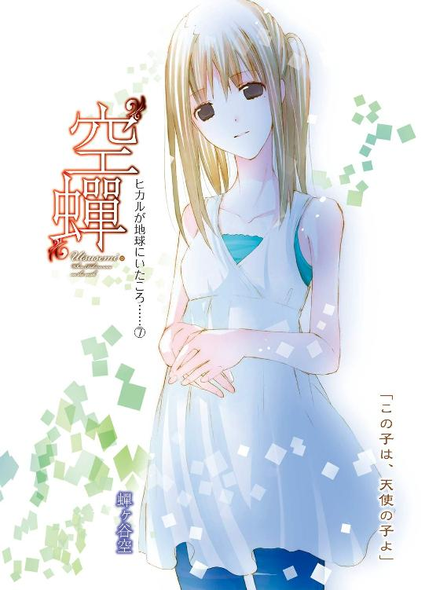
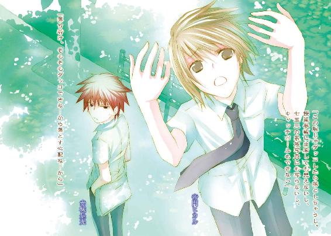
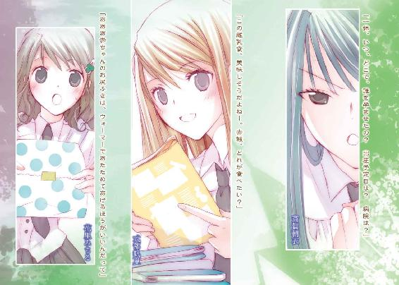
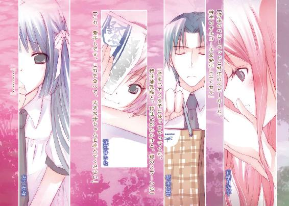
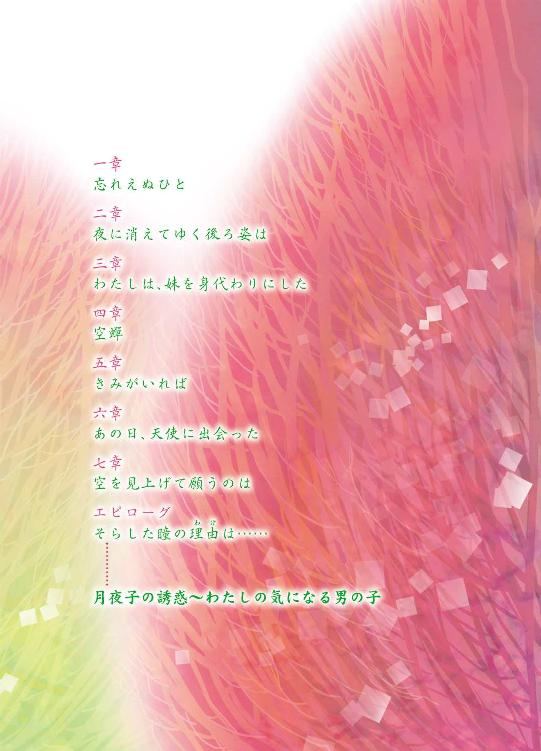
本作品の全部または一部を無断で複製、転載、配信、送信したり、ホームページ上に転載することを禁止します。また、本作品の内容を無断で改変、改ざん等を行うことも禁止します。
本作品購入時にご承諾いただいた規約により、有償・無償にかかわらず本作品を第三者に譲渡することはできません。
本作品は本文縦組で制作されております。ごらんになるリーディングシステムにより、表示の差が認められることがあります。
はじめてあなたを見たとき、天使かと思った。甘い花の香りのする、清らかな、透明な光に包まれて、あなたはひっそりと微笑んでいた。
その白く美しい横顔が、とても哀しそうに見えて、救いを求めているようで。
わたしは息をのみ、あなたの声にならない声に、必死に耳をすませた。
あの日から、わたしは道に迷ってしまった。
もうやめよう。
もう忘れよう。
疼き続ける胸の奥で、何度もそう願いながら、何度も――何度でも、あなたのもとへ戻ってきてしまう。夏の野に咲く萱草を忘れ草と呼ぶのだと、教えてくれたのはあなただった。
だからわたしは庭に、あざやかな夏の日差しの色をした、百合に似たあの花を植えた。「――赤城くん、きみに聞いてほしいことがあるの」
夏休みの終わり。
しめった風が吹く夜の川辺で、朝衣は強い意志のこもる鋭い眼差しで是光を見つめて、言った。
ヒカルの友人である是光に聞いてほしいのだと、真剣な声で。
「ヒカルが誰を一番愛していたのか。叶えられなかったその恋のせいでヒカルは――」
「待って」
是光の隣でヒカルが静かにささやいたのは、是光が息をのみ、朝衣が核心に触れようとした、まさにその瞬間だった。
「それは、ぼくから話すよ」
是光は慌てて朝衣を止めた。
「おい待て」
けれど朝衣は、
「ヒカルが、誰より一番に愛していたのは」
「待て」
「ヒカルの――」
「おい！」
「最愛は――」
是光の言葉を、まるで聞いていない。
「待てっつってんだろ、朝ちゃん！」
是光は眉をつり上げ、声を荒らげた。
これまでさんざん是光をゴミ虫扱いしてきた朝衣が、是光をヒカルの友人であり代理人であると認めてくれたのは、嬉しい。こんなに険しい顔で語ろうとしているヒカルの秘密も、本当は知りたくてたまらない。けど、ヒカル本人が、今このとき、是光の隣にいて、真面目な顔で「待って」と訴えている。
幽霊のヒカルは、朝衣の目には見えないので、朝衣は平静だろうが、しっかり見えている是光のほうは、ヒカルに関する打ち明け話を聞くわけにはいかない。
さらに言うなら、河原には他にも、帆夏や葵や月夜子やみちる、ひいなに頭条といった学園の面々の他に、是光の妹分の紫織子と猫のこるりまでいて、花火に興じている。
彼らから離れているとはいえ、よくよく見渡せば、帆夏と葵が気がかりそうに、是光と朝衣のほうをちらちら見ており、花火を手にした紫織子も、不満そうに頰をふくらませて睨んでいる。そんな中で、深刻な話をすること自体、無理がある。
冷静で切れ者な生徒会長と評判の朝衣が、気づかないはずがないのに、ヒカルのことで一直線になりすぎていて、周囲の状況が目に入っていないのか、「待て」を連呼する是光に対して不満げに、
「待てって、いつまで！」
と目をキッと尖らせ、突っ込んでくる。
せっかく自分が一大決心をし、重大な秘密を打ち明けようとしているのに、及び腰だなんて男らしくないと、非難されているようだった。
「いつまでって――その具体的には――とにかく、今じゃなくてあとだ」
右からは朝衣に刃物のような目で睨まれ、左からはヒカルに哀願するような眼差しを向けられ、離れた場所から帆夏や葵、紫織子といった面々に見つめられ、是光は腋の下に汗がにじんできた。とにかく、まずは朝衣をなだめなければ。
が、是光が策を講じるより早く、焦れた朝衣が険しい声で叫んだ。
「ぐずぐずしていたら、子供が産まれてしまうわ！」
是光はぎょっとし、とっさに朝衣の体を抱きかかえ、手のひらで口をふさいだ。
朝衣が目をむく。
（今、子供が産まれるっつったか!? 子供ってまさかヒカルの――！）
ヒカルのほうへ慌てて顔を向けると、困ったように眉根を寄せている。
（おいなんだ、そのヘタレた顔は！ マジで子供がいるのかよっ、おまえ！）
今すぐ問いただしたい。
が――。
気がつけば、帆夏や葵が、ちら見どころか身を乗り出してガン見しており、紫織子の頰がますますふくらみ、さらに、ひいなや頭条、月夜子までが、興味津々の、あるいは非難の、あるいは楽しげな眼差しを、是光たちのほうへ向けており、視線を下げれば、是光に口をふさがれた朝衣が、怒っているような恥じらっているような微妙な表情で固まっており、
「あ、や、すまん！」
と、是光は慌てて手をはなし、「っっ」と、歯を食いしばり赤い顔で睨んでくる朝衣に、声を上擦らせながら叫んだのだった。
「とにかく、あとでだ！ あとでっつーのはつまり、二学期に学校で！」
◇ ◇ ◇
帰宅後......。
「あの上から目線で、他人の失敗を鼻先でフンって笑いそうな感じ悪い人は、是光お兄ちゃんのなんなの？ お兄ちゃん、あの、男なんて目じゃないわって態度のくせに、パワハラとかしちゃいそうな人と、やらしいことしてたの？ そんなの是光お兄ちゃんのくせにダメなんだからね！」
と、頰をぱんぱんにふくらませて追及してくる紫織子と、さめた目で様子をうかがっているこるりをかわし、自分の部屋にこもり、ようやくヒカルと二人きりになることができた。畳に胡座をかいて、ぐったりする是光の前を、ヒカルの物憂げな声が経文のように流れてゆく。
「......勿忘草は、空の色を映した小さな可憐な花だね。恋人のために、流れる川に浮かんでいた、一束の勿忘草を手に入れようとした騎士が、川へ飛び込み、命を落としたんだ......。そのとき彼は、その花束を岸で待つ恋人に向かって投げながら『ぼくを忘れないで！』と叫んだそうだよ。......そのあと恋人は彼を偲び、生涯、勿忘草を身につけていたのだって......。そんな風に死後までも想い合うことは、二人にとって幸せだったんだろうか」
澄んだ瞳に影を落とし、ひっそりとつぶやく。少女めいた美しい白い顔には、深いかげりが浮かんでいる。
是光はぼそっと言った。
「いや、川に流されながら花を投げられても迷惑だし、一生忘れるなとか、言われたほうはホラーだから」
「......そうだよね」
ヒカルがうなだれる。
「つか花の話で誤魔化すな。子供が産まれるってどういうことだよ？」
睨んでやると、暗い顔のままつぶやいた。
「それは、朝ちゃんの誤解なんだ」
「誤解？」
「だってぼくは、ふられたから」
細い肩が、力なく下がる。
（へ？ こいつをふる女がいるのか？）
是光は、ちょっとばかり驚いた。生前ハーレム皇子と呼ばれたヒカルは、常に女の子たちに囲まれ、彼女たちから愛されていたから。
「子供の頃から、ずっとずっと好きだった。その人の姿を見ているだけで、胸が甘くあたたかくなって、その人が微笑むだけで、天国にいるみたいな気持ちになれた。この世に、ぼくとその人だけが存在していたらいいと思ったこともある。本当に、なにもかもが好きだった。ううん、好きって言葉だけじゃ語れないほど、恋しくて愛しくて、仕方がなかった。けど......彼女は、別の人と結婚しちゃったんだ」
「人妻かよ！」
「それで、ぼくの義理の母になってしまった」
「って――」
声をつまらせる。
五ノ宮邸で字合わせをしたとき、審査員を務めていた、ヒカルにそっくりの若く美しい女性。あの女が、ヒカルの最愛！
ヒカルが叶わぬ恋をしていることは、夕雨や紫織子の話から、薄々気づいていた。
その女性こそ、ヒカルが心から欲していた――けれど手に入れられなかった、最愛の花であることも。けど......。
（藤乃っつったっけ――。確かにすっげー美人だよな。ヒカルが女装したら、きっとあんな感じで......って、自分と同じ顔の女に惚れるか、普通ー。こいつナル？ いや、問題はそこじゃなくて、相手が親父の奥さんってことで、それ、やべーんじゃ）
「彼女が父の後妻になったのは、ぼくが小学六年生のときで。彼女と一緒にいるのが辛くて、ぼくは中等部の時に、家を出たんだ」
（そうだったのか......）
そんなに好きな相手が義理の母親になって、目の前で父親と夫婦をやられたら、確かにキツイだろう。
「でも、そのあとも忘れられなくて......。離れたら、もっと好きになって。一度だけ......過ちをおかしてしまった」
「！」
是光は腰を浮かした。
（過ちだと！）
ヒカルは目を伏せ、じっと体をこわばらせている。夜中に是光が目をさましたとき、苦しみに耐えるように唇を嚙み、うなだれているときと同じ、こちらの胸まで裂けそうな痛々しい顔だ。
「まさか、おまえ！ 義理の母親とそういう......いや、いくらおまえでも――」
ヒカルは唇を固く結んだまま、黙っている。伏せた目に浮かぶ影も苦悩も、ますます濃くなってゆく。それは、義母と男女の関係を持ったことを、その表情で、その張りつめた空気で、告白していた。
（マジかよ......）
確かに、これは禁忌だ。簡単に口にできるものではない。相手にも害が及びかねない。
次の瞬間、是光はハッとした。
「って、義理母と、そういうことがその、あったってことは、子供ができたってのは、つまり義理母とおまえの――」
体中の血が冷たくなりかけたとき、ヒカルが強い声で反論した。
「ぼくが、あの人と関係を持ったのは、中等部の二年生のときだよ！」
「は、中二......？」
「一度きりだ......っ。本当に、それきりだ。それきり、あの人はぼくを避けるようになってしまって、みんなの前でも、最低限の挨拶くらいしかしてくれなかったし、ぼくに望みを抱かせるような、どんな優しい言葉もかけてくれなかった。あのときのことを、忘れたがっているみたいに――ううん、なかったことにしようとしているみたいに」
千切れそうな声で、一度だけだと繰り返す。
（それが本当なら、中二のときの子が今産まれるわけはねーよな......）
ホッとしながらも、ヒカルがあんまり切なそうなので、是光の胸もひりひりしてくる。
「あの人は今......妊娠しているんだ。朝ちゃんは、ぼくの子だと思っていて、それで、産まれてくる子供を守るために、奔走していたんだ。けど、あの人のおなかにいるのは父の子で――ぼくも、もうあの人を忘れなくちゃいけないと思ったんだ」
それで、つきあっていた女の子たちと別れて、婚約者の葵と向き合おうとしていたのだろうか。
葵さんが〝最愛〟になればいいと思っていたと、ヒカルが淡い瞳で語っていたことを思い出す。葵さんは〝希望〟だったのだと――。
（葵は......ヒカルに最愛の女がいたことを、知ってたのかな）
苦い思いで考える。
だとしたら潔癖な葵は、ヒカルとの関わりが深い分、他の少女たちのようにそれを受け入れることはできなかっただろう。葵の心情を思うと、胸がズキッとした。
ヒカルは最後に、葵を選んだ。けど、葵の十七歳の誕生日を祝うことも、葵に恋人になってくださいと告白をすることもなく、死んでしまった。
雨が激しく降る晩。川に落ちて。
何故、そんな雨の夜に、そんな危険な場所にいたのか？
ヒカルの手首にはリストカットの痕があり、ヒカルは自殺をしたのだと、ヒカルの恋人だった月夜子は言っていた。ヒカルは殺されたのだと噂する者もいる。
が、真相はどうだったのか。
ヒカルが、ぐっと手を握りしめる。
「川に落ちたあの日――あの人に手紙で呼び出されたんだ。ずっと目もあわせてくれなかったのに、突然会いたいだなんて......あの人がなにを考えているのかわからなくて、ぼくは不安で......けど、あの人が会いたいと望んでいるのに、行かないわけにいかなくて......」
待ち合わせの場所は、激しく降り注ぐ雨で、ろくに前が見えない状態だった。川の水も唸りを上げ、荒れ狂っていた。視界も悪く、名前を呼んでも雨と濁流の音にかき消える。それでも愛しい人の姿を求めて、雨にうたれ、風に煽られながら、さまよっているうちに、足を滑らせて川へ落ちたのだと。
「じゃあ、おまえが死んだのは、やっぱり事故なんだな」
是光が念を押すと、ヒカルはわずかな沈黙のあと、苦しそうに、
「......うん」
と答えた。
その妙な間が気になったが、是光が口を開く前に、ヒカルが目を伏せたまま、ぎこちない声で言った。
「川に落ちる寸前ね......誰かがぼくの手をつかんで、引き止めようとしてくれたんだ。その感触は、はっきり覚えている」
「誰かって、義理母じゃねーのか」
「......夜だったし、雨もひどかったから......よく......見えなかったんだ。けど、あの手の感じは女の人だったから、きっと......」
ヒカルの瞳が曇る。
自分の手を最後に握りしめていた相手が、義理の母親であることを、ヒカルは確信しているようだった。そして何故か、そのことで、より苦しんでいるようだった。
川に浮かぶ空色の花を、恋人のために手に入れようとして、命を落としたあの騎士のように、流されてゆく瞬間、ヒカルは彼女に向かって、なにか叫んだのだろうか。
あるいは、彼女のほうが――。
結果的に、女性のか弱い手で十五歳の少年を引き上げることはできず、ヒカルは川へ流され亡くなった。
「......ぼくは、自分で川へ落ちたんだ......それは絶対に確かだ。あの人に責任はない......けれど......ぼくの手をつかんだのが、あの人なら......ぼくは、あの人にまた苦しみをひとつ背負わせてしまったことになる......ぼくがあの人を愛してしまったことで、もうじゅうぶんすぎるほど、傷つけているのに......。あの人を不幸にしているのに......この上、また......」
目の前で、人に死なれたら。ましてやそれが、かつて自分と不適切な関係を持った義理の息子だったら――。一生忘れられない傷になるだろう。
ヒカルが両手を髪に突っ込み、首を横に振り、震える。顔は弱々しくゆがみ、目は痛みと絶望でいっぱいで、唇は青ざめている。
「怖いんだ、是光っ。――ぼくは、あの人の心が――怖い......っ。あの人が、今、この瞬間、なにを考えているのか、本当はぼくをどう思っているのか――この先、どう思い続けるのかも――怖い――。怖くて――怖くて、たまらないんだ......っ」
ヒカルの震えは止まらない。身を縮め、頭を抱え込む。
――ダメだよ、是光。
字合わせの席で、ヒカルが藤乃を見るなり青ざめ、激しく混乱していたことを、是光は思い出していた。離れなければいけない、そう願い、恐れながらも、愛しさがあふれて止まらない――求める気持ちが止まらない――そんな目で、見つめていたこと。
禁忌を犯してまで、結ばれずにいられないほどの愛というものを、是光は知らない。
けど、ヒカルがずっと苦しんできたこと。今も魂が抉られるほどに苦しんでいることだけは、痛いほど伝わってきた。
「よくわかった」
是光は、重々しく言った。
「おまえは、義理母の本心が知りたくて、成仏できずにいるんだな」
ヒカルがびくっとし、さらに気弱な目になり、身を縮める。
「......それだけじゃないけど......。他の人たちのことも、ちゃんと気になっていて、お別れを言えなかった人たちがいっぱいいたから......。ぼくが死んだあと、どうしてるんだろうって......」
「今は、そいつは置いておけ。義理母が、おまえを夜の川に呼び出した理由を、おまえは知りたいんだな」
「......」
ヒカルが迷うように、黙り込む。唇を嚙みながら、瞳を苦しそうに揺らしている。また怖いと言い出しそうで、是光は焦れったくなって、強い口調で言ってやった。
「よし、本人のところへ行って、直接聞いてみようぜ」
ヒカルが目を丸くして、絶句した。
◇ ◇ ◇
翌日、日曜日の早朝。
是光は、閑静な住宅地にある教会へ足を運んだ。週に一度の日曜の礼拝に、藤乃はかかさず通っているという。
ヒカルは「やっぱり帰ろう」「こんなの無理だよ、胸がしめつけられて死んじゃうよ」とゴネていた。
「おまえ、とっくに死んでんだろうが」
小声で叱りつけ、さっさと礼拝堂に足を踏み入れる。赤い髪の目つきの悪い少年が、猫背であたりを睨み回すようにしてやってきたので、他の参列者たちが、ぎょっとしたり、固まったりする。
藤乃はすぐに見つかった。
最前列の席に座って、ひっそりとうつむいている。白い横顔やほっそりした首筋や伏せたまつげが儚げで淋しげで――ヒカルの葬儀の日のことを、思い出した。
親族席で静かに目を伏せていた、黒い着物の、美しい女性。
ヒカルに似たその顔は、涙に濡れていて、なのに唇は嬉しそうにほころんでいた。
あの微笑みを、ヒカルも見たのだろうか。
葬儀のときに浮かべる笑みではない。
透きとおった、安らかな――なのに少しも幸せそうに見えない、あの不自然な笑みを。
一瞬、藤乃がまたあのときのように微笑んでいるように見えて、是光は背筋が冷たくなった。
オルガンの音色が響き、礼拝がはじまる。ヒカルは藤乃を食い入るように見つめている。怖くて逃げ出したくて仕方がないのに、一度視界に入ってしまったら、吸い寄せられ、はりつけられ、そらすことができないというように。
眉根をぎゅっと寄せ、唇を固く引き結び、苦しそうに、切なそうに。
ふれることを許されない花を、愛してしまったヒカル。決して手に入らない花の代わりに、他の多くの花々に愛を注ぐことで、最愛の花を忘れようとしたのかもしれない。
（こいつのためにと思って、引っ張ってきたけど、もし義理母が、こいつのこと、すげー迷惑に思ってて、手紙を出したのも口止めのためで、あげくに目の前で溺れ死にされて憎んでたりしたら、こいつはどうなっちまうんだ......）
そこまで嫌われているならと、心残りがなくなって成仏できるようになるのか。それならいいが、ひょっとしたら、苦しみのあまり、魂ごと裂けてしまうんじゃないか。
牧師の説教などほとんど耳に入らず、険しい顔であれこれ考えているうちに、礼拝が終わった。
「行くぞ」
小声でうながすと、ヒカルが体をこわばらせる。
是光は藤乃のほうへ歩き出した。人が多くて、なかなか前へ進めない。かといって力任せにかきわけるわけにもいかず、もどかしさに唸ったとき。
「！」
出入り口で、バザーのチラシを配っていた教会の関係者らしい若い女性にぶつかってしまった。向こうがチラシを差し出すため腕を持ち上げた拍子に、肩がふれた程度だったが、かばうようにおなかを抱えて、そのままかがみ込んでしまう。
その仕草に、ぎょっとした。
「お、おい、あんたもしかして、子供が――」
マズい！ 今の衝撃で、腹の中で胎児がでんぐりがえったか！
焦りまくる是光に、女性がおなかを抱えたまま体を起こす。左の目尻に小さな黒子がある。
女性は、是光の赤い髪や引きつりまくりの顔や、鋭い目つきにびくっとし、
「だ、大丈夫よ。もう七ヶ月で安定期に入っているから、これくらい全然平気なの。驚かせて、ごめんなさい」
頭を下げ、逃げるように離れていった。
（おい、俺は、赤ん坊をとって食ったりしねーぜ）
憮然としたものの、なにごともなくてよかったと安堵し、あらためて藤乃を追いかけようとしたとき。
「どうしよう」
隣で、うろたえきった声がした。
横を向くと、ヒカルが青ざめている。
「空が、妊娠しているだなんて」
空......って、今の妊婦のことか？ おまえ、知り合いなのか？
尋ねようとした瞬間、ヒカルがこの世の終わりが来たような声で呻いた。
「空のおなかの子、ぼくの子かも」
◇ ◇ ◇
どうしよう、どうしようと呻き続けるヒカルを、是光もまた混乱しながら家へ連れ帰り、自室の襖を閉めるなり、わめいた。
「おま！ 子供は朝ちゃんの勘違いだって断言してなかったか？ 今さらぼくの子かもってどういうことだよ！」
ヒカルが情けない顔で答える。
「だから、あの人――藤乃さんのおなかの中の子は父の子で間違いないけど、空のおなかの子はぼくの子かもしれなくて――ううん、七ヶ月ならきっとぼくの子だ。空は誰ともつきあってなかったし、あのとき、ぼくはズタボロで、あとのこととか考えてる余裕全然なくて」
「ゴム無しでやったのかよ！」
「そんなにズバっと言わないでよーっ！」
ヒカルが頭を抱えてしゃがみ込む。
それからぼそぼそと、教会で会った女性――蟬ケ谷空とのいきさつを話しはじめた。
「空は、ぼくのはじめての人なんだ。中一の夏に、ぼくがあの人に拒絶されてぼろぼろになって、教会の礼拝堂に入り込んでうずくまっていたとき、ぼくを見つけて慰めてくれたのが、空だった」
空の祖父は教会の牧師をしており、当時空は高校二年生で、家の事情で教会の敷地内の建物で暮らしていたらしい。
傷ついて、すがりついてきたヒカルを、空は受け入れ、そのまま二人は祭壇の前で罰当たりなことをしたという。
「って、おまえ、中一って――。しかも教会でって――神様の前だぞ、ちっとは遠慮しろ！」
是光がわめくと、
「そのくらいズタズタだったんだよー。空があのときあたためてくれなかったら、『フランダースの犬』のネロみたいに、翌朝は冷たい死体になって発見されていたかもしれない」
「夏に一晩外で過ごしたくらいで、死ぬか！ 開き直るな！」
ヒカルはしゅんとし、空とはそれきりだったこと。ところが今年の三月はじめに、藤乃に決定的な拒絶をされて、また死にそうになりながらあの教会へ行ったら、礼拝堂に空がいたことを、続けて語った。
「空のおじいさんは亡くなって、空ももう教会には住んでいなかったんだけど、教会のボランティアは続けていて、たまたま礼拝堂に残っていたみたいなんだ。ぼくがどうしようもないときに、現れて抱きしめてくれるなんて、まるで救いの女神みたいだろう。ぼくは夢中で空にすがって、空に溺れて、なんとか心を保つことができたんだ。でなきゃ今度こそ冷凍死体になってたよ。はじめのときと違って三月でも気温的には冬のまっただ中だったし――空が暖房を入れて抱きしめてくれなきゃ、絶対カチンコチンに凍ってた。広いから、暖房入れたって寒かったし。そう、あの日は朝から吹雪いていて、真っ白な雪が深く降り積もってて」
「あー、わかった、わかった。まだ冬で寒かったんだな！ わざとらしく声を震わせるな。で、また祭壇の前でやっちまったのかよ。なんで普通の部屋に移動しねーんだ」
「あんなに傷ついて、あんなにボロボロだったのに、ホテルへ行こうなんて言えるわけないでしょう！ ひに――のことも忘れるくらい、切羽詰まってたんだから！」
「なに逆ギレしてんだ！ ボロボロだろうが、カチンコチンだろうが、つけるもんはつけろよ！」
「是光は経験がないから、そういう教育委員会みたいな台詞が言えるんだよ」
「童貞で悪かったな！ 俺が教育委員会だったら、礼拝堂で乳繰りあってる中坊なんて、矯正施設送りだぜ」
不毛にわめきあったあと、ヒカルが眉を思いきり下げ訴えた。
「どうしよ～～～～～～！」
◇ ◇ ◇
完全に藤乃に真意を問いただすどころでは、なくなってしまった。
翌日は、二学期のはじまりの登校日で、あらたな気持ちで新学期に臨むはずだったのに、是光の隣では首がもげそうなほどうなだれたヒカルが、「七ヶ月ってことは、もう人間の形をしてるよね」だの「どうしてポケットに、あれを入れておかなかったんだろう」だの「空はいつ子供ができたって気づいたんだろう」だの、暗ぁい声でぶつぶつつぶやき続けている。
「おい、今七ヶ月って言ってたぞ。三月から数えたらおかしくねーか」
「最後に月のものが始まった日まで遡って、そこから一ヶ月って数えるんだよ」
「そんな知識、高一男子にあるか！ つか放課後、また教会へ行ってみようぜ」
しかめっ面で、学園へ向かう歩道を歩いていたとき、
「お、おはよ......！ 赤城」
式部帆夏が声をかけてきた。
「おう」
是光が応えると、横に並んで、しゃかしゃかした足取りで歩き出す。唇を尖らせ、視線を横に向けたり下へ向けたりしていたが、やがてぎこちなく言った。
「おとといは、花火......楽しかったね」
「ああ。そうだな」
「赤城、あのとき、朝の宮とすごく親密な雰囲気だったけど......」
「そうか？」
「そうだよっ」
急に帆夏の声に力がこもり、強い目で睨んでくる。
「朝の宮のこと、後ろから抱きしめたりしちゃってっ」
「はぁ？ あれはあいつが余計なこと言うから、口ふさいだだけで」
「女の子の口を簡単にさわったりする？ 葵の上も、みちるも、すごく驚いてたし、心配そうな顔してたんだから。あ、あたしは別に気にしないけどっ、葵の上とみちるが」
「葵と......なんで、花里？」
「っっ、赤城は自覚なさすぎっ！」
帆夏が眉をつり上げ、責めるように言う。
「......ぼくも、そう思うよ」
落ち込んでいたはずのヒカルまで、うなだれたまま暗い声で同意する。
（おまえ、ヘタレてるわりに、ちゃっかり人の話を聞いてて、突っ込み入れてんじゃねーよ）
是光は横目でヒカルを睨んだ。
そのとき、
「おはよう、ほのちゃん、赤城くん」
帆夏の友人で、是光のクラスの級長をしている花里みちるが、はにかみながらやってきた。
みちるは髪をほどき、眼鏡をはずしている。二学期からもこのスタイルでゆくようだ。
帆夏は何故かびくっとし、是光から気まずそうに顔をそむけ、地面を擦るような横歩きで微妙に距離を置いた。
「おはよう、みちる。髪、綺麗に巻けてるね」
「ありがとう。ほのちゃんの髪も、さらさらだね」
そんな女子トークをしながら、帆夏はまたじりじりと是光から離れてゆく。逆に、みちるは、
「赤城くん、宿題、全部終わってる？」
と、是光をじっと見上げてくる。
なんだか居心地が悪く感じて視線をそらすと、車道の向こう側に、細身の女性が立っているのが見えた。
手足の長い、立ち姿の美しい淋しそうな雰囲気のある女性だ。陽射しに透きとおる細い髪が、儚く風に揺れている。
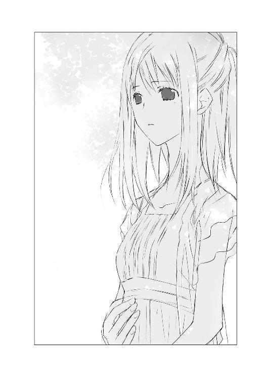
是光が息をのむ横で、ヒカルが、「空」と叫んだ。
空は歩道に立ったまま、そこから憂いのにじむ眼差しで、是光たちの学園の校門のほうを見ていた。
胸の下に切り返しのあるふんわりしたチュニックに隠れたおなかに、大事そうに手をあてている。
そうしながら、哀しそうに切なそうに、登校する生徒達を見つめている。
やがて目を伏せると、ゆっくりと歩き出した。
「式部、俺、遅刻するからセンセに言っといてくれ」
「えっ」
「ああああ赤城くん......！」
驚く帆夏とみちるを置いて、是光は走り出していた。
道路が渋滞していて、なかなか向こう側に渡れない。遠ざかってゆく美しい背中を、がむしゃらに追いかける。後ろで無造作にまとめた髪が、細いうなじと肩で儚く揺れている。チュニックの上にはおっている上着が朝の光を吸い込んで、透き通り、薄衣をまとっているかのように見える。チュニックの裾も、一緒にひらひら揺れる。
（くそっ、縮まらねーっ）
ただゆったりと歩いているだけのようなのに、朝で人通りが多いせいもあって、思うように進めず、追いつけない。それでも見失わないように、必死で目を凝らしていたら、二階建ての質素なアパートに辿り着いた。
そこが空の家らしい。外階段で二階へ上がり、鍵でドアを開け、中へ入る。
「空、こんな近くに住んでいたんだ」
ヒカルがぽつりとつぶやく。
是光も階段をのぼった。
息を乱しながら、インターホンを鳴らす。
返事がない。
もう一度インターホンを押し、それでも返事がないので焦れったくなって、手でドアを叩く。
すると、鍵が外れる音がして、ドアが開いた。
「突然すんません。俺は――」
ヒカルの友人だと名乗ろうとした是光は、啞然とした。
ヒカルも目を丸くする。
玄関先に立っていたのは、左の目の下に泣き黒子がある、清楚な顔立ちの若い女性――蟬ケ谷空だ。
何故か、先が扇状に広がった箒を、しっかり握りしめ、それを振り上げている。
そうして、強気な表情で、是光のぼさぼさの赤い頭めがけて、振り下ろしたのだった。
「誰かー！ 強盗よ！」
箒の柄の部分で殴られて、こめかみがキーンとする是光の耳に、空の必死な声が響き渡る。
そのまま、続け様にばしばし殴ってくる。
「違うっ、俺は――うぉっ」
「神様ー！ 強盗です！」
「空、やめて！ やめて！」
ヒカルがおろおろする。
「――っっ」
箒の柄を鷲づかみし、乱れた髪の間から睨みつけると、空が「！」と怯えて息をのむ。
また強盗だの神様だの叫ばれる前に、是光は怒鳴った。
「俺は、ヒカルの友達だ！」
◇ ◇ ◇
「本当にごめんなさい。ものすごく険しい顔でついてくるから、教会でのこと怒っているんじゃないかって、怖くなって――やっと家に帰り着いたら、チャイムが鳴って、ドアの向こうに、目をつり上げて汗だくで立っているのが見えたから、やっぱりって――。わ、わたし、箒で殴っちゃったりして......っ。あの、痛かったでしょう？ そうよね、痛いわよね。腫れているもの......ぅぅ」
畳にしゃがみ込んで、是光の額に消毒液をつけたり、薬を塗ったり、絆創膏を貼ったりと、かいがいしく手当をしながら、空は心底申し訳なさそうに謝った。目元の泣き黒子が印象的な、清楚な瞳が、すぐ間近で心配そうに是光を見つめている。
「別にっ、このくらいたいしたことねーよ。その、俺も驚かせて悪かったし」
「そうだよ、是光がナマハゲみたいな顔つきで家の前に立ってたら、強盗と間違えちゃっても仕方ないよ」
（おまえが言うな！）
空の横にお座りしているヒカルを、ぎろりと睨むと、空が慌てて、
「そんなに痛む？ えっと、頭痛薬って痛み止めになるかしら」
と、薬箱を探る。
「いや、本当にもういいから」
空は「そう？」とつぶやき、やっぱりまだ心配そうに是光を見ていたが、距離が近すぎることに気づいたのか、恥ずかしそうな顔になり、
「お茶を淹れるわね」
と、そっと立ち上がった。
是光のほうも、ようやく部屋の中を見渡す余裕が出てくる。
キッチンのついた部屋の他は、もう一部屋くらいで、外から見た印象と同じく質素だが、隅々まで丁寧に掃除がゆきとどいていて、レースのカーテンも白く清潔だった。
アロマポットに、緑茶と乾燥したグレープフルーツの皮を混ぜたものがあり、そこから爽やかな香りがただよっている。
落ち着いた色合いの壁掛けやクッションも手作りのようで、テーブルの脇に置かれた籠に、編みかけの小さな靴下があった。赤ん坊のために編んでいるのだろうか。
「うちは、緑茶しかないのよ。妊娠中にカフェインをとりすぎるのは、よくないって聞くけど、一日、一、二杯くらいなら許容範囲みたいだし、やっぱり、これが一番落ち着くから。赤城くん、酸っぱいものは平気？」
「ああ」
答えると、あたたかな緑茶と一緒に、パプリカやうめぼしの酢漬けがガラスの器に盛られて出てきた。
「つい、漬けすぎちゃったの。苦手でなかったら、手伝って」
添えられたフォークで、パプリカを口に運ぶ。少し酢がききすぎている気がしたが、後味はさっぱりしていた。
「うまいな......これ」
「よかった」
空が清楚に微笑む。
ヒカルが出会ったとき、空は高校二年生だったというから、今は二十歳くらいだろうか。もっと年上に見えるのは、外見よりもむしろ、落ち着いた物腰のせいだろう。
ヒカルの恋人の月夜子も仕草が美しい女性だが、月夜子の日常から浮き上がっているような圧倒的な優雅さとは対局の、日常に静かにとけ込んだ涼やかで透明な雰囲気が、空にはある。話しかたもおだやかで、すっきりしたアルトの声が聞きとりやすく、感じが良い。
顔立ちも決して華やかではないが、目尻の泣き黒子が妙になまめかしく、また色素の薄いさらりとした髪や、肌の白さ、首筋の細さや、透明感のある淋しげな横顔が藤乃を思い起こさせて、胸の奥がざわめいてしまう。
顔は藤乃のほうが、格段に整っている。
けど、かもしだす雰囲気が似ていると感じた。
その横顔を、ヒカルが切なそうにうるんだ瞳で見つめている。
是光はややためらいながら、ぶっきらぼうに切り出した。
「腹の子は、ヒカルの子なんじゃねーか」
空が小さく息をのむ。
「空のことは、ヒカルからいろいろ聞いてる。今年の三月にヒカルと教会で会ったことも......。あのときの子供なら、ちょうど七ヶ月だな」
是光は空をじっと見つめた。ヒカルも同じように、深刻な表情で空を見つめている。
空は、是光から目をそらさなかった。淋しげな瞳の奥に、芯の強さを感じさせる光をたたえたまま、背筋をすっと伸ばし、落ち着いたアルトの声で言った。
「ヒカルくんの子では、ないわ」
「なら、なんで、うちの学校を見てたんだ。あんな哀しそうな顔で」
「わたし、不幸顔だとよく言われるの。この泣き黒子のせいかしら。あそこにいたのは、たまたまとおりかかっただけで、特に意味はないわ」
「......ヒカルは、空は誰ともつきあってなかったって、言ってた」
「わたしがヒカルくんに話さなかっただけで、そうじゃなかったかもしれない。ヒカルくんとわたしが会ったのは、たったの二回なんですもの」
それは確かにその通りで、ヒカルのほうを見ると、眉を下げたまま空のほうへ身を乗り出してきた。
「誤魔化さないで、空！ 二回しか会っていなくても、ぼくはきみをずっと追いかけていたから、きみが身持ちの堅すぎるくらいの人だってことは、よく知ってる。子供の頃から教会へ通っていて、今も大学で教会の仕事につくための勉強をしていて、わたしは一生神様にお仕えするの、神様と結婚したのよって、はじめてのときに言っていたよね。だから、ぼくとのことは神様に対する不貞で、二度とあってはならないことだって。二度目のときも、もうこんなことは絶対にないと思っていたのにって......。わたしは神様に二度も不貞をはたらくのかしらって......。それは畏れおおいことだわって......」
ヒカルの目に切なさがあふれ、声は悲痛な響きに満ちていた。
空が、そういう貞操堅固な女性だと理解しているからこそ、空の言葉に疑念を抱かずにいられないのだろう。
空に、どこまでヒカルの言葉を伝えればいいのか、ためらいながら是光は口を開いた。
「ヒカルは、空は軽々しくそういうことする女じゃねーって言ってた。空は、神様と結婚してるんだって」
空が目を細める。
それは、泣くのを我慢しているのか、つい微笑んでしまったのか、よくわからない、曖昧な表情だった。
「なぁ、教えてくれ。ヒカルの子じゃないなら、父親は誰なんだ？」
アパートに男ものは見あたらない。数ヶ月後に子供は生まれてくるというのに。もし父親がいるというなら、アパートに出入りをした形跡すらないのは不自然だ。
空が、すっとおなかに手をあてる。
是光がドキリとするような、柔らかな優しい仕草だった。
そうして、口元におだやかな微笑みを浮かべ、すっきりした声で告げた。
「父親はいないわ。この子は、天使の子よ」
◇ ◇ ◇
「空は......帚木みたいな女性なんだ」
学園へ向かう土手道を並んで歩きながら、ヒカルが切ない眼差しで語った。
――この子は、天使の子よ。
あんなにまっすぐな瞳で断言されては、問いつめることもできず、部屋を出るしかなかった。
厳しい残暑に汗がしたたり落ち、喉がひりつく。どこからか蟬の鳴き声が聞こえてきて、ヒカルの声をたびたびかき消す。
「『新古今和歌集』で坂上是則が『園原や伏屋に生ふる帚木のありとは見えて逢はぬ君かな』という歌を詠んでいてね......箒を立てたように、すっきりした姿をした帚木は、遠くからだと見えるけど、近づくと見えなくなってしまう......。そうした伝説から、この歌も生まれたんだよ。近づいても逢えない人......。遠くからは見えていても、そばにゆくと消えてしまう人......。そんな帚木に似て、あなたも私に逢ってくれないのですね......と、切なく呼びかけているんだ」
うつむくヒカルの瞳に、長いまつげが影を落とす。
蟬がますます高らかに鳴く。
「空とはじめて結ばれた朝、目を覚ますと、空はいなくなっていた。ただ雨の日の空の色みたいな淋しいブルーグレイのカーディガンが、ぼくの体に優しくかけてあった......。前の晩は、香りも、体温も、重みも、あんなに確かだった存在が、幻のように消え失せていて......残ったのは、脱け殻みたいな薄衣一枚だった」
教会の窓から射し込む透明な朝の光の中、まだ幼い素肌に、女物のカーディガンを一枚きりまとって目覚めたヒカルが感じた、淋しさ。喪失感。
それが、ヒカルの表情を切なく曇らせてゆく。
「冬のあのときも......目覚めるとやっぱり空は消えていて、雪みたいな真っ白なショールが、そっとぼくを包んでいたよ。そのあとは、いくら会おうとしても会ってくれない。
どれだけ追いかけても、求めても、焦がれても、どうしてもつかまえられない......。まるで、伝説のあの木のように......。そういうところも......あの人に似ていたんだ」
夏の終わりの日射しはまぶしく、汗がぬぐってもぬぐっても噴き出すほどなのに、ヒカルの瞳は暗い。
藤乃の哀しげな横顔と、空の淋しげな横顔が重なって、是光は胸がズキッとし、ぎこちなく尋ねた。
「空は、藤乃の身代わりなのか？」
ヒカルがうつむいたまま、首を横に振る。
「そうじゃない。後ろ姿や仕草や髪や指先が似ているし、そのことにドキドキもした。けど、空は空だよ。はじめてのときも、その次のときも、ぼくは空に救われた。空と、もっと一緒にいたかった」
「空とも約束をしたのか？」
「ううん。空は約束を望まなかったから」
ヒカルが、切なそうにつぶやく。
「ぼくが『約束をしよう』って言うと『約束は嫌いなの』って答えるんだ。『だって、約束は叶わないものだから』って――」
そうして、眉根を寄せて是光を見た。
「だからぼくは、いつか約束をしようという約束をした。それがどんなものであっても、必ず叶えるという約束を。空は困ったように微笑んだだけで、ぼくが一方的に差し出した約束を、受けとってはくれなかったけれど......。ぼくの中では、大事な約束だった」
その言葉には、空への想いがこもっていた。
確かに空は、ヒカルにとって大事な女性だったのだろう。
（はじめての相手は、特別だっていうしな......）
けど、その相手は、ヒカルの最愛の女性と同じように、ヒカルの想いを受け取ってはくれなかった。
「空は......もしぼくが生きていても、ぼくに黙って一人で産むつもりだったのかな。ぼくの子じゃなくて、天使の子だって言って」
眉がどんどん下がってゆく。それから、顔を振り上げて、強い口調で言った。
「けど、空のおなかにいるのは、ぼくの子だ。是光、ぼくは空になにができるだろう。この腕じゃダッコしたら子供を落としちゃうし。そしたら怪我をさせちゃって、ああっ、救急車も呼べない」
「落ち着け、そもそもダッコできねーから、落とす心配ねーから」
「授業参観に出席しても見えないし、七五三の家族写真にも写らないし、キャッチボールもできない」
「って、おい、俺の言葉、聞こえてるか？」
「庭にビニールプールを置いて、ホースで水をかけてあげたりも絶望的だし、一緒に花壇に種もまけない。自転車や逆上がりの練習にもつきあってあげられない父親なんて、子供が不憫すぎだよ」
「俺も父親に、花壇に種まきとか、逆上がりとかつきあってもらってねーけど、別に不憫じゃねーぞ」
ヒカルの嘆きっぷりに、是光は溜息をついた。
「ま、その、おまえが、空と子供のこと気がかりなのはわかるし、なんかできることねーか、俺も一緒に考えるから」
とはいっても、是光も子供のことなんて、さっぱりで......。
やがて学園に辿り着き、渋い顔で校門をくぐり、昇降口まで来ると――目の前に仁王立ちした朝衣が立っていた。
「で、わたしは、いつまで待たされるのかしら？」
「げ、忘れてたぜ」
◇ ◇ ◇
（赤城、遅刻するって言ったけど、いつ登校するんだろ。もう三時間目終わっちゃったよー）
空っぽの隣の席を見ながら、帆夏はずっとヤキモキしていた。
（今朝の女の人、誰だったんだろう。年上っぽかったけど、女子大生？ ＯＬ？ 赤城とどういう関係？）
新学期早々授業をサボって、あんなに目を突き出し、血相を変えて追いかけるなんて。
（あの人と、なにしてるんだろう）
妄想がどんどんふくらんでいって、胸が押しつぶされそうで、帆夏は立ち上がり、教室を出て昇降口へ向かった。
これで何度目だろう。
休み時間のたびに、教室と昇降口を行ったり来たりしている。
（赤城も、メールくらいよこせばいいのに）
唇を尖らせたとき、赤い髪が目に映った。
（赤城！）
駆け寄ろうとして、ハッとする。
是光の前に生徒会長の斎賀朝衣が、仁王立ちしている。朝衣は氷の礫のようにぴりぴりした空気をまとい、険しい目で是光を睨みつけており、
「逃げる気だったんじゃないでしょうね。きみだけの問題じゃないのよ」
などと言っている。
「逃げねーよ。けど、授業が」
是光がしかめっ面でつぶやくと、
「出なくていいわ」
と言い切り、是光を連行するように先に立って歩き出した。
そのあとを、苦い顔をした是光が、猫背でついてゆく。
（なに？ どうなってるの？ きみだけの問題じゃないって、どういうこと？）
ぐるぐるとうろたえる帆夏の脇から、
「スクープの予感ですね」
いきなり報道部の近江ひいなが、顔を突き出した。
「わっ、近江。またあんた――」
「行きましょう、式部さん」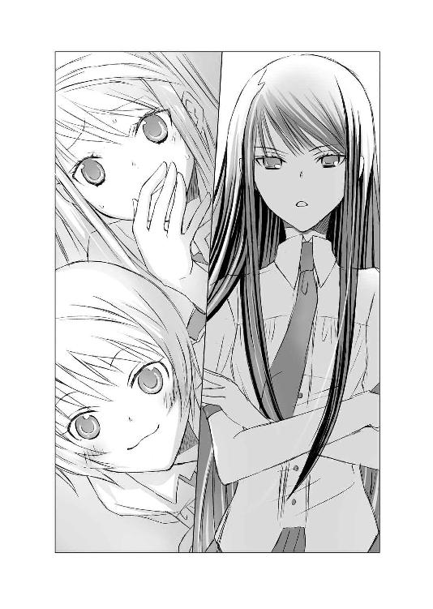
大きな胸を揺らしながら、楽しげな足取りで是光と朝衣のあとを追うひいなのあとを、帆夏も、
「ちょ、ちょっと――」
と、声を上擦らせながら追いかけたのだった。
◇ ◇ ◇
「だから、おまえの勘違いだって言ってんだろ」
生徒会室で、是光は朝衣に向かってぶっきらぼうに説明をしていた。
「ヒカルの義理の母ちゃんの腹にいるのは、ヒカルの子じゃねー」
「何故、断言できるの。ヒカルはずっと彼女を愛していたのよ。彼女もヒカルを避けながら気にしていた。今年の三月に彼女が里帰りしたとき、ヒカルは会いにいったのよ。そこでなにかあってもおかしくないでしょう。帰ってきてから、ヒカルはずっと様子がおかしかったし」
「違うよ、朝ちゃん。あの人に会いたくて家まで行ったのはその通りだけど、ぼくは、迷惑だって追い返されたんだ」
「ヒカルは、会いには行ったけど追い返されたって言ってるぞ。母ちゃんとの間には、なにもなかったって」
「そんな話、ヒカルといつしたの？ きみとヒカルが会ったのは、今年きみが学園に入学したあとでしょう」
「それはその......短い時間に、お互いの人生を濃密に語りあってだな......」
朝衣が疑わしそうに、横目で見る。
「秘密を守るために、噓をついたのかもしれないわ。それくらい大変なことですもの。露見したら、帝門を揺るがすほどの大騒ぎになるわ」
「だから、そっちは違うっつーの。そっちはヒカルの子じゃねーって」
朝衣の頑固さに焦れて口走ると、朝衣が目を刃物のように光らせた。
「そっち？」
低い声でつぶやく。
「もしかして、他にもヒカルの子供がいるの？」
肩がぎくりと上がる。
（げっ、ヤブヘビ――）
「是光、落ち着いて。朝ちゃんにバレたら大変だから、冷静に誤魔化して」
（冷静にって、どうすりゃ――）
とりあえず口をつぐんで、視線をさりげなくそらしてみる。が、それがかえって朝衣に確信を抱かせたようで、
「そうなの？ 一体、いつ、どこで、誰を孕ませたの？ 出産予定日は？ 病院は？ 産まれたあと誰がどう育てるか、ちゃんと考えているの？」
細い眉をつり上げ、ぐいぐい身を乗り出し、顔を近づけてくる。
「お、おい――顔近すぎだ、朝ちゃん」
「誤魔化さないで！ きみにも責任があることよ」
朝衣が是光の襟をつかんで、えらい力で引き寄せる。鼻と鼻が今にもくっつきそうだ。
責任をとって、わたしと一緒にヒカルの子供を育てなさいと言い出しかねない形相で、
「朝ちゃんズレてるよ！ 是光にそこまで責任はないから！ 是光を責めないで！ 空が妊娠したのは、ぼくが男の義務を怠ったからで」
と、ヒカルまで、素っ頓狂なことを口走る。
さらにドアが開き、ひいなと帆夏がなだれ込んできた。
「こ、子供って、赤城......！」
「赤城氏が、会長を孕ませたんですかー！ うわぁっ、大スクープです！」
目を丸くしたまま絶句している帆夏。
廊下に響き渡るほどの大声で、はしゃぐひいな。
朝衣が真っ赤な顔で是光から離れ、
「なにを言ってるの！ 勘違いよ！ いますぐ訂正しなさい」
と叫び、茫然とする是光の横でヒカルが、
「ぼくが悪いんだ......。心はズタズタでも、女の子を気遣うなら、男のたしなみとしてポケットに常に入れておくべきだったんだ。家に、パッケージがキュートなやつとか、香りがいいやつとか、たくさん買い置きしてあったのに」
と、しつこく嘆いていた。翌日の平安学園高等部は、是光が朝衣を妊娠させたという噂でもちきりだった。
どこへ行っても、
「ヤンキーキングが、朝の宮を孕ませたんだって」
「今、四ヶ月目だって」
「朝の宮が、責任とって結婚しろってヤンキーキングに迫ったって本当？」
等々、是光のこめかみをひくつかせるような話が聞こえてくる。
頭条からは、
「貴様は、そんなに手が早い男だったのか......！ 朝衣と仲が悪そうにしていたのは、フェイクだったのか？ それにしてもわからん。一体、朝衣のどこがよくて、いや、その前に朝衣も貴様のどこが――そもそもどういう流れで、そういうことに――いや、さすがに下品な質問だったな。すまない、忘れてくれ。男と女の間には、理解しがたいことが起こりうるのだろう。結局朝衣も女だったというわけだな。ハッ！ まさか葵にも不埒な真似はしてないだろうな！ 葵はいかんぞ！ 葵は！」
と凄まれ、月夜子からも、
「おめでとう、赤城くん。出産祝いに紙おむつと布おむつ、どちらがいいか朝衣さんに訊いておいて」
と、からかわれ、夏休みにメル友になった他校生の常陸ベニからまで、
「赤城くん、デキ婚するって本当？ うちの学校で、平安学園の生徒会長が、赤毛のヤンキーとデキちゃったって、すごく噂になっているんだけど。これ、赤城くんのことよね？」
とメールが届き、教室にいれば、
「わわわわわたしは、信じてるよっ」
と、髪型は変わっても性格はあまり変わらないみちるがあわあわし、隣の席では帆夏が虚ろな目で、
「赤城に子供が......赤城に子供が......」
と、ぶつぶつつぶやいている。
その合間に、朝衣から、
「なにを言われても無視しなさい。余計なこと言ったら殺すわよ」
と、殺気に満ちたメールが届く。そのくせ、廊下でばったり是光と顔を合わせると、ポーカーフェイスを保ちきれず、唇を引き結んだまま頰を染めたりするものだから、
「あの朝の宮が、デレてる！」
「やっぱり、朝の宮のおなかには、ヤンキーキングの子供が！」
と、ますます騒ぎが大きくなり、朝衣が全員抹殺しかねない表情で歯ぎしりするという悪循環だった。
昼休みまでに、これだけのことが起こった。
（俺は、孕ませるようなことはしてねーのに......）
途中から、眉をいちいち上げるのさえ疲れて、ぐったりと椅子に座り込んでいる。頭上ではヒカルが、ひたすら、手をあわせたり、頭を下げたりしている。
「あ、赤城......し、信じていいんだよね」
自分の世界に引きこもっていた帆夏が、急に是光のほうへ顔を向け、睨むように言った。
「っっ、あたりまえだ」
「そ、そうだよね。赤城が朝の宮と......そんなことするわけ......」
なにを想像したのか、カァッと赤くなる。
是光まで赤面しかけたとき。
廊下から、こちらをそっとうかがっている、長い黒髪の華奢な美少女が見えた。
葵だ！
青白い顔で肩を小さくすくめ、不安そうに是光たちの教室をのぞき込んでいる。是光と目があうと、ぴくっと肩を震わせ、迷っているような気弱な眼差しで、もの言いたげに、是光を見つめ返した。
是光は急いで立ち上がり、葵のほうへ向かった。
「赤城」
後ろで、帆夏が頼りない声を出す。
葵は、是光が近づくと臆したように目をそらし、慌てて立ち去ろうとした。
「葵さん、待って」
ヒカルが必死な目で呼びかける。是光も、夢中で葵の腕をつかんだ。
葵が、びくっとする。
是光は真剣な口調で言った。
「俺に聞きたいことがあって来たんだろ。俺も、葵に話したいことがある。つきあってくれ」
そうして、うつむいたまま戸惑っている葵の手をつかんで、屋上へ向かった。
陽射しが照りつける屋上の、日陰になっているスペースで、葵の手を離す。葵は足元を見つめながら、小さな声でつぶやいた。
「わたし......朝ちゃんが......赤城くんの子供を......あの......」
「斎賀との間に子供はいないし、俺の子でもねー」
きっと葵は気に病んでいるだろうと、心配していた。
葵と朝衣の関係は、月夜子主催の花火大会で改善の兆しは見えたものの、まだ微妙なままで。そんなときに、朝衣が是光の子を身ごもっているだなんて聞いたら、またあれこれ考えてしまうはずだ。
葵にだけは、きちんと説明しておかなければならない。
もちろん、空がヒカルの子供を妊娠しているかもしれないことは、言えないが。
けれど是光の言葉を聞くなり、葵はえらく青ざめた顔を上げた。
「赤城くんの子供ではない......ということは、もしかしてヒカルの！」
是光とヒカル――そろって目をむく。
朝衣といい、葵といい、ヒカルに関して勘が良すぎる。
いや、子供を孕ませた＝ヒカルの子では？ と即座に連想させる行状を繰り返してきたヒカルが一番悪い。
（おまえが、女の子は花なんだよとか言って、ふらふら遊び歩いているから）
「朝ちゃんのおなかに、ヒカルの子供がいるんですか!?」
葵が身を乗り出してくる。さらさらの長い黒髪が、屋上を吹く風に乱れる。
「誤魔化してっ、是光！」
「ち、違う！ 孕んでいるのは別の女で」
「別の......！ なら、ヒカルの子供がいるのは本当なんですか？」
「ああああ、しっかりバラしちゃってるよぉぉぉ、是光。もしかして、わざと？ ねぇ、わざと？」
ヒカルが空中で頭を抱えて身悶えている。
俺を責めるか！ もともとはおまえの浮気が原因じゃねーか！ と、心の中でわめき返しながら、是光も葵に泣きそうな顔をされて、どうしていいのかわからず、唸ってしまった。
葵は目に涙をにじませ、震えている。
ヒカルが生きているうちも、浮気はさんざん見聞きしてきたのだろうが、子供まで作っているなんて、ひどすぎる。しかもヒカルは死んでいるので、責めることもできない。
いや、元凶は是光の上で、じたばたしているのだが。幸か不幸か、葵にはその姿は見えないし、声も聞こえない。
（くそっ、面倒ばかりかけやがって）
浮気者の友人への怒りを腹の奥にみなぎらせながら、是光は葵の肩を両手でつかんだ。
葵がびっくりして目を見開く。
「ヒカルに子供がいるかもしれねーっていうのは、ああいうやつだから、仕方ねぇ。けどっ！ ヒカルが最後に選んだのは、葵だ！ ヒカルの葵への気持ちに噓はない！」
「是光の言うとおりだよ！ 葵さん」
ヒカルもとたんに復活して、両手で握りこぶしを作ってうなずく。
「ヒカルは他の女と別れて、葵一人を大事に守って生きてくつもりでいたんだ。それだけは信じてやってくれ」
「是光の言葉を信じて！ 葵さん！」
ヒカルも真剣だ。
葵は、はじめは驚きの表情で是光を見つめていたが、その目がだんだん淋しそうに曇っていった。
「......わかりました。赤城くんが、そうおっしゃるなら」
小さな声でつぶやいたが、まだ納得はしていないようだった。
赤くなった目を伏せ、黙ってしまう。
「......」
絹糸のような黒髪が、儚く揺れている。細い肩から、葵の戸惑いや哀しみが伝わってくるようで、葵がひどく弱々しく見えて、是光は胸がもやもやした。
俺が、守ってやらなきゃ。
そんな気持ちを、一瞬、強く感じたこと。
それは、ヒカルにも葵にも、絶対に言えないことだった。
◇ ◇ ◇
放課後。葵に感じた複雑な気持ちに、まだ戸惑いを抱えたまま、是光は空のアパートへ向かった。
（きっと、葵のこと、あんな風に思ったのは......空のことで後ろめたいからなんだよな......）
葵は、ヒカルと生前に結ばれることはなかった。
けど、空はヒカルの子供を授かった。
ヒカルは死んでいるから、それはもう葵には不可能なことで......。
葵と空と、どちらが幸せなのかは、男の自分にはわからないけれど......。
ドアの前に立ち、インターホンを鳴らすと、空が出てきた。
「また来たの？」
と、驚いた顔をしたが、
「確認しておきたいことがあって」
と、むっつりした生真面目な顔で言うと、思案するような、ためらうような表情を浮かべたあと、中へ通してくれた。
「どうぞ。昨日と同じものだけど」
緑茶とグレープフルーツの香りがする部屋で、器に盛られて出されたパプリカのピクルスをひとつ口にし、ごくりと飲み込んだあと、是光は空を見据えて言った。
「腹の中の子の父親は、天使だって言ったよな」
「ええ」
「天使じゃ生活費も入れてくれねーし、おむつも替えてくれねーだろう。子供が生まれたあと、どうやって生活してくんだ？ 大学はどうすんだ？」
「大学は休学するわ」
ためらいもなく、すっきり答える。気負いのないやわらかな口調だった。
「少しだけど英語と中国語の翻訳のバイトもしているし、教会のお仕事も手伝わせてもらっているから、慎ましく暮らせばなんとかなるわ」
「けどよ」
それでも、厳しいんじゃないかと心配する是光に、
「節約は得意なのよ」
と、明るい声で安心させるように言う。
「百円あれば、おかずを三品は作れるわ。リサイクルも、教会の講習会で先生ができるほどよ。特にお米のとぎ汁の再利用については、小学生の頃からベテランよ」
語る表情は誠実で浮ついたところがなく、それでいて晴れやかに澄んでいて、隙がなかった。
「空の家族は、なんて言ってんだ」
空が微笑む。
そうすると目尻の泣き黒子が目立って、少しだけ淋しそうに見えた。
「家族には、知らせていないの。父には新しい家族がいるから、頼れないわ」
「空のお母さんは、空が小学生のときに亡くなったんだ。お父さん、再婚したんだね」
ヒカルが横から、しんみりした口調でつぶやいた。
（そうか......家族には、頼れねーんだ......）
ふと、オーストラリアにいる夕雨のことを思い出した。
夕雨も、父親が再婚して仕送りが止まって、ボロボロのアパートでひっそりと暮らしていた。
けど、儚げで今にも消え入りそうだった夕雨に比べて、空の口調も態度も芯の強さを感じさせた。部屋の中も、昨日見たときと同じように清潔で整然としていて、窓から透明な光がこぼれている。
空は、自分もトマトのピクルスをつまんで、口へ入れた。
「酸っぱい」
と、唇をきゅーっとすぼめる。
「やっぱり、どうしても酸っぱいわね」
「そら、酢漬けだし」
「そうなんだけど、実は、酸っぱいの苦手なの。けど、妊娠すると、みんな酸っぱいものをたくさん食べるから、そうしたほうがいいのかしらって。おなかの赤ちゃんに、少しでもよいものをあげたいでしょう。誰か、妊婦はクリーム餡蜜を一日三食とるべきって論文を書いてくれないかしら。それならいくらでも入りそうなのに」
「......無茶言うな」
キッチンへ目を向ければ、梅干しや大根やパプリカのピクルスが入ったガラスの瓶が、大量に並んでいる。
「つか苦手なのに、あんなに作ったのか」
空が目を細める。今度の笑みは、やわらかであたたかだった。
「親バカなのよ」
心地よいアルトの声で、さらりと答える。
胸の奥が、小さくしめつけられた。
ヒカルも、まぶしく切ないものを見る目をしている。
空はクッションに足をくずして座り、慣れた手つきで靴下を編みはじめた。
「靴下もね......これで五足目よ。つい編みすぎちゃうの。けど、子供はすぐに大きくなるものだから、ひとつ編み終わったら、次は少し大きめのを編むのよ」
夏の終わりの澄んだ陽射しに、無造作にまとめた細い髪が透けて、金色に光っている。伏せた瞳はなごやかで、編み棒を動かす指は、白くほっそりしていて。
「この子が生まれてくる頃には、サンタクロースがプレゼントを入れるような、大きな靴下が編み上がりそうだわ」
ひと編みひと編み、丁寧に編んでゆく。おなかの中にいる子供への愛情をこめるように、優しくそっと。毛糸は明るい空色で、白い指が操る金色の編み棒の間で、晴れやかな青空が、どんどん広がってゆく。
「やっぱり親バカね」
ささやく声にあふれる確かな愛情に、胸がまたしめつけられた。
一人で子供を産むなんて心細いだろうに......。
そんなことをみじんも感じさせず、満ち足りた表情で、生まれてくる子供のために靴下を編んでいる。そうして時おり、ふわりとしたチュニックの上からおなかに手をあて、やわらかく微笑む。
強く優しい姿。
そこに、みじめさは欠片もなく、神々しくさえあって――。
是光は甘いような苦しいような胸の疼きに耐えながら、見つめていた。
◇ ◇ ◇
（俺の知っている〝母親〟は泣いてばかりだったのに......）
帰り道。
蟬の鳴く声を聞きながら、のろのろと歩く是光の脳裏には、小学生の頃、家を出て行った母親の姿が浮かんでいた。
――ごめんね、みっちゃん。
――ごめんね。
うつむいて泣いてばかりだった母親。
是光の顔を見るたび、ごめんね、とか細い声で謝っていた。
あまり外出が好きではなかったのか、よく部屋の隅で、ちまちまとフェルトの小物を作っていたけれど、そうすることで自分の世界に閉じこもっているようで......細くて小さな後ろ姿はひたすら淋しげで......。
――ごめんね、みっちゃん。
暗い夜、淡い外灯の明かりの中、手に大きな旅行鞄を持って遠ざかる小さな背中。
窓にはりついて、お母さんが振り返ってくれますようにと願いながら見ていた、幼い自分。
あの願いは、叶わなかった。
是光が暗い顔で黙っているからか、ヒカルも声をかけてこない。ヒカルはヒカルで、空の決意を聞いて思うことがあるようで、真面目な顔で考えに沈んでいる。
「ただいま」
家に帰り着き、玄関の引き戸を開けると、白猫のこるりが居間からすっと顔を出した。
そのまま近づいてくることもなく、瑠璃色の瞳でクールに見つめている。
ここ最近は是光が帰ると、紫織子がぱたぱた走ってきて「おかえりなさい！ 是光お兄ちゃん！」と出迎えるのが定番になっていたが、今日は現れない。
代わりに包丁を持った小晴が、台所から顔を見せた。
「おかえり、是光。夕メシ前に、風呂の掃除頼む」
ぼさぼさの赤い髪を頭の上でまとめ、Ｔシャツに、ジャージのズボンの裾を折り返してはく――というのが、小晴のスタイルだ。台所仕事をしているときは、短いエプロンを腰に巻いている。
「わかった......」と答えながら「しーこは？」と尋ねると、
「醬油が切れたんで、じいさんと買いにいってる。しーこに使いを頼んだら、じいさんが暗くて危ないって、ついてって。スーパーは片道十分だし、外もまだじゅうぶん明るいじゃねーか。囲碁雑誌を買うついでだとか言ってたけど、居間に今月号が投げ出してあるし、見え見えだっつーの。ありゃ完全に骨抜きってーか、じじバカだね」
と、肩をすくめて呆れ顔で答えた。
――親バカなのよ。
空の、落ち着いたアルトの声が耳の奥で響き、また胸が疼いた。
台所に戻ろうとする小晴に、ぼそりとつぶやく。
「あのさ......妊娠してるとき、もらって便利だったものって、あるか」
「はぁ？」
小晴が鼻の頭に思いきり皺を寄せる。それから目をギラッと光らせ、
「おまえ、まさか、よそさまのお嬢さんを、孕ませたんじゃないだろうね」
と包丁を是光の鼻先に突きつけた。
「ねーって」
「確かだろうね？ この前メシを食ってったお嬢さん、えらく思いつめた顔してたけど」
「式部のことか？ 式部はクラスメイトで――つか、式部とも他の女とも、そういうことはねーからっ」
自宅でまで、女を孕ませた鬼畜扱いされてはたまらない。必死に否定する。
それから、またぼそっと言った。
「俺じゃなくて......知り合いが今度子供を産むんだ。けど、子供の父親はいなくて......家族にも、なんか事情があって頼れねーみてーで。なぁ、子供産むって、すげー大変......だよな」
「あたりまえだろ。命がけだ」
小晴が包丁をおろし、ぶっきらぼうに答える。そうして思案するように、
「今、何ヶ月だ」
「七ヶ月」
「そうか......」
小晴はずいぶん長い間、考え込んでいた。
自分が妊婦だったときのことを思い返しているのだろうか。それとも、一人で子供を産む空のことを、同じ女として心配しているのだろうか。小晴が産んだ子供は、別れた旦那に引き取られ、小晴は会っていない。小晴の妊娠中に旦那の浮気が発覚し、小晴が切れて離婚届を叩きつけたと聞いている。幸せな出産ばかりではないのだ。
やがて、小晴はしかめ面のまま口を開いた。
「あとで、出産前に準備しとくものの一覧をプリントアウトしてやる。必要なものがあれば、なんでも持ってってやんな」
「お、おう」
◇ ◇ ◇
（赤城、また育児書読んでる......）
赤城是光孕ませ疑惑から数日後。
『はじめての出産と育児』というタイトルがついた本のページを、真剣な顔でめくる是光を、帆夏は隣の席で携帯電話をいじりながら、はらはらと見ていた。
『気になるクラスメイトが、女の子を妊娠させちゃいました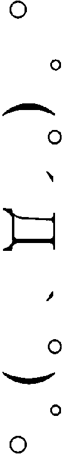
どうすればよいでしょ～～～～～～
ｂｙほのほの』
そんな相談を、懲りずに掲示板に投稿している。
答えるほうも、どうアドバイスすればいいのか、わからないだろう。帆夏だって、自分が運営しているホームページで、同じ相談をされたら困る。
と、思ったら、ブログ用のアドレスに、メールの着信があった。
『ぱーぷる姫、聞いてください！
わたし、デキちゃったかもしれないんです 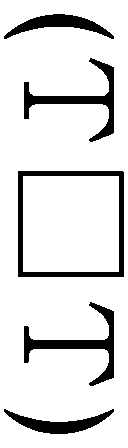
しかも彼の子ではなく、浮気相手のＢくんの子で 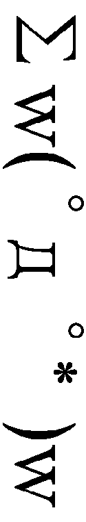 彼の子だって言って産もうか、それともＢくんに慰謝料もらって堕ろそうか、夜も眠れないほど悩んでいます 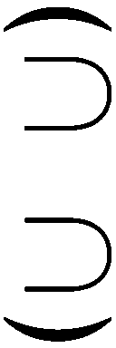
生理がこなくなってから、もう三ヶ月目に突入しています。
体重も十キロも増えてしまいました。
このままだと、明日にも産まれてしまいそうです。
こんなわたしに、ぱーぷる姫のアドバイスをください 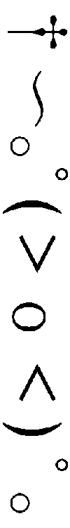』
（～～～～っ、知らないよ！）
さらに、
『ぱーぷる姫、困っています。
赤ちゃんがデキちゃったのに、彼が認知してくれません。
本当に俺の子なのか、なんて言うんです 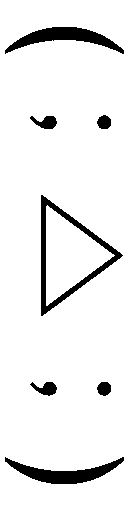
わたし、どうなっちゃうんでしょう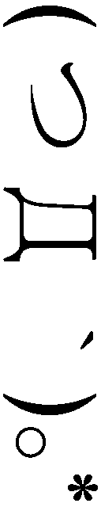』
（どうして、こんなときに、続けてこんなメールが来るの～～～～！）
そういえば、先日更新した携帯小説の内容が、ヒロインのナツノの恋人であるタクマの、子供をみごもったというライバルが現れるという展開だったと思いいたり、机に頭を打ち付けたくなった。
（赤城のことがショックで、つい小説で、みっちり書いちゃったんだ。ああああああ、あたしってば、なにやってんの）
想像の中で、自分の頰をぱしぱし連打しながら、恋愛の達人ぱーぷる姫として、質問に答えてゆく。
『まず、妊娠検査薬を購入して、本当に妊娠しているかどうか確かめなきゃだよ。勇気を出して、近所のドラッグストアへ行って 』
『あなたは彼のこと、本当に愛していて、心から彼の子供を産みたいと思っているんだよね 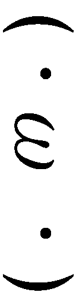
もし、自分の気持ちに確信が持てるなら、彼に、「大好きなあなたの子だから堕ろすわけにいかない。一人で産んで育てるわ」って言ってみて。
恨みがましく言うんじゃなくて、健気に微笑んで言うところが重要ポイントだよっ。
それで彼が、「俺が悪かった、父親になるから産んでくれ」って言ってくれたらオッケー 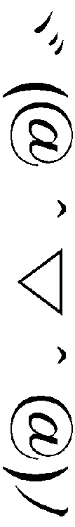
もし彼がそれでも、俺は関係ないとか、迷惑だとか言うようなら、産まないほうがあなたとおなかの子のためだと思う 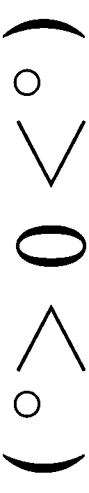
いい結果が出ることを祈ってるよ 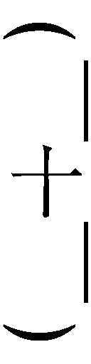』
送信し終えて、先ほど自分が投稿した掲示板をのぞいてみると、いくつか回答が寄せられていた。
『それ、あきらめるしかないですよ』
『気になる彼って、ほのほのさんの片想いなんですよね？ だったら、他にもっと好きになれる男の人を探したほうが良いと思います』
『学生なのに、女の子を妊娠させちゃうような、うかつな人のどこがいいんですか？』
いちいち胸にぐさぐさと突き刺さり、帆夏は投稿したことを激しく後悔した。
（ほ、他に好きな人を見つけるなんて――今は、赤城のことしか考えられなくて、でも、赤城には、妊娠中の彼女がいて――あああああ、もう、頭、ぐちゃぐちゃ）
どうやら是光の相手は、朝衣でないらしいことはわかった。
先日、教師に『ちょっと指導室まで来てくれないか』と言われた朝衣が、他の生徒たちがいる前で教師に向かって、
『ご用はなんでしょう？ ひょっとして、わたしが未経験だという医師の診断書が必要でしょうか』
と、教室中が凍り付きそうな冷え冷えとした声と表情で尋ね、教師が後ずさりながら、
『い、いや、やっぱりいい。私の勘違いだった』
と、言ったことが広まり、やっぱり是光の相手が朝衣というのはガセだったという空気になった。
というより、下手に噂を口にしようものなら、朝衣に聞きつけられて陰惨な報復をされそうで、みんな怖くなったのだろう。それに、ヤンキーの是光と、生徒会長の朝衣とでは、格差がありすぎる上に性格もあわない。
やっぱりあの二人はない、と納得しあった。
が、是光が誰かを妊娠させたという噂のほうは、まだ残っていて、こうして帆夏を悩ませているのだった。
（朝の宮でないなら、相手は誰なんだろう？ 近江は、赤城が女子大生のアパートに出入りしてるって言ってたけど......。もしかして、この前、赤城が追っかけてったあの女の人？）
きっとそうだ。
あのとき、是光は夢中で、彼女以外、見えていない感じだったから。
今も、周りの噂や視線なんて気にしないというように、むっつりした顔で育児書をめくり続けている。
そんな是光を、みちるが離れた席から、首をすくめ、おっかなびっくり見つめている。
みちるは、是光が女の子を妊娠させたかもしれないことを、どう思っているのか？ 今度のことで、是光への気持ちが冷めたりはしないのだろうか？
（あたしは......）
帆夏も、帆夏自身の気持ちについて、あらためて考える。
是光の子供が産まれるかもしれないなんて、やっぱりショックだ。
けど、育児書を読む是光の横顔は、どこまでも真剣で。それは、これまで帆夏が見て、惹かれた、赤城是光という少年のまっすぐさ、そのもので。
（赤城だって、まだ高校生なのに......責任をとろうとしているんだ。父親になろうとしているんだ......）
きっと世間の目も厳しいだろうし、すごく、すごく、大変だろうに。
（赤城は......真面目だから）
胸がきゅーっとし、帆夏は携帯を閉じ立ち上がった。
（やっぱり放っておけないよ！）
◇ ◇ ◇
「赤城！」
隣の席で、眉をつり上げて険しい顔で携帯電話をいじっていた帆夏が、いきなり立ち上がった。
（な、なんだ？）
是光の頭上のあたりに浮いて、一緒に育児書を読んでいたヒカルもぎょっとし、身を引く。
帆夏が、是光の机を両手で叩いた。
そうして、嚙みつくように叫んだ。
「あたし、あんたのヘリオトロープとして協力する！」
◇ ◇ ◇
翌日。
是光の机の上に、赤ちゃん雑誌が、どさどさと積み重ねられた。
「友達のお姉さんが去年出産して、もういらないからってバックナンバーをくれたの。こっちの『たまごっち俱楽部』が出産前に読む雑誌で、こっちの『ひよこっち俱楽部』が出産後に読む雑誌なんだって。出産する病院の選びかたとか、妊婦検診の受診のコツとか特集されてて、ほら、こっちの離乳食特集とかもタメになるよねー」
ページを開いて、ひきつった笑顔とともに是光のほうへ向ける帆夏。
この状況には覚えがある。
一学期に、是光のロリコン疑惑が報じられたとき、帆夏にカラオケボックスへ呼び出されたら、いきなりグラビアアイドルの水着写真集を出してきて、ロリコン矯正のために一緒に見ようと真っ赤な顔で言われたときと同じ――。
（またか......式部）
是光のためを思って行動してくれているのは、よくわかる。こんなに一生懸命に、際どい水着ばかり載った写真集だの、赤ちゃん雑誌だのを用意して、一緒に研究（？）しようと言ってくれる帆夏の気持ちはありがたいし、毎度頭が下がる。
（けど、どっかズレてねーか）
「この離乳食、美味しそうだよねー。フルーツうどんだって。へー。茹でたうどんをすり潰して、すり下ろした桃とか、潰したバナナとかを混ぜて、煮立てるんだー。白身魚をすり潰して、すりおろしたカブと混ぜるやつは、普通に夕飯としてイケそう。ねぇ、赤城、どれが食べたい？」
「......いや、俺が離乳食食っても、仕方ねーし」
それにまだ、産まれてない。
「妊婦さんだからって、体をまったく動かさないでいたらダメなんだよ。ヨガとかするといいみたい。この猫のポーズっていうのどう？ 四つんばいになって、おなかを引きしめて骨盤を上げるの。ね、放課後日舞研の畳で一緒にやってみよう」
「......俺が体操してどうすんだ」
是光が立ち上がると、
「赤城、どこ行くの？」
「次体育だから更衣室。つか、おまえもだろ」
「サッカーとかバスケとか、激しい運動はしちゃダメ！ おなかにボールがぶつかったらどうするの！ 猫のポーズで我慢して！」
「だから、俺が産むんじゃねーって！ 猫のポーズもイルカのポーズもしねーって！」
朝からずっとこの調子だった。
「式部さん、きみがパパになるのを祝福してあげたいって気持ちと、きみが他の女の人のものになるなんて耐えられないって気持ちの間で葛藤しているんだね」
と、ヒカルが、しみじみとつぶやいた。
（だから、俺はパパじゃねー。パパはおまえだろうが。おまえが、そこで猫のポーズしてろ）
と、是光はヒカルを睨んだ。
「赤城、そっぽ向いてないで、ちゃんと聞いて！」
帆夏が是光の顔をつかんで、自分のほうへ強引に向ける。
「あのなー、式部」
「な、なに」
是光が真顔で、じっと見おろしたせいか、帆夏が是光の顔を両手で挟んだまま固まってしまう。
「子供のこと、協力してくれんのは嬉しいが、おまえがそんなにムキになって頑張る必要ねーから」
「む、ムキになってなんか......」
帆夏がぐっと息をのむ。
あ、今の言いかたはマズかったか、と是光も声をつまらせた。
帆夏が是光から手を離し、勝ち気さと弱気さが混じったような複雑な上目遣いで見上げてくる。
「ただ......あたしは、赤城の役に......立ちたくて」
そんな風に言われると、胸がちくちくしてしまう。
「赤城が産みたいっていうなら、応援してあげようって」
「だから、俺が産むんじゃ......」
がっくりと肩を落としたところへ、今度はみちるがやってきた。
「あ、赤城くんっ、わわわわたしもほのちゃんを見習って、赤城くんが子供を産むのを応援するっ。赤城くんの出産を、さ、最後まで見守るから」
と、是光をさらに脱力させる発言をし、
「これっ、赤ちゃんのタオルと肌着とお尻ふきと、ウォーマーなのっ。わたしの気持ち」
と、是光の腕に、カラフルなリボンでラッピングした品物を、どさっとのせる。
「あああ赤ちゃんのお尻ふきは、冷たいままより、ウォーマーであたためてあげるほうがいいんだって」
と、真面目な級長らしく、調べたらしい。
「......ありがとよ」
としか、もはや言えなかった。
さらに昼休みになると、頭条やひいなが続けて現れ、
「朝衣の子ではないそうだな。朝衣の相手になる男などいないと思っていたから、少々残念だ。母親になった朝衣を見そこなうなんてな。だが、せっかく取り寄せたので、産まれてくる子に使ってやってくれ。特注哺乳瓶と、特注よだれかけと、銀のスプーンだ」
「出産は冬頃ですかー、赤城氏。これ、胎教用のクラシック音楽ＣＤです。落ち着きますから聞いてください。それとこっちは煮干しです。これを食べて、丈夫な赤ちゃんを産んでください」
と、それぞれ品物を置いてゆく。
「みんな、いい人だね」
ヒカルが感激している声で言うが、クラスメイトの注目の中「良い子を産んでくれ」などと言われるほうは、たまったものではない。
昼休みに弁当を抱えて日舞研究会の部室へ逃げ込むと、そこには月夜子がいて、
「式部さんや花里さんに、赤城くんの出産祝いのパーティーをしましょうって、相談を受けてるの。愛されてるわね、パパ」
と、からかわれた。
「パーティーとか、いらねーからなっ。センパイも悪ノリして企画するなよっ」
「ふふ、イヤって言われると、やりたくなっちゃうなー」
「勘弁してくれ。子供が産まれるっつったって、俺の子じゃねーし」
「あら、熱心に育児書を読んで勉強しているって聞いたわよ」
「それは......父親がいねーから、せめて俺が力になろうと思って。まるきり無関係っつーわけでもねーし」
ぼそぼそ話していたら、月夜子が急に真面目な顔になった。
「もしかして......ヒカルの子なの？」
是光が声をつまらせる。
（げ、またバレた......！）
ヒカルが、もはやあきらめの笑みをもらしている。
「そうなのね？ ヒカルの子なのね？ ああ、どうしてもっと早くに気づかなかったのかしら。赤城くんが女の子を妊娠させちゃうわけないし、なのに育児書まで読んで勉強してるなんて、ヒカルの子以外、ありえなかったのに」
興奮していっきにしゃべったあと、月夜子の頰に、ぽろりと涙がこぼれた。
「せ、センパイ......！」
ぽろぽろと次々こぼれてゆく透明な雫を見て、女に泣かれるのが大の苦手な是光はうろたえた。
ヒカルも、「月夜子、泣かないで！ ごめん！」と、月夜子の肩を抱き寄せ、おろおろする。もちろん、ヒカルの手は月夜子の肩にめりこんでしまうし、その声も月夜子には聞こえないのだが。
「どうしよう、嬉しい」
「えっ」
ヒカルが目を丸くする。
月夜子が手で顔をおおって、しゃくりあげる。
「ヒカルの子供が産まれるなんて。もうヒカルには会えないと思っていたのに、ヒカルの血を引く子供が産まれてくるなんて......。ヒカルに似ているのかしら。男の子かしら、女の子かしら。嬉しい。どうしよう、赤城くん。嬉しくて......わたし......嬉しくて......涙が止まらないわ......」
肩を震わせて、また声をつまらせる。
是光の前でも、誰の前でも、辛いとき泣き顔を見せなかった月夜子が、嬉し泣きしていることに、是光は胸を打たれた。ヒカルも泣きそうな顔で、自分の体がめりこむほど、月夜子をぎゅっと抱きしめ、ほおずりした。
月夜子が、ぽろぽろ泣きながら言う。
「ありがとう、赤城くん。素敵な知らせをくれて」
「いや......まだその、産まれたわけじゃねーし」
照れくさくてもぞもぞする是光に、
「わたしも、赤ちゃんのこと、協力するわ。特注のベビーベッドと特注のベビーカーと、特注のオルゴールを発注しなくちゃ」
と言ったのだった。
「へ」
◇ ◇ ◇
放課後。両手に大量の赤ちゃんグッズを抱えて、アパートを訪れた是光を見て、空はあきらめの表情で、
「そんなに毎日、来てくれなくてもいいのよ」
と言いながら、お茶を淹れてくれた。
「おい、そんなこと、俺がやるから！」
是光が荷物を置いて、慌ててキッチンへ飛んでゆくと、
「心配性ね」
と、やわらかく微笑む。
振り向いたとき、色素の薄いさらりとした髪から、部屋にただよっているのと同じ、緑茶とグレープフルーツの香りがした。
「少しくらい体を動かしたほうが、おなかの子供にはいいのよ」
「けどっ、もしなんかあったら」
神経質になりすぎていることは自覚していたが、小晴が出産したときは小学生だったからろくに覚えていないし、もちろん自分のおなかで子供を育てたこともないので、なにかの拍子で、子供が外へ飛び出してしまうのではないかと、はらはらしてしまう。
空は、今日もふんわりしたチュニックを着ている。おなかが目立たないデザインなのと、もともと瘦せているせいか、七ヶ月目に入っても、それほど変化はないように見える。それが余計に、ちょっとの衝撃で、ぽっきり折れてしまいそうに思えて、冷や汗がにじむ。
結果、空が立ったりかがんだり、歩いたりするたびに、
「俺がやるから」
「空は座ってろ」
「持つな！ さわるな！」
と、空と一緒に立ったりかがんだり、あとをついて回ったりして、
「本当に、赤城くんは心配性ね」
と、困ったように微笑まれるはめになるのだった。
はじめて身近で体験する〝出産〟に戸惑っているのは是光だけではなく、ヒカルも似たようなもので、
「空、そんな重いもの持ったらダメだよ。ああっ、そんな風にかがんだら、おなかに負担が――」
と、おろおろしている。
男二人がうろたえるそばで、空は泣き黒子のある目元をゆるめ、
「大丈夫よ」
と、心地よいアルトの声で告げるのだった。
そうして、優しい顔で子供のために靴下を編み、時折おなかに手をあて、目元をなごませる。
その姿に、どうしても是光は自分の母を重ねてしまう。
「なぁ......一人で産むの、不安じゃねーのか」
身をすくめて泣いてばかりだった母親のことを思い出して、胸がじくじくと疼くのを感じながら、ぎこちなく尋ねると、空は優しい仕草でおなかに手をあて、おだやかな口調で答えた。
「この子が励ましてくれるわ」
「愛してるのか......子供のこと」
「もちろんよ」
迷いのない、やわらかな声。
幸せそうに細められた目。
なんて、優しい顔をするんだろうと、安心したり、切なくなったりして、鼻の奥がツンとしてしまった。
（俺の母親も、俺が腹にいたときには、こんな風に腹に手をあてて、おだやかに笑ってたのかな......）
そんなこともあったんだろうか。
泣き顔しか思い出せない。
過去の記憶に引き摺られて、気持ちが暗闇の中に落ちてゆきそうで、是光は固く手を握りしめた。
「ねぇ、本当に、そんなに気を遣ってくれなくてもいいのよ。きみも学校の勉強とか部活とか忙しいでしょう。今日も、ずいぶん早いみたいだけど」
「ああ、六時間目、自習だったから、課題のプリント速攻で終わらせて、フケてきた」
とたんに、額をこつんと叩かれた。
「こらっ、ダメでしょう。自習だって授業には変わりないんだから、ちゃんと最後まで教室にいないと。今度サボったりしたら、もう部屋に入れませんからね」
頰をちょっとふくらませて、まるで小さな子供を叱りつけるお姉さんの口調で言ったあと、顔を赤らめた。泣き黒子の周りも、ゆっくり染まってゆく。
「あ、ごめんなさい、年の離れた弟がいるものだから、つい」
恥ずかしそうにつぶやく。
是光は、ぼおっとしたまま、空を見つめていた。
こんな優しい叱責を受けたのははじめてで、小晴が怒るときは本気の拳骨か張り手で、吹っ飛ばされたし、家出した母親は自分が泣きながら謝るばかりで、是光を叱ることはなかった。
こつんとあたった空の、やわらかなこぶしの感触が、ほのかな熱をともなって額の上に、広がってゆく。
驚きをともなった甘さと切なさに、是光は一瞬、自分が母親を恋しがっていた子供の頃に戻ったような気がした。
（な、なにバカなこと考えてんだ）
すぐに恥じ入ったものの、その包み込まれるようなあたたかな感覚が、なかなか抜けない。
「赤城くん......？」
身じろぎもせずぼんやりしている是光の耳に、心配そうな声が聞こえた。
是光はハッとし、
「こ、これからは授業をサボったりしねーよっ」
熱くなる顔を伏せ、ぶっきらぼうに言った。
おそるおそる見上げると、空は黒子のある目元をなごませて、是光を見ていた。幼子を見守る母親のような優しい眼差しに、また胸がしめつけられる。
「けどっ、俺、ヒカルの友達だから。ヒカルの代わりに、空の力になりてーんだ」
「ヒカルくんの子じゃないと言ったでしょう」
困った子ね、というように眉を下げる。そうすると、泣いているように見えて、また家出した母親を重ねてしまう。
ひりひりする気持ちの行き所が見つけられないまま、是光は唸るように言った。
「ヒカルがっ、いつか約束をしようって、約束しただろっ。それ、俺が叶える！ だから、ヒカルがもし生きていたらしてほしかったこと、なんでもいいから教えてくれ」
空のために、なにかしたかった。
ヒカルの代わりというだけではなく、きっと是光自身が。
一人でおなかの子供を守っている――母親になろうとしている空のために、なにか。
けど......。
「ないわ」
淋しげな顔のまま、空が答える。
「わたしに、望みはないの」
そんな空を、気がつけばヒカルが切なそうに見つめていた。
是光も、それまでやわらかな空気に包まれていたのが、冷たい水をかけられたような気持ちになり、息が苦しくなった。
アロマポットからは、空の手製の緑茶とグレープフルーツの香りが、すっきりと立ちのぼり、部屋の中はあたたかく明るい。
約束は、好きじゃないの。
だって、約束って叶わないものでしょう。
ヒカルにそう語ったという空。
おなかに優しく手のひらをあて、目を伏せ微笑む姿は、おだやかで聡明で満ち足りていて......。
なのに、目の前から、するりと空の姿が消えて、遠くへ行ってしまったような喪失感に、是光は胸が、ぎゅっとしめつけられた。
外灯の明かりの向こうへ去ってゆく小さな背中が、まぶたの裏に一瞬浮かんで消える。
ヒカルも唇を閉じたまま、淋しそうな目で空を見ていた。
◇ ◇ ◇
「......カオル、イズミ、やっぱりカオルかな」
帰宅後。
是光は自宅の離れにある祖父の書道教室で、文机に向かい半紙に筆と墨で字を書いていた。
ヒカルが子供の名前を考えるというので、それにつきあって、ヒカルが口にするまま、
『カオル』
『イズミ』
と綴る。
太い線で勢いよく書き上げるつもりが、どうしても細く頼りない線になってしまう。
「女の子でも男の子でも使える名前がいいよね......ぼくも、いつまでいられるかわからないし」
そうつぶやいたあとで、
「ああって、そんなこと、今はどうでもいいんだよ」
と、感情をぶちまけ、愚痴りはじめる。
「それより、空だよ。昔から空はああだった。僕が中等部のときは、毎日教会へ通っても、会ってもくれなかった。空には幼稚園児の弟がいて、ぼくはその子の相手をしながら、空のことをずっと待っていたし、その子に空への手紙を頼んだりしたのに、一度も返事をくれなかったんだよ」
園児にそんな使いを頼むなよと、呆れる是光に、情けなく顔をゆがめてみせる。
「あれからたくさんの女の子とつきあって、女の子についていろいろ知ったけど、空のことはいまだによくわからない」
まつげを伏せてつぶやく様子が、痛々しい。澄んだ瞳に、戸惑いと切なさが浮かんでいる。
「どの女の子も、綺麗な花みたいに、愛情という名の水を必要としていて、どれだけ水を注いであげても、もっともっとって欲しがる。それは美しく咲くために必要なことだし、ぼくは求められれば、いくらでもそれをあげる。けど、空は――欲しがってくれないんだ」
欲してくれれば、いくらでも応えるのに。たとえ、川べりに咲く空色の花をつもうとして、命を落としても。
そんな風に、ヒカルは自分に恋した女の子たちを、全力で愛してきたのだろう。惜しみなく水をあたえ、花を咲かせてきたのだろう。
空以外は――。
「どうして、ぼくの気持ちも約束も拒むのに、受け入れてくれるんだろう。女の子は、最初はダメって言うものだけど、そのダメは実はダメじゃなくて、けど、空のダメは、他の子たちのダメとどこか違っていて――なのに、ぼくを抱きしめてくれる手は、愛おしさにあふれていて、すごく優しいんだ。だから――空はぼくのこと、嫌いじゃないはずなのに......」
相手に好意を持たれていると言い切れる、その自信がすごい。
（いや、こいつの場合、目を見れば自分に恋をしているかどうか、わかるんだったな）
そもそも、女に拒否されるという経験自体、ほとんどなかったのだろう。
義理の母である藤乃は別として、受け入れるもう一方で拒否する空のことは、ヒカルにとってもどかしい存在なのだろう。
（ハーレム皇子のヒカルに、こんなやりきれなさそうな、色っぽい顔させるなんてな......ひょっとして女を追いかけたことも、空以外なかったんじゃねーのか）
藤乃は、追いかけることさえ許されない禁忌だったから。
なのに、藤乃に似た空も、いくら追いかけてもつかまえられない。その腕に抱かれても、気がつけば消えている。
ヒカルが、しゅんと肩を落とし、続ける。
「はじめて会ったとき『空は帚木みたいだ』って言ったのが、よくなかったのかな。再会したときに『帚木を見たけど、ふさふさした大きなマリモみたいで、全然綺麗な花じゃなかったわ』って言ってた。ぼくが『それはきっと箒木だよ。箒木を帚木とも言うけれど、伝説の帚木は今は残っていないから、どんな木だったのかは、はっきりとはわからないんだ。箒木も、しなやかな細い茎が、丸い茂みを形づくる様子がキュートな箒みたいで、素敵な花だけどね』って教えてあげたら、『花びらもついていないなんて、花じゃないみたい』って――」
ヒカルの声が、熱を帯びる。きっと三月はじめの雪が降り積もる礼拝堂でも、空にそんな風に力を込めて語ったのだろう。
「そりゃ箒木は、毛玉のお化けみたいにこんもりしていて、もふもふで、枝にぷちぷち実った小さな果実が、食用のとんぶりになって、畑のキャビアなんて呼ばれたりもして、生活臭あふれているかもしれないけど、でも、ちゃんとした〝花〟なんだよ」
手を握りしめ、子犬のように見つめてくる。
「だから空にも『そんなことないよ。箒木はとっても綺麗だし、紅葉したらもっと素敵で、珊瑚の群れみたいだよ――伝説の帚木もこんなだったんじゃないかって思えるくらい。今度一緒に見に行こう』って言ったのに。空は『約束はできないわ』――って、淋しそうに横を向いちゃって――ああ、やっぱりわかんないよっ。ねぇ、是光はわかる？」
「おまえにわかんねーことが、俺にわかるか」
頭を抱えてしまったヒカルに、ぶっきらぼうに返した。
（っっ、女のことなんて......わかんねーよ）
何故、捨てるのに産んだのか......。
母親の誕生日に、母親の好きな字を贈ろうと、半紙に墨と筆で何枚も字を書いた。
お母さんが喜んでくれたらいい。
笑ってくれたらいい。
期待で胸をふくらませながら、何枚も何枚も。
畳一面に広がる『あい』『ゆめ』『ほし』『きぼう』――。
（一枚も、渡せなかった）
筆をぐっと握りしめ、こわばった顔で歯を食いしばる是光に、ヒカルがどうしたのかと心配そうな顔になる。
そのとき、
「是光」
小晴が入ってきた。
「七時に夕飯にするから来いって言っただろ」
「あ、悪ぃ......もうそんな時間か」
小晴が、是光が書いた字をじろりと見おろす。
「なに書いてんだ」
「あ、えっと、子供の名前。なんかいいのねーかなって。今のうちに」
「おまえが決めるもんじゃねーだろ」
「そうだけど、一応候補っつーか。あ、小晴がくれた、わかめとしめじの酢漬けのレシピ。あんま酢っぱくなくて、これならいっぱい食えるって喜んでた」
「そうか......」
「酸っぱいもの苦手なのに、口すぼめて一生懸命に食ってさ......母親って、ああいうもんなのかな」
「......」
「子供が産まれる前から、あんなに大事にしてんのかな......」
――ごめんなさい。
泣き黒子が印象的な目元をゆるめ、優しく微笑む空。
幸せそうに、おなかに手のひらをあてる空。
そんな空の上に、空と正反対の母親の泣き顔が重なり、声が掠れる。
――ごめんなさい、みっちゃん。
「みんな、そうなのかな......。俺の......」
俺の母さんも、俺を愛していたことがあったのか？
そう、問いただしたかった。
俺のことを、かけらほどでも愛していたのか？
俺は、母さんに愛されていたのか？
けど、言葉は喉で止まったまま、苦い唾に変わった。
是光がなにを訊きたいのか、きっと小晴も察したのだろう。口をむっと引き結び、険しい表情で黙っている。
「......」
ヒカルもまた、心配そうに是光を見守っている。
小晴が、溜息を吐くようにつぶやいた。
「おまえの母親な......再婚したんだ。あの教師じゃなくて、別のやつと。それで、おまえには弟がいるんだ」
それははじめて聞く話だった。
「会いたいか」
胸を突き刺されて――頭の中に母親の哀しそうな顔が次々浮かんできて。
「わかんね」
「そうか」
小晴は、母親の連絡先を知っているようだった。
昔、母親の相談相手をしていたから......。
小晴にすがりついて泣きじゃくる母親の姿が、よみがえる。
床に投げ出された、フェルトで作った小さな熊のマスコット。あのとき、二人が交わしていた会話を、小学生だった自分は聞いたはずだ。
襖の向こうに立ちつくして、じっと身をすくめて、耳を凝らして。
そうして、頭の中が真っ暗になって。体中が熱湯をかけられたみたいに熱くて痛くて。
（そう、あのとき、母さんは――）
くそっ、ダメだ！
鮮明になってゆく記憶に、心がブレーキをかける。
思い出すなっ。
あのときのように、全身が火傷したように熱くなって、痛くなって。是光はぎゅっと目を閉じた。
ヒカルが心配そうに、
「是光」
と呼びかける。
小晴は黙っている。
痛みに耐えようと奥歯を嚙みしめたとき、ぱたぱたと足音が聞こえた。
「小晴さん、正風おじいちゃんが、ごはんはまだかーって。しーこもおなかぺこぺこだよー」
紫織子の明るい声が聞こえた。
目を開けると、頭の横で二つに結んだ髪を大きく揺らし、晴れやかな顔で是光のほうへかけてきて、腕にしがみついてきた。
「是光お兄ちゃんも早く行こう。今日の晩ごはんは、是光お兄ちゃんの好きな辛ーいチゲ鍋だよー」
ふにふにしたあたたかな腕や、きらきらと見上げてくるまっすぐな瞳が、是光の心のこわばりをほどいてゆく。
紫織子の足元で、猫のこるりも瑠璃色の目で是光を見上げ、クールににゃあと鳴く。
「って、しーこは、辛いの苦手だろ、また舌を火傷するんじゃねーのか」
「大丈夫。マヨネーズかけると、辛くないから」
「マヨネーズって、それ、邪道だろ」
「いーの。是光お兄ちゃんの好きなものを、しーこも食べたいの」
「じゃあ、俺も、マヨネーズを試してみるか」
「うんっ！ 美味しいよ」
無邪気に笑う紫織子に――小さな妹に、腕を引かれて歩き出す。
ヒカルがホッとしたように、小晴は変わらずむっつりした顔で、是光を見ていた。
翌日。
是光の机の周りは、相変わらずにぎやかだった。
「赤城、出産するときは呼吸が大事なんだって！ 正しい呼吸法をマスターすれば、赤ちゃんもするっと出てくるって！ ネットに動画がアップされてたの。アドレス送るから、見てみて」
「あああ赤城くん、赤ちゃんグッズのお店で、おむつケーキなるものが売っていて、これは、赤城くんに見せなきゃと思って、買ってきちゃったよー。ほら、タオルや肌着やおむつが、ケーキみたいにデコレーションされてて、とっても可愛いの」
帆夏とみちるが、赤ちゃん雑誌や出産グッズを手に、交互に話しかけてくる。それだけではなく、二年生の月夜子まで是光のクラスに居座って、
「ねぇ、ベビーベッドのデザインだけど、こんなのが素敵だと思うの。ちょっと和風が入っていて、モダンな感じでしょう？ こっちのイタリアのレースをあしらったタイプも捨てがたいけど。赤城くんは、どっちがいいと思う？」
と、空が生活しているあの狭いアパートに置いたら、あきらかに浮きそうな――もはやベビーベッドなのか、ベビーベッドという名の装飾品なのかわからない、きらびやかな写真を見せながら、意見を求めてくる。
帆夏とみちるだけでも注目の的なのに、華やかさと美人度で群を抜く月夜子が、とにかく目立つ。
是光の周囲に、突如花園が出現したかのようだった。
「なんだ、あれ、ハーレムか？」
「どこかで見たような光景だな......帝門が生きてた頃とか」
「ハーレムヤンキーか」
などとささやく声が聞こえる。
（勝手に変なあだ名を増やすな！）
と是光は心の中で、わめいた。
ヒカルは何故かペルシアの王様のようなきらびやかな格好で、ふわふわ宙に浮きながら、
「みんな、ぼくの子供のこと、そんなに一生懸命考えてくれてありがとう」
と感激している。
昨日は、小晴からあんな話を聞いて落ち込んだものだが、こんなにぎやかな女たちに囲まれていると、落ち込む隙もない。
（まったく、こいつらは......）
苦い顔をしながら、それでもどこかで安心感を覚えたとき。
（おっ）
教室の出入り口のところに、葵がひっそりと立っているのが見えた。
ヒカルの子供のことが気になって、是光に会いに来たのだろう。思いつめた顔で、おずおずと中をのぞいていたが、迷うように目を伏せたり、上げたり、唇を引き結んだりしている。
この数日、葵はこんな風に少し離れた場所から、複雑そうな表情で是光たちの様子を見ているだけで、それ以上近づいてこなかった。
今日も是光と目が合うと、ぴくんと肩を跳ね上げ、慌てたように顔をそむけ、逃げてしまった。
（それが普通の感覚だよな......）
月夜子のように、愛する男の子供が産まれてくること自体を喜ぶことは、葵には難しいだろう。
ヒカルも神妙な顔つきになり、
「葵さんは潔癖だから、きっと怒っているだろうし、傷ついているだろうね。ぼくが生きていたら、一年くらい口をきいてもらえなかったかもしれない......」
と、自分も胸が痛そうにつぶやいていた。
放課後は、また空のアパートへ行った。ふくよかな緑茶と爽やかなグレープフルーツの混じり合った心地よい香りのする、慎ましく清楚な部屋で、空が編み物をしたり、空がパプリカのマリネを作ったりするのを眺めて過ごす。
葵のことを思い出すと、こんな風に空のもとへ通って、くつろいでいることへの罪悪感が込み上げる。
それと、再婚したという母親への説明のつかない、ちくちくした想いも。
「空、やっぱり願いごとはねーのか」
尋ねると、すっきりした口調で、
「ええ」
と答える。
「ひとつくらいはあるだろう。もっと広くて豪勢な部屋に住みたいとか、豪華客船で旅行したいとか、あ、いや、それが望みだって言われると、財力的に厳しいんだが、空が本気で願うんなら――な、なんとかしてやる」
ムキになって断言する是光を、空がおかしそうに見つめる。泣き黒子がある目元が、『おとなになったら、大統領になる』と言う子供を見守るように、ゆるんでいる。
（ぐ、本気にされてねぇ）
顔を赤らめる是光に、心地よいアルトの声が、優しくささやく。
「広いお部屋はお掃除が大変だし、乗り物酔いするから船もいいわ」
「じゃ、じゃあ、好物を死ぬほど食いたいとか、綺麗なドレスを着たいとか」
「死ぬほど食べたら、きっと好物ではなくなってしまうわ。ドレスも、見るのは好きだけど、実際着てみたら、動きにくくて大変そうよ」
「なら、一日ぐうたらしたいとか――そしたらその日は俺が家事をやって」
「是光、それ母の日のお使い券だよ」
ヒカルに突っ込まれ、
「い、今のは、ナシだ」
と、慌てて言うと、空がくすくす笑う。
「――っっ」
恥じ入る是光に、
「わたしのために、なにかしようとしてくれて、ありがとう。赤城くんはイイコね」
と、また母親のような口調で言った。
是光はますます顔が熱くなり、声が出なくなってしまった。
「仕方ないよ、是光。ぼくだって空には完璧子供扱いされてたし」
ヒカルが慰める。
（って、子供と、そーゆーことするか）
と、是光は悔しまぎれに心の中で突っ込んだ。
静かになった部屋に、蟬の鳴く声が聞こえてくる。
「今年も、にぎやかね......」
空が窓のほうへ目を向け、つぶやく。
話題がそれたことは決して喜ぶべきではないのだが、是光もホッとして、
「ガキの頃、夏休みに蟬の脱け殻集めとか......したな」
と、ぶっきらぼうに言う。
すると、空はどことなく憂いのにじむ眼差しになり、
「その脱け殻は、どうしたの？」
「ビニールに入れて机の上に置いておいたら、風に飛ばされて床に落ちたのを、間違って踏んづけて、粉々になっちまった」
「そう......哀しいわね」
ぽつりとつぶやいた声も、淋しげに感じられた。
泣き黒子が、涙の粒のように見える。
是光もまた、蟬の脱け殻にまつわる記憶を思い返して、暗い気持ちになり、黙ってしまう。
そのまま蟬の声が聞こえなくなるまで、なんとなく話しかけてはいけないような気がして、お互い黙っていた。
「明日もまた来るから」
帰り際、是光がぼそりと言うと、
「約束はしないで。好きじゃないの、約束って」
おだやかな声で言った。
帰り道。
夕暮れに沈んでゆく家々の間の、細い道を歩く是光の気持ちは、やっぱり暗かった。
ヒカルが隣でつぶやく。
「......蟬の話をしたとき、空はちょっとヘンだったね」
「......」
「きみも......蟬に嫌な思い出でもあるの」
気遣うように尋ねるヒカルに、ぶっきらぼうに答える。
「別に......空に言ったまんまだ。集めた脱け殻を踏んづけて、粉々にしちまった。それだけだ」
ただ、誤って踏みつけたのが、是光ではなく母親だというだけで――。母親が、いつものように泣きながら「ごめんね、みっちゃん」と謝ったというだけで......。
（あいつのこと思い出すと、今でもこんなに苦しくて胸が潰れそうになるのは、結局、期待を捨てきれてねーからなんだよな......）
捨てていった息子に対して、ほんの少しくらいの愛情はあったのではないかという期待が。
――ごめんね、みっちゃん。
泣いてばかりの母親。
自分が明るく笑いかけたら、お母さんも泣くのをやめてくれるかもしれない。そう思って、必死に目に力を込め、頰を引き上げようとしたが、目は赤く充血し、顔はこわばるばかりで、笑えなかった。
母親がいなくなってからもずっと、笑っていない。
笑えない。
「ヒカル......おまえの母さんは、おまえに『いつも笑ってろ』って言ったんだよな」
低い声でつぶやくと、ヒカルは淋しげな、澄んだ声で答えた。
「うん......。そうしたらみんながぼくを愛してくれて、ぼくは一人じゃなくなるからって......」
――笑っていなさい、ヒカル。
――愛情で胸をいっぱいにして。
――どんなときでも、あなたは笑っていなさい。
幼いヒカルに、優しい声で繰り返された言葉。
是光が笑えないように、ヒカルは泣くことのできない少年に成長した。
病弱だったというヒカルの母親は、自分の死期を悟って、一人残される息子への愛情から、そう言い聞かせたのだろうけれど......。
――涙を流すのって、どんな気持ちなんだろう。
いつか憧れに満ちた声で、静かにささやいたヒカルの表情を思い出して、胸がしめつけられた。
秋へ向かう空気は、夜が近づくと急に肌寒くなり、淋しい。赤く燃えていた夕日が、少しずつ暗く翳ってゆく。
「......おまえの母さんは、やっぱりいつも笑ってる人だったのか」
「そうだね......。母は父の愛人で、父の奥さんから嫌がらせもされて、本当は辛いこともあっただろうけど......。ぼくは母が微笑んでいる顔しか、思い出せないんだ......」
そう語るヒカルの目も唇も、やわらかにほころんでいたけれど、横顔は哀しそうに見えた。
俺は、笑える日が来るんだろうか。
こいつは、泣ける日が来るんだろうか。
（笑うって――どんな感じだったっけ）
紫織子や、月夜子や、帆夏――。周りにいる笑顔の朗らかな少女達を思い浮かべながら、また胸が苦しくなったとき。
（ん、なんだ、あいつ？）
自宅の門の前に、小学四、五年生くらいの男の子が立っていて、小さな体をそわそわと動かしながら、門の中をのぞいていた。
（小学生......？ しーこの知り合いか？）
「おい」
声をかけると、ぴょんと飛び上がり振り返った。
髪も服も清潔に整った、お行儀のよさそうな少年だ。顔立ちも可愛らしく賢そうだが、緊張のためかぐっと引き結んだ唇が、ちょっぴり生意気な印象を与える。
と同時に、どこかで見たことがあるような、誰かに似ているような気が少しだけした。
少年は、いきなり赤い髪の強面の高校生に呼びかけられて、びびっているのだろう。
それを隠そうとするように、ますます強気に唇を結んだ。
「うちになんか用か？」
尋ねると、驚いたように目を見張り、まじまじと是光を見たが、
「あ、待て！」
是光の腋の下をかいくぐるようにして、ものすごい勢いで駆け出し、曲がり角の向こうへ消えてしまった。
「なんだ、ありゃ」
「しーこに片想いしてる子じゃない？ きっと、しーこに告白しに来たんだよ。怖いお兄さんに会って、逃げちゃったけど」
「怖いお兄さんで、悪かったな」
ムッとしながら気になって、少年が消えたほうを睨んでいた。
（やっぱり誰かに似てたような気がするんだが......。全体にというか、部分的に......）
夕飯の席で、家の前を小学生くらいの男の子がうろついていて、声をかけたら血相を変えて逃げたと話すと、
「やだ、きっとしーこに恋してる男子だよ。家にまで来るなんて、ストーカーみたい。でも、是光お兄ちゃんが追い払ってくれたんだね」
と、紫織子が頰をふくらませたり、嬉しそうにはにかんだりし、正風は、
「ストーカーだと！ いかんっ。しーこ、防犯ブザーと防犯スプレーは持っているな？ 自治会にも、不審者を見たら警察に届けるように回覧板をして」
といきりたち、小晴に、
「小学生を見たら通報しろって？ ボケが加速したと思われるから、やめてくれ」
と、しかめ面で止められた。
「なんだと！ 父親をボケ老人扱いするのか？ これだから女は。このナスの味噌汁も味が薄すぎだぞ」
「塩辛きゃいいってもんじゃねーだろ。刺激が強いものばっか食ってると、舌がバカになるんだよ。あんたと是光は手遅れかもしれねーが、しーこまで繊細な味わいのわからない味音痴になったらどうすんだ。だいたい人が作ったもんに、文句垂れるな」
「もう、小晴さんも正風おじいちゃんも喧嘩しないで」
紫織子が止めたあとも、二人はフンッとそっぽを向き合っていた。
◇ ◇ ◇
翌日。
帆夏たちの攻勢を避け、静かに弁当を食うために、裏庭を歩きながら場所を探していると、隅のほうの花壇の縁に、ぽつんとしゃがみ込んでいる葵を見つけた。
食事もとらず、一人きりで思い悩んでいるようだった。
（声かけたら、また逃げちまうかな......）
それでも見過ごしにできず、そっと近づいてゆくと、
「！」
葵がいきなり、びくっとし、立ち上がった。
是光もハッとする。
建物のかげから、ひょろりとしたなで肩の、育ちのよさそうな眼鏡の青年が現れたのだ。
（一朱！）
ヒカルの兄で、葵に執着している帝門一朱は、ほのぼのとした笑みを浮かべて葵の前に立って、葵に「こんにちは、葵ちゃん」などと、話しかけている。
葵は恐怖のためか、立ちつくしている。
「葵さん！」
ヒカルが切羽詰まった声で叫び、是光も葵のほうへ駆け寄り、
「葵から離れろ！ 変態兄貴！」
と叫んだ。
「赤城くん......」
葵が青ざめた顔で、是光のほうを見る。目に涙が浮かんでいるのを見て、ますます頭に血がのぼった。
「今度はなにしに来たんだ！ 葵に手を出したら、その顔、壁に叩きつけてぐちゃぐちゃにしてやるからな！」
「やめてよ。前にきみに殴られたとき、何日も腫れが引かなかったんだから。鼻の頭にもずっと絆創膏がはりついたままで、鏡を見るたび、一生この間抜けな絆創膏はとれないんじゃないかって絶望して、死にたくなったよ」
一朱がぶるっと震えて、両手で顔をかばう。
「そんなに大事な顔なら、俺にぶっ壊されないように、家の金庫に鍵かけてしまっとけ。その善人ぶったニヤけ面を、見せにくるな」
「はーっ、ひどいなー。ここはぼくの愛すべき母校だし、たまたま寄ったら、葵ちゃんが一人でしょんぼりしていて、元気がないみたいだったから、慰めてあげようとしただけなのに」
「おまえの言葉なんて、信用できねーぜ。この二重人格の女装趣味の変態！」
一朱は、これだから話の通じない野蛮人はというように溜息をつくと、急に愛嬌がこぼれるような笑顔になった。
葵がびくっとし、是光の服の裾をつかむ。
「そんなにぴりぴりした顔で心配しなくても、大丈夫だよぉ。葵ちゃんへの関心は、前が百としたら、今は五十くらいだからぁ」
一朱が舐めるような目で是光を見つめ、ヒカルにそっくりのふくよかな甘い声で告げる。
「だって――葵ちゃんはヒカルの〝最愛〟じゃないみたいだし」
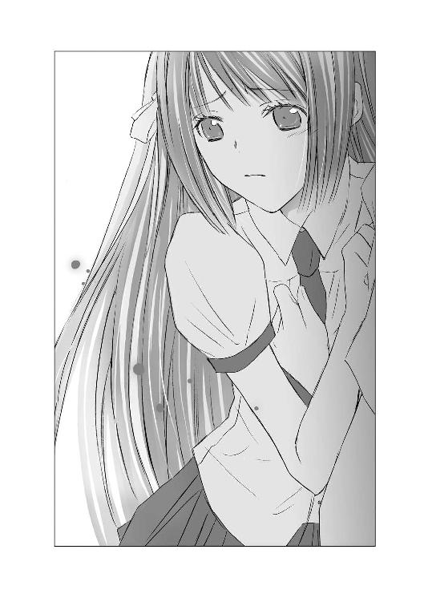
ヒカルも息をのみ、是光もぎょっとし、目をむいた。
（こいつ......まさか）
ヒカルの〝最愛〟が誰なのか、知っているのか？
それを、葵の前でぶちまける気なのか？
「すっかりダマされちゃったよぉぉぉ。ヒカルが葵ちゃんに手を出さなかったのは、葵ちゃんが〝最愛〟だったからじゃないんだねぇぇ。だって、本当の〝最愛〟には、ちゃんとすることしてたみたいだし。葵ちゃんのことは、子供っぽくて、妹みたいにしか思えなかったのかもねぇぇぇ」
葵の顔がますますこわばり、青ざめてゆく。是光の服の裾をつかむ指も細い肩も、震えている。
「やめて、一朱さん！」
ヒカルが悲痛な声で訴える。
是光が、ぶん殴ってでも一朱がしゃべるのを止めようとしたとき、
「そうそう、冬にはヒカルの子供も産まれてくるみたいだねぇ。彼女、女子大生だっけ？ あんな狭いアパートで、女一人で子供を育てようなんて、健気だよねぇぇ。感動しちゃうよ」
と、ますますねっとりした目で続けた。
（アパートで一人で子供を育てるって......こいつ、空がヒカルの〝最愛〟だと誤解してんのか！）
「どんな子だろうねぇ。ヒカルの子だもの。きっと輝くような子なんだろうねぇぇぇ。無事に生まれてくるといいねぇぇ」
ヒカルも一朱の誤解に気づいたようで、別の理由から顔をひきつらせる。
（一朱が目をつけたんなら、空が危ない！）
是光の心臓も冷え上がる。
「本当に楽しみだねぇ。早く産まれないかなぁぁぁ。そうしたら、ぼくの甥っ子か姪っ子になるんだねぇぇぇ。食べちゃいたいくらい可愛いだろうなぁぁぁぁ」
生ぬるい風が一朱の、やわらかな髪を吹き乱し、ふくよかな声をかき散らす。薄いレンズの下の、細い目が妖しく光り、どこまでもやわらかくつり上がってゆく唇が、一瞬、血のように赤く染まったようだった。
蜘蛛の化身。
六条。
背筋がゾクリと震え、踏み出す足が硬直した。
「っっ、一朱、おまえ――！」
是光が襟首をつかみ上げようとしたときには、一朱はその手をゆらりとかわし、離れていた。
「じゃあね、赤城くん、葵ちゃん。次に会うときは、そんなに怖い顔をしないでおくれよ」
と、にこやかに言い放ち、去っていった。
葵は立ったまま震えている。
すがめた目に涙がにじんでいて、唇を固く結び、まばたきを繰り返している。
葵ちゃんは、ヒカルの〝最愛〟じゃない。
ヒカルは〝最愛〟の女性には子供を残し、その子は冬には産まれてくるのだと。
ヒカルにそっくりの甘い声で、あんな風に嬲るように言われて、どれだけ傷ついただろう。
「葵さん。けど、ぼくが最後に選んだのは葵さんなんだっ。一生かけて、葵さんを幸せにするつもりでいたんだ」
ヒカルが葵の隣で、懸命に訴えている。
是光も、葵を励ましてやりたかった。震える細い肩を、抱き寄せたい衝動にかられる。
けど、一朱が狙いを葵から空へ移したのなら、空とおなかの子が危険だ。
一刻も早く、空のもとへ行かないと。
唸る是光に、葵が必死に押し出しているような、掠れた声で言った。
「一朱さんに教えていただかなくても......ヒカルには特別なかたがいらっしゃるんじゃないかってことは......知っていました」
ヒカルがびくっとする。
「わ、わたしだって......いくら世間知らずでも......そのくらい......わかるんです......。わたしは平気ですから、そのかたのところへ行ってあげてください」
ヒカルの眉が下がってゆく。葵に対する申し訳なさでいっぱいの顔で、
「葵さん、幸せにできなくてごめん。死んじゃってごめんなさい」
と、つぶやき、深くうなだれた。
是光も、体を切り裂かれるような気持ちになりながら、
「スマン」
と、頭を下げて、駆け出した。
一人になったあと、葵は木のかげにうずくまって泣くのだろうかと想像すると、ますます胸がズキズキした。
「あ！ 赤城くん！」
渡り廊下から、髪をゆるく巻いた小柄な少女が走り寄ってきた。
みちるだ。
「探してたんだよー。あのね、外国の赤ちゃんグッズを取り扱っているお店があって、すごく可愛いものばかりで、今度赤城くんも一緒に――」
「あとにしてくれ、急いでんだ」
睨むように言うと、みちるはびくっとして固まった。是光はそのままみちるを置いて、校門のほうへ走っていった。
（くそっ！ 一朱の野郎！ 葵の前で、余計なことぺらぺらしゃべる前に、とっととぶん殴って気絶させてやりゃよかった！）
一朱への怒りと、葵に対する葛藤と、空への心配で、頭の中がぐちゃぐちゃで、息が止まりそうだった。
空になにかあったら。
おなかの子供に万一のことがあったら――。
ヒカルの代わりに、空を守るはずだったのに！
空は産まれてくる子供を、あんなに大切にしているのに！
（一朱なんかに――あんな変態野郎に、ヒカルの大事な女もヒカルの子供も、手出しさせるもんか！）
ヒカルも、隣で険しい表情を浮かべている。その姿も、じきに汗で目がかすんで、ぼやけた。
空のアパートに辿り着く頃には、息が乱れ、骨がきしみ、体中が悲鳴を上げていた。
インターホンを鳴らしドアが開くなり、是光は、
「空！」
と叫んで、飛び込んだ。
空が驚きに目を丸くする。
その顔と、ふんわりしたチュニックに隠れたおなかを見て、空も子供もまだ無事だとわかり、それでもまだ心配でたまらず、
「空、なにもなかったか？ 誰か来なかったか？ 脅されたり、襲われたりしてねーか？ 困ってることはねーか？ 空になんかあったら、俺――」
感情が高ぶって、涙が込み上げてきた。
男のくせに涙もろいことは自覚している。けど、こんなときに出てこなくてもいいだろうが。惰弱な自分にも怒りがわいてくる。
ヒカルは是光の足元に、ぺたんとしゃがみ込んでいる。
「よかった......空が無事で」
と、泣き笑いの顔になる。
「どうしたの？ なにがあったの？ 赤城くん」
空が、是光を落ち着かせようとするように肩に手を添え、部屋に招き入れる。
それでも是光の混乱は続いていて、空に勧められて、クッションに腰をおろしてからも、息が整わず、
「俺、空のことが、すげー心配でっ。それで、急いで走ってきて――もし、空が――空と子供が――ヤバイことになったら、どうしようって」
赤い目を必死に見開いて口走っていたら、ふいに空がほっそりした白い腕を伸ばし、是光を抱き寄せた。
まるで、子供を抱きしめる母親のように――。
やわらかで、あたたかなものが、是光にふれ、優しくそっと包み込む。
「落ち着いて、赤城くん」
おだやかなアルトの声が、耳元で子守歌のようにささやく。
「わたしは、なんともないわ。赤ちゃんも元気よ」
胸に満ちてゆくような、ゆっくりとした、慈しみに満ちた口調で。
「ね、もう、大丈夫だから」
ふくよかな緑茶の香りと、爽やかなグレープフルーツの香り。
二つの香りが優しく絡み合い、鼻をくすぐり、荒ぶっていた心を静めてゆく。
それまで女の子に抱きつかれたことはあっても、こんな風に大切に抱きしめられたことはなかった。
鼓動が高まったり、頰が熱くなったりすることもない。ただ、包まれ、安らぎ、癒やされるような優しい感覚に、是光は激しく動揺した。
ボロボロに傷ついていたヒカルが、空によって救われたと言っていたことを、言葉ではなく体で理解する。
どこまでも深く受け入れ、隠し、守ってくれそうな、強さと優しさ、安心感。
それは、これまで関わってきたヒカルの他の花々にはなかった魅力で、その中に埋もれてゆきそうな気がした。
ヒカルのことも、こんな風に抱きしめたのだろうか。
こんなに優しく。
母親みたいに。
遠い昔、まだ物心つく前に、もしあの母親の腕に抱かれたことがあったのだとしたら、もしかしたら、それはこんな感じだったのかもしれない。
安らぎと甘さと切なさが入り交じったような心地がして、離れがたくて......。ずっとこのままでいたくて――こんな自分を、ヒカルはどんな顔で見ているのだろうと考えたら、まぶたの裏が熱くなるほど恥ずかしかったが、それでも動くことができず、空の腕の中でじっと自分の心臓の音を聞いていたとき。
インターホンが鳴った。
一度ではなく、続けざまに二度。
（一朱が来たのか!?）
是光は険しい顔で立ち上がった。
ヒカルも警戒するように、空のかたわらに寄り添う。
「赤城くん？」
「空は、そこにいろ」
是光の言葉に、戸惑いの表情を浮かべる空に背を向け、是光はドアに近づいていった。
インターホンがまた鳴る。
まるで、部屋にいることは知っているのだというように――早く開けろと尊大に命じるように。
目をすっと細め、魚眼レンズからのぞき見る。
すると――。
「へ......斎賀？」
レンズの向こうに、不機嫌そうな顔をした、長い黒髪の背の高い少女が――斎賀朝衣が立っている。
ドアを開けると、朝衣は刃物のような眼差しで是光を睨み、
「ヒカルの相手は、中にいるの？」
と険しい声で尋ね、是光の答えを待たずに、
「どいて」
是光を押しやり、靴を脱いで、部屋に上がり込んだ。
「お、おい、斎賀――」
「朝ちゃん！ どうしてここに？」
空の隣に付き添っていたヒカルも、目を丸くしてうろたえる。
ヒカルの相手が空だということも、このアパートのことも、朝衣にも誰にも話していない。
教師に、清い身であることを証明する診断書が必要かと迫って以来、朝衣が是光の子供を孕んでいるという噂はぴたりとおさまった。
が、また噂を誘発するのを避けるためか、あるいは朝衣でもそんな噂を立てられて恥じらう気持ちがあったのか、ここ数日メールもよこさなければ、是光に近づいてくることもなかったので、油断していた。
その気になれば、ヒカルの相手を調べることなど、朝衣にはたやすいことなのだ。
しかも、是光が連日空のアパートに通っているとなれば、その理由はすぐ見当がつくだろう。
是光が自分に黙って、ヒカルの子供を身ごもった空に接触を続けていることが不愉快なのか、朝衣はひどく苛立っているようだった。
朝衣は一見クールなようだが、実は感情的になりやすいことや、そうなると手がつけられないことを、従弟のヒカルはもちろん、是光も今では知っている。
なので、朝衣のぴりぴりした顔つきを見て、
（やべぇ）
と、即座に感じた。
「斎賀、待て」
「きみの待ては、聞き飽きたわ」
ぴしゃりと是光に告げ、空の前に立つ。
空も立ち上がり、
「あの、あなたは？」
と、戸惑いの表情のまま尋ねた。
「ヒカルの従姉の斎賀朝衣よ」
空が目を見張る。
「ヒカルくんの、従姉？」
「あなたは蟬ケ谷空さんね。ヒカルの子供を妊娠しているというのは、間違いないの？」
「って、おい！」
「朝ちゃん、急ぎすぎだよ」
是光とヒカルの二人で止めるが、ヒカルの声は無論朝衣の耳には聞こえず、是光の声も素通りしているようだった。
空は細い眉を、かすかに寄せている。そうすると、泣き黒子が強調され、淋しそうに見えた。
朝衣が空のおなかのあたりに視線を走らせ、顔をしかめる。
「病院はまだ決まってないみたいだけど、どうするつもりなの？ 本当にヒカルの子なら、こんな狭いアパートで育てさせるわけにはいかないし、子供が産まれたらすぐにＤＮＡ検査を受けてもらわないと」
空の眉がさらに寄る。
朝衣から隠そうとするように自分の腹を抱きしめ、朝衣を見すえた。
それは、是光に箒を振り上げてきたときに見せた強気な表情と同じで、争いを好まなそうな、か弱げな女性が見せた、反抗的ともとれるその目つきに、朝衣はさらに苛立ったようだった。
眉をぴくりと上げ、
「あなたは自分の立場が――」
わかっているの？ と口にしようとするのをとどめ、是光は朝衣の腕をつかみ、無理矢理アパートの外へ引っ張り出し、ドアをしめ、さらに外階段で下までおりた。
「はなしなさい、赤城くん」
「いい加減にしろっ！ 病院のこととか、ＤＮＡ検査とか、おまえが指図することじゃねーだろっ！」
是光の隣で、ヒカルも難しい顔をしている。
朝衣が是光の手を振り払い、きつい声で言う。
「ヒカルの子かもしれないのよ。見過ごせるわけないでしょう。きみだって、わたしに相談もせず、勝手に行動しているじゃない」
是光を睨みつける目に、非難がこもっている。是光が声をかけてこないことに、ずっと苛立っていたのかもしれない。
朝衣の心情を考えて、是光も少し反省した。
ヒカルの子供を守りたいと思う気持ちは、きっと朝衣が一番強いはずだから......。
声をひそめて、謝った。
「悪かったよ。けど、空はヒカルの子じゃねーって言ってるし、一人でひっそり産みたがってるみたいだから、空が了解してくれるまで騒ぎにしたくなかったんだ。ヒカルの子かもしれねー以上、俺だってあれこれしてやりたいし、おまえが平静でいられない気持ちもわかる。けど、母親は、空なんだ」
「......っ」
朝衣が唇を嚙む。
それでも、冷静になって反省したのか、反論してこない。唇を嚙んだまま、悔しそうに唸っている。
「なぁ、力を貸してほしいときには、必ず声をかけるから、それまでちょっと見守ってやってくれねーか」
真剣に頼むと、視線をそらして、
「......困ったことがあったら、本当に、声をかけなきゃ承知しないわよ」
と、ぶっきらぼうに言った。
「おう。朝ちゃんは頼りになるからな」
「朝ちゃんって、呼ばな――」
お決まりの台詞を言いかけ、何故か途中で黙り、目の下を少し赤くし、
「いいわ......朝ちゃんって呼んでも」
「へ」
「きみなら」
ぽそりとつぶやき、是光の表情をそっとうかがい、すぐにキッと顔を引きしめ――と思ったら頰をゆるめ、口元をほころばせ、
「連絡、待ってるわ」
と言って、去っていった。
（な、なんだ？ 朝ちゃんって呼んでもいいって......。今日はサービスデーか？ しかも急に機嫌よくなるし）
「驚いたよ、是光」
横でヒカルが、感心している顔で言う。
「いつの間に朝ちゃんの扱いが、そんなにうまくなったの」
「おまえまで、なに言ってんだ」
「これじゃ、いずれぼくのほうから、教えを請わなきゃいけなくなるかもだよ」
「意味わかんねーしっ」
そんなことを言い合いながら、外階段をのぼり、空の部屋に戻る。
朝衣のことを、空にどう説明したらよいものか悩みながらドアを開ける。
「空、入るぞ」
直後に目に飛び込んできた光景に、是光は全身がこわばった。
ヒカルも息をのむ。
鼻をつく、強烈な芳香。
畳一面に散らばる大量のお茶ガラと、切り刻んだグレープフルーツの皮。
空の部屋にはいつも、日本茶とグレープフルーツの心地よい香りがただよっていた。
自分でブレンドして作った芳香剤なのだと、空は言っていて、作り置きして缶に入れており、そこからスプーンですくってアロマポットに乗せていた。
が、畳に散らばるそれは、缶を誤って落としたというレベルのものではない。缶を振り回して、ばらまいたような有様だ。
空はおなかを押さえ、畳の上にうずくまるようにしゃがみ込んでいる。
左の手のひらから血が流れ、畳にも血の染みができている。そのそばに、割れたカップが転がっている。
和風のデザインで、取っ手がついたやつだ。
いつもそのカップで、緑茶を淹れてくれていた。
是光が持ち込んだ赤ちゃん雑誌や赤ちゃんグッズも、そこかしこに散らばっている。
（なんなんだ、これは。一体、なにがあったんだ）
是光たちが部屋を出たのは、ほんの十分ほど前だ。
なのに、その間になにが――。
「空！」
ヒカルが叫ぶ声で、是光は我に返った。
すぐに空に駆け寄る。
「空、どうした！ 大丈夫か！ 血が――」
「カップが割れて......片づけようとして、手を、切ったの」
空が震える声で言う。
細い髪が乱れていて、頰や額に降りかかっている。唇がわななき、肩も手も小刻みに震えている。
「切ったのは手だけか？ すぐ手当しねぇと。傷口を洗って――」
「ダメっ」
是光がつかんだ手を、空が振り払う。
「いいの。手当は、いらない」
「けど」
どうしたのだろう？
何故、空はこんなに震えているのだろう？
何故、怯えきった目で、うつむいているのだろう？
このめちゃくちゃになった部屋は、空がやったのか!?
頭が混乱で焼けつくように熱くなる。その一方で背筋に震えが走り続けている。
空は、絶対にここから動かないというように、うずくまっている。
左手の親指と人差し指の付け根から、赤い血が今もしたたり落ちていて、畳にこぼれる。
「ごめんなさい」
いきなり、空が掠れた声で言った。
体を折り曲げ、深くうなだれ、泣きじゃくる。
そうしながら、
「ごめんなさい」
と繰り返す。
「わたしは、本当は子供を産んじゃいけないのっ。わたしは妹を、身代わりにしたの！ そのせいで、妹も、わたしの家族も――。わたしは、醜い人間なのっ。子供を持つ資格なんてないっっ！ ごめんなさい。ごめんなさい」
――ごめんね、みっちゃん。
全身から絞り上げるような声で訴え、ぽたぽたと涙をこぼしながら震え続ける空を、是光は、体を刺し貫く痛みと衝撃とともに、見つめていた。
――ごめんね。
――みっちゃん。ごめんね。
顔を覆い泣きじゃくる母親の姿が空に重なり、耳の奥が痺れ、視界が揺れる。
――小晴ちゃん、わたしは......。
小晴にすがりついて、泣く母。
――わたしは、ひどい母親なの......。
首と胴がバラバラになった状態で床に投げ出された、小さなフェルトの熊。
顔を覆う、母親の白い手。
空の手から流れる赤い血。
頰からこぼれる透明な雫、鼻を刺す、芳香。
真っ黒なうねりの中に投げ出されたように、足がふらついた。
「是光、しっかりして！ 空はきみのお母さんじゃないよ！」
ヒカルが叫ばなければ、是光も畳にくずおれていたかもしれない。
その声でハッとし、赤ん坊のために用意してあったお祝い用のタオルをつかみ、それを水で濡らして、空の手をぬぐい、他のタオルで空の手をきつく縛った。
空は泣きながら、されるがままになっていて、
「ごめんなさい......お姉ちゃんが悪かったわ。ごめんなさい......」
と、切れ切れに口走っていた。
その声がだんだん小さくなっていって。
やがて力尽きたように、がっくりと肩を落とし、放心した瞳で畳に散らばる品物を眺めていた。
割れたカップに目を向けたとき、細い眉が哀しげに下がり、泣き黒子のある目元がゆがんだ。
欠片をそっと手にとり、涙でいっぱいの瞳で見おろしながら、
「......ヒカルくんと、選んだカップだったのに」
と、つぶやいた。
そのまま、じっとカップを見つめている。
ヒカルはそんな空を見て、なにかに驚いたように目を見張った。
空は、ぼんやりと思い出にひたっているようだった。
是光は、のろのろと部屋の中を片づけはじめた。体を動かしていないと、またあのうねるような闇にとらわれてしまいそうで、怖かった。
散らばる雑誌を集めていたら、その間から、葉書が落ちてきた。
（これって......）
ぎくっとして、手を止める。
葉書は、写真入りだった。
オランダだかスイスだかの民族衣装っぽい、ふんわりふくらんだスカートに赤い縁取りのある華やかなエプロンをつけた女性が、腕に赤ん坊を抱いている。
けれど、女性の顔も赤ん坊の顔もわからない。
何故なら、ちょうど赤ん坊の首の下あたりから、葉書が横にすっぱりと切り取られていたから。
是光が固まっているので、ヘンに思ったのか、ヒカルもやってきて、横から葉書をのぞきこみ、顔をしかめる。
葉書の下のほうに、サインペンでメッセージが書いてあった。
『おねえちゃん、あいたい 荻』
（お姉ちゃんってことは、この写真の女が、空の妹なのか？）
ヒカルもじっと写真を見つめている。
空はその間も、哀しげな目で手の中のカップを見おろしていた。
そうして、最後まで立ち上がることができなかった。
一人でも大丈夫だから赤城くんはもう帰ってほしいと、懇願するように言われて、是光はアパートの部屋を出た。
すっかり夜がふけてしまった住宅路を、うつむいて進みながら、
――わたしは、妹を身代わりにしたの。
――本当は子供を産んじゃいけないの。
空の叫びが、まだ耳の奥に残っている。
ごめんなさいと、泣きじゃくるあの姿も。
「是光」
鉛のように重い足を緩慢に動かす是光に、ヒカルが隣でぼそりとつぶやいた。
「ぼくは、空とカップを選んだことなんてないんだ」
◇ ◇ ◇
その夜。自室から空の携帯に電話をしたが、繫がらなかった。
ろくに眠れず、夜中に何度も目を開けては、虚ろな眼差しで、なにもない闇を見つめているヒカルの姿を目にして、さらに重く苦しい気持ちになり、目を閉じる――という作業を繰り返すうちに、朝になった。
登校したあとも、空に電話やメールをした。電話は繫がらず、メールの返信もない。
何故、空は急に別人のように泣きじゃくり、錯乱したのか。
朝衣の訪問が、そんなにショックだったのだろうか。
確かに、あんな風に一方的に居丈高にまくしたてられたら、普通の女なら怯えてしまうだろう。
けど、これまで是光が接してきた空は、おだやかだが芯の強い女性に思えた。おなかの子供のことを大切にしていて、この子が励ましてくれるから一人で子供を産むことも怖くないと断言してみせた空が、朝衣にキツイ言葉を投げかけられたくらいで、あんな風に乱れるなんて、今でも信じられなかった。
ヒカルも同じ気持ちでいるのだろう。
暗い顔で考え込んでいる。
（やっぱり、昨日、帰るんじゃなかった）
空は大丈夫だと言っていたけれど、立ち上がることもできずにいたのに。
――ごめんなさい。
泣きながら謝る空に、母親の姿が重なる。
――ごめんね、みっちゃん。
「っっ」
鋭い痛みが胸に走り、頭もズキリとする。
（空は、母さんとは違うと思っていたのに。母さんより強くて、母さんよりあたたかくて優しくて、子供のことすげー愛してて）
――わたしは、醜い人間なのっ。子供を持つ資格なんてないっっ！
赤ん坊の首の上で、横一直線に切り取られた、写真入りの葉書。
『おねえちゃん、あいたい』
あの葉書を切ったのも、空なのか？
（なんで、そんなことをしたんだ？ 妹を身代わりにしたって――空の家族になにがあったんだ）
わからないことだらけで、頭がいっそうズキズキする。
授業中も、何度も携帯の着信を確かめる是光を、帆夏が隣で心配そうに見ている。
みちるは昨日邪険にしたせいか、今日は是光に近づいてこなかった。月夜子は、踊りの公演の打ち合わせがあるということで、登校していない。
帆夏に朝一番で、
「どうしたの？ 目が赤いよ。寝不足？」
と訊かれたが、
「なんでも......ねぇ」
ぶっきらぼうに答えた。
「ひょっとして、またなんかトラブってる？」
「......別に。ねぇよ」
「そう」
帆夏は、ちょっと唇を曲げた。けどすぐ、
「なんかあったら、言ってね」
明るく言って、自分の席に戻った。
今もまだ、気がかりそうにちらちらと是光を見ている。
帆夏の気遣いはじゅうぶんすぎるほど感じていて、そんな風に心配させていることが、申し訳なくも情けなくもあった。
（いつもいつも、式部にばっか頼れねぇ）
それに、空がヒカルの子を身ごもっているかもしれないことは、帆夏には話していない。
また、是光の胸を重くしている原因が、空のことだけではなく、家出した母親が空に重なるためであることも、みっともなくて言えなかった。
（母さんが家を出てから、もう十年近くになるのに。まだ未練がましく引きずってるなんて）
帆夏は、是光を元気づけるために明るく笑ってくれたのに、是光のほうは顔をこわばらせるばかりで、「平気だ」と笑顔を返せないことも、体中がひりひりするほど悔しかった。
（せめて、俺が笑えたら）
口元を引き上げようとしてみたが、やっぱりこわばったまま動かなかった。
じりじりと時間が過ぎるのを待つうちに、ようやく放課後になった。
「空んとこ、行ってみようぜ」
「うん、是光」
校門へ向かって早足で歩きながら、ヒカルと言葉を交わし合ったとき。
ポケットで携帯が震えた。
引き出して、着信を確かめる。
空からだ！
急いで通話に切り替えると、静かなアルトの声が聞こえた。
「赤城くん？ 昨日は、ごめんなさい。斎賀さんの言葉で、いろいろ思い出してしまって」
空の声は、いつもより元気がなかったが、昨日のように錯乱してはいなかったし、涙声でもなかった。
「空、すぐにそっちへ行くから」
「ごめんなさい。今、アパートじゃなくて、遠くからかけているの」
「遠く......だって」
隣で一緒に空の言葉に耳をすましていたヒカルも、顔をこわばらせる。
「おい、空、どこにいるんだ。いつ戻るんだ」
「しばらく帰らないわ。ヒカルくんと旅行した場所へ、急に行きたくなってしまったの。けど、早く来すぎたみたい。せめて秋まではいなくちゃ」
愛おしさのにじむ声で静かに語る。
その声に、軽やかなメロディが混じった。
是光も子供の頃に幼稚園で、先生がピアノで演奏するのを聞いたことがあるし、歌ったこともある。単純で、愛らしい旋律。
「きらきら星......」
ヒカルが吐息のような声で、つぶやく。
（なんだ？ これ。携帯の着メロか？ いや、オルゴールか？）
「じゃあね、今までありがとう。赤城くん」
「待って！ 空！」
「待て！」
ヒカルと同時に叫ぶ。
「俺に、できることはねーのか？ ヒカルがなんでも叶えるって約束したろう。望みを言ってくれ」
是光は必死だった。
困ったことがあるなら、言ってくれ。
絶対に助けるから！
空も、空の腹の中の子供も、きっと俺が守るから！
だから、ヒカルの約束を、今、叶えさせてくれ！ 望みを口にしてくれ！
きらきら星のメロディが、晴れやかに流れてゆく。
空が、急に切なげな声になり、言った。
「ないわ......。わたしは空っぽのカラ、蟬の脱け殻だから」
通話が切れる。
是光は携帯を砕けそうなほど握りしめながら、ヒカルのほうを振り向いた。
「空と旅行した場所って、どこだ」
「知らない」
ヒカルが青白い顔で答える。
「だって、旅行なんて一度もしなかったもの」
――ぼくは、空とカップを選んだことなんてないんだ。
是光とヒカルは、そのまま顔を見合わせた。
ヒカルは、弱り切った様子で顔をゆがめている。きっと、自分も似たような顔をしているはずだ。
「......どういうことだ」
「わからないよ。空が噓をついたのか。それとも、本当にぼくと二人でカップを選んだり、旅行をしたりしたのか」
胸に暗い靄が広がってゆく。
息をのんだそのとき、汗ばんだ手で握りしめていた携帯が、不吉に震えた。
非通知のメール。
画面に内容を表示するなり、是光とヒカルは同時に顔をこわばらせた。
『ヒカルの君を巡る女たち。第四回〝蟬ケ谷空〟。
妹を教師に売った、少女売春の元締め』とにかく一刻も早く空を見つけ出さなければ。
一朱が空を狙っているし、空自身が精神的に不安定なのも、心配で仕方がない。
是光とヒカルがまず向かったのは、空がボランティアをしている教会だった。
空の亡くなった祖父は教会の牧師で、空も家の事情で教会の敷地にある住宅で暮らしていたことがあるというから、空についてなにかわかるかもしれない。
けれど今いる牧師は申し訳なさそうに、
「空さんのお父さんは、教会の仕事にはつかなかったし、空さんとも別れて新しい家族と暮らしていると聞いているから、ご家族の住所はすぐにはわかりませんね。それに、そうしたことは、個人のプライバシーに関わることなので、簡単に教えるわけにもいきませんし」
と言った。
空からは今朝、ボランティアはしばらく休むと連絡があったらしい。
普段と変わらない落ち着いた声だったし、彼女は年齢のわりに驚くほどしっかりしているから、心配はないだろうと。
（っっ、俺だって、空は強くてしっかりしてるって、昨日まで思ってたぜ）
――ごめんなさい。わたしは、醜い人間なの。
髪を乱し、手から血を流しながら、涙声で訴えるあんな狂乱を見てしまったら、空の帰りを安心して待つことなどできない。
（本当に帰ってくるのか、空は。電話で秋まではいなくちゃいけねーとか言ってたけど......）
暦は九月で新学期もはじまったが、気温はまだまだ高く、降り注ぐ陽射しもおとろえない。
結局、教会では空の家族のことは、わからなかった。妹のことを訊いても、
「年の離れた弟さんがいるのは存じていますが、妹さんのことは空さんから聞いたことはありませんね」
と、つぶやいていた。
もともと家族の話自体、めったにしなかったし、夏休みやクリスマスも教会の仕事を手伝ってくれて、帰省はしていないようだったと。
「おまえも、妹は見たことねーって言ってたよな」
教会をあとにし、太い木が立ち並び蟬が煩く鳴く通りを歩きながら、是光がヒカルに話しかける。
ヒカルは顔をしかめながら、
「少なくとも、ぼくが中等部の一年生のとき、空に会いたくて教会に通っていた頃には見てない。空の弟に『お姉ちゃんに渡して』って、手紙を預けたときも、『どっちのお姉ちゃん？』とは訊かれなかったよ」
園児に恋文を託すのはどうかと、あらためて思ったが、ヒカルの言葉を信じるなら、少なくとも『お姉ちゃん』は、一人しかいなかったということだ。
ならば、空が妹を身代わりにしたと懺悔していたのは、なんだったんだ。
あの切り取られた葉書は。それに、あの――。
携帯に送られてきたメールが頭に浮かび、口の中が苦い唾でいっぱいになる。胸くそ悪い。一体誰が、いつもあんなメールを送ってくるのだ。
はじめは夕雨。次は月夜子。その次が朝衣。そして今度は、空。
内容は、徹底してヒカルに関わる女たちの秘密を暴き立て、貶めるものばかりで。
悪意でねじ曲げた信憑性もない話を書き散らしているかと思えば、関係者でなければわからないことまで書いてあったりもする。
『妹を教師に売った、少女売春の元締め』
あんなショッキングな言葉を、どこまで信じればいいのか。
（空は、そんなことする女じゃねー）
将来は教会の仕事につくのだと、ヒカルとはじめて会った高校生のときから、まっすぐな目をして話していたという。
わたしは、神様と結婚しているの、と。
だから、あなたとの行為は神様に対する裏切りであり、不貞なのだと。
そんな清廉な志を持った女が、売春の斡旋などするだろうか？
しかも、妹を教師に売るなんてこと。
「あの葉書の『荻』ってーのが、空の〝妹〟なのか」
「おねえちゃんって、書いてあったね。あいたいって」
「空が葉書を切ったのは、空のほうは会いたくねーからか」
「......わからない。そもそも『荻』が、本当に空の妹なのか、葉書を切ったのも、空じゃないかもしれないし。もし空が切ったとしても、何故下半分をわざわざ持っていたのか。きみが言うように、空は妹に会いたくないのか、それとも、会えないのか」
――わたしは、醜い人間なの。
切り離された赤ん坊の首。
おなかに手のひらをあてて、優しく微笑む空。
二つの行為の間には、どうしようもない矛盾があって。
是光の胸にたまるとげとげした黒いものが、重さを増してゆく。木々の間から降ってくる蟬の鳴き声も激しさを増す。その耳に突き刺さるような甲高い響きが、赤ん坊の泣き声を連想させ、背筋がひやっとした。
「あの写真の赤ん坊は、一体なんなんだ。荻の子供なのか？」
「普通に考えたら、そうだよね。赤ちゃんが生まれると、写真つきの葉書を送ったりするじゃない。『家族が増えました』って」
「母親のわりに、えらくひらひらした格好してたな。こう、スカートとかエプロンに、赤い刺繡の縁取りとかしてあって。あんなエプロンで、家事できんのかっつー」
民族衣装のようなふわりとしたスカートや、色鮮やかなエプロンを思い浮かべながら、渋い顔で言うと、
「チロルテープを、めいっぱい使ってたね」
「チロル――？」
「あの赤い縁取りだよ。チロル地方の民族風の刺繡をした飾りテープで、花柄とか果物の柄とか、手芸店へ行けばたくさんあるよ。あの衣装......なんとなく引っかかっているんだけど......。前に、どこかで見たことがあるような気がして......」
「空のところでか？」
「いや、違うと思う。空と会ったのは二度とも教会だったし。うーん......どこだったかな......」
ヒカルはまた眉根を寄せて、考えに沈んでしまった。
是光もむっつりと黙り込んだ。
蟬の声が、ますますやかましくなる。
――わたしは空っぽのカラ、蟬の脱け殻だから。
ひっそりとしたつぶやきが、耳をかする。
（蟬の脱け殻って、なんだよそれ）
子供の頃、夏休みに雑木林で、蟬の脱け殻を集めた。
かさかさした茶色の殻は、表から見ると蟬の幼虫の形をしているけれど、中は空っぽで、手に持つと空気のように軽く、うっかり踏みつければ、簡単に粉々になるほどもろかった。
その話を空にしたとき、少し様子が変だった。『哀しいわね......』と、暗い表情でつぶやいていた。
（けど、自分のことを、脱け殻だなんて）
じゃあ、あのおなかに手をあてて、赤ん坊の存在を確かめているときの満ち足りた微笑みは、なんだったのか。
望みはないわ――。
あの言葉は、この子がいればじゅうぶんだと。それだけで幸福だと。そういう意味じゃなかったのか？
（空も、母さんみたいに不幸だったのか？）
母親の泣いている姿を思い出すと、胸の奥のほうが捻られているみたいに、痛くなって、歯を食いしばった。
（くそっ）
思い出すな。
母親と、空は違う。今は空のことに集中すべきだ。
けれどこの夜も、是光は眠れなかった。
目を閉じても浮かぶのは、粉々になった蟬の脱け殻と、暗い目をした空。『ごめんなさい、みっちゃん』と謝る母親の泣き顔ばかりだった。
◇ ◇ ◇
翌日は、空の大学へ足を運んだ。
空が受講していたゼミをヒカルが覚えていたので、その研究室を訪ねてみる。
学生が何人か残っていて、是光が鋭い目つきで、
「聞きたいことがあるんすけど」
と、猫背で部屋に入ってゆくと、一斉に硬直し、そのあと汗をかいたり、視線をそらしたり、肩をすくめたりしたが、みんな空のことを知っていた。
「女性で神職を目指している人って、珍しいから」
「服装も質素だし、お化粧もしないし、コンパに誘っても絶対に出席しないし」
「彼女、おじいさんが牧師だったんだって。子供の頃から教会の仕事になじんでいたから、神様に仕える以外の選択肢が、そもそも頭の中になかったんじゃないか」
空に、つきあっていた恋人はいたのかと尋ねると、一様に首を横に振った。
「いるわけない。彼女は根っから神の貞淑な花嫁だよ」
「勉強とボランティアで忙しくて、そんな暇なかったと思うわ」
「手を出したらいけない神聖なオーラがあるっていうか。たまに淋しそうで、ドキッとするような色っぽい顔をしたりもしたけど、とにかく身持ちが堅くて、近づいても、するっと離れてく感じ」
空に恋人はいなかったという点で、学友たちの意見は一致していた。
それから、空が、みんなとにぎやかに過ごすよりも、一人静かに神様と対話するような生活を好んでいたことも。
「空は、妹のことを、なんか話してなかったか」
「妹？ いたっけ？」
「うーん、そういう話したことないしなぁ。そこまで親しくなかったし」
「あー、でも、年の離れた弟がいるって聞いたことあるかも。その弟くんと二人姉弟だって。お母さんが弟くんを産んですぐ亡くなっちゃったから、彼女が弟くんのおしめも取り替えて、ミルクもあげたらしいよ」
やっぱりここでも、空の〝妹〟の話は聞けなかった。
「空に、妹なんていないのかもしれねー」
大学の帰り道。
赤黒い夕日にどっぷりつかって、細い路地を背中を丸め、頰をこわばらせて歩きながら、是光はつぶやいた。
ヒカルも溜息をつく。
「あの葉書の『荻』に会えれば一番いいんだろうけど。住所の部分が切れてたしなぁ......。空には親しい友人もいないみたいだから、その人から『荻』のこと聞き出すわけにもいかないし」
そう言ったあとで瞳を曇らせ、切なそうな眼差しになり、ぽつりと言った。
「......空は、本当に一人きりで、子供を産もうとしていたんだね」
親しい友達もいない。
頼れる家族もいない。
そんな状況の中、たった一人で。
父親はいない。
天使の子なのだと言って。
是光も胸の奥がシンと冷え込むような、淋しい気持ちになってしまう。
（俺はヒカルの代わりに、俺が空と腹の中の子の力になってやんなきゃって思って、毎日空のところへ行ってたけど、きっと空は、俺に心を許してなかったんだな）
是光の訪問は、迷惑だったのかもしれない。
赤ちゃんの雑誌やらグッズやら、山ほど持って押しかけて、あげくに朝衣まで乗り込んできて、あんな風に騒ぎ立てて。
それで空は、混乱して切れて、芳香剤をぶちまけたのではないか。
（一人きりでも、空は幸せそうだったのに）
おなかに手のひらをあてて、まぶたをほんの少し伏せて、泣き黒子のある目尻をゆるめて、微笑む空。
その姿は満ち足りていて、宗教画を見るように気高く透明で。
あの充足を、自分が乱してしまったのではないかと考えると、是光は体が抉られるようだった。
――わたしは空っぽのカラ。
――蟬の脱け殻だから。
（そんなことはねぇ。空は、満足してたんだろう。幸せだったんだろう）
でなきゃ、あんな微笑みは浮かべられない。
その笑みを奪って、空の平和を乱し、『ごめんなさい』と泣きながら謝罪させ、わたしは蟬の脱け殻なのだと言わせたのが自分だとしたら、どんな風に償えばいいのかわからない。
（母さんも、俺のせいで......）
母親と空を重ねそうになり、歯を食いしばり、こぶしを握りしめた。
「ねぇ、是光、きみまた辛そうな顔してる」
ヒカルが心配そうに声をかけてきた。
是光の内面を思いやって胸を痛めているような、憂いのにじむ眼差しで、ささやく。
「空の件は、お母さんのことを思い出してしまって、きみにはキツイんじゃないか、是光」
是光が、よみがえる過去の辛い記憶に歯を食いしばるたびに、ヒカルもそんな是光をそばで見ていて、苦しい思いをしていたのだろうと気づいて、心臓がズキッとした。
母親が謝ってばかりの人だったと、ヒカルに話したことはない。けど、天然に見えて聡いヒカルは、とっくに察していたのかもしれない。
是光が謝られるのが、苦手な理由を――。
「......んなこと、ねぇよ」
ぼそりと答えると、また眉をひそめて、
「ぼくには誤魔化さないで、是光」
真剣な声で言った。
「式部さんにも同じこと言ったね。心配かけたくないって気持ちはわかるし、ぼくにもそうなのかもしれない。けど、ぼくはきみが落ち込んで、愚痴ったり八つ当たりしても、迷惑だとも情けないとも思わない。ぼくは、きみにさんざん迷惑をかけているのに、きみは自分で全部抱え込もうとするなんて、ずるいよ。ぼくにもわけてよ」
「って、んなの、取り出して半分にできるもんじゃねーだろ」
「是光は、もっとヘタレてもいいって言ってんのっ！ こういうときヘタレなくていつヘタレるの！ こういう機会に素直にヘタレなきゃ、一生、ヘタレられなくなるよ！」
「ヘタレ、ヘタレ、言うなーっ。へ、ヘタレろって言われて、ヘタレられるもんじゃねーだろ」
夕日の中、ヒカルと言い合っているうちに、ばからしくなってきた。
俺もこいつも、なにやってんだ。
けど、気がつけば、少し胸のつかえがとれて、体からこわばりが抜けているような気がした。
「......確かに、ちっとばかりキツイけどな......。けど、おまえの大事な女を放り出すわけにいかねーだろ。腹の中に、おまえの子供もいるかもしれねーのにさ。だから......どっかでヘタレるかもしんねーけど、続ける」
恥ずかしくて、そっぽを向いて告げる。
そうするとヒカルも明るい声で、
「きみはやっぱりヒーロー体質だ。損な性分だね。でも、是光のそういうところ、どうしようもなく憧れるよ」
と、もっと是光をむずがゆくさせることを言った。
おかげで、あさってのほうを向いたままの首を、元に戻せない。不自然に首を曲げたまま歩き出す。
「とにかく、だな。〝荻〟のこと、もういっぺん調べてみようぜ」
「そうだね。空が卒業した高校へ行って、あのチェーンメールに書いてあったような事件が実際にあったのかどうか、訊いてみよう」
「胸クソ悪ぃが、そいつがいいかもな」
「あの葉書の女の人が着ていた服も、どこで見たのか、もうちょっとで思い出しそうなんだけどな。女の子に関して、ぼくの記憶力は最強のはずだったんだけど。死後、四ヶ月も経過すると、精度が鈍るのかな」
情けなそうにつぶやいていたヒカルが、ふいに叫んだ。
「あっ」
「なにか思い出したのか！」
反射的にヒカルのほうへ顔を向ける。
ヒカルは是光の家のほうを、目を丸くして見ていた。
「ううん。そうじゃなくて、あの子また来てる」
「へ？」
目を凝らせば、赤城家の門の前を、小学四、五年生の男の子がうろうろしている。ときどき立ち止まっては門の中をじっとうかがい、またうろうろそわそわしはじめる。
（しーこのストーカーか？）
ならば、兄として一言言ってやらねばならないだろうと、足を踏み出しかけると。
「あっ」
ヒカルがまた叫んだ。
「今度はなんだ」
「あの子、もしかしたら、空の弟かも」
「なに！」
「会ったのは園児の頃だったから確証はないけど、面影が残っているってゆーか、ああいう賢そうなお坊ちゃま系の顔立ちだったなって。あ！ 逃げた」
「なんだと！」
是光に気づいたのか、少年が駆け出す。
是光は慌てて後を追った。
「待て！ こら！ おまえ、空の弟か！」
誰かに似ていると、是光も、はじめて少年を見たとき思った。あれは空に似ていたからなのだろうか。
「俺に用があるんじゃねーのか！ 空の弟なら、待て！」
少年は待たない。お坊ちゃん風の見かけに反して駿足で、それとも是光が鬼のような形相で追いかけてくるので、必死なのか、どんどん走ってゆく。
「待てっつってんだろ！」
逆に二日間の寝不足がたたって、是光は息が切れてきた。
少年は体の細さと小ささをフルに利用し、是光が通りにくいような建物と建物の間をすり抜け、距離を広げてゆく。
「是光、顔が赤いよ。汗がすごいよ。そろそろドクターストップだよ」
ヒカルが横でわめく。
「――っっ、小学生のガキに、まかれるなんて」
息が続かず、暗くなったアスファルトに、是光はがくりと膝をついた。
頭がくらくらする。本格的に寝不足だ。残暑の熱を吸い込んだアスファルトは、なまあたたかく、明け方の布団を思わせる。このまま倒れ込んで寝入ってしまいそうだ。
「こ、是光......っ」
そのときヒカルが、情けない声で叫んだ。
へたりこむ是光の膝に、冷たいものがかかった。
雨か？
いや、散歩中のむくむくした黒い小型犬が、是光に向かって足をちょこんと上げ、放尿しているのだった。
「だ～～～～っ、なにしやがる、このクソ犬が！」
「り、リーナちゃん！ それはトイレじゃありません！」
飼い主らしき中年女性が、青ざめて叫ぶ。
ツンと尖った小さな耳に赤いリボンをつけたリーナちゃんは、出すものを出しきると、さっぱりした顔で、飼い主に追い立てられて、ちょこまか走っていった。
「げー、腿がなまぬるい、気持ち悪ぃ。あの犬、今度会ったらしばく！」
目に剣吞な光を浮かべていると、ヒカルがまたしても、
「あっ」
と叫んだ。
「なんだ、今度はカラスが糞でもしたか」
渋い顔で聞き返すと、
「そうだ！ リーナちゃんだよ、是光！」
えらく晴れ晴れした顔で、身を乗り出してくる。
「おまえの浮気相手の名前か」
「違うよ。チロルテープとリーナちゃんで、チロリーナだよ。あのエプロンとスカートは、チロリーナのウェイトレスの制服だ！」
◇ ◇ ◇
夕飯のあと、携帯で『チロリーナ』の検索をした。
てっきりコスパブかなんかかと思ったら、住宅地にある隠れ家的な喫茶店だった。
店主がチロリアンダンスのサークルに所属しているチロル好きで、店内にチロルの民芸品が並び、手作りのチロルテープの販売などもしているという。内装を見ると、色鮮やかなパッチワークの壁掛けや、チロルテープをあしらったクッション、毛糸で編んだぬいぐるみなどが並んでいる。
「一度、女の子と行ったことがあるんだけど、ウェイトレスさんの制服がチロリアンですっごく可愛いんだ。フルーツや花模様のカップに注いだカプチーノに、クリームでうさぎや猫の絵を描いてくれてね。刺繡教室なんかも開いているみたいで、店内は女の子でいっぱいだったよ」
「......おまえ、男のくせに、よくそんなとこ入れたな」
いくら女連れとはいえ、恥ずかしくないのか。是光だったらケツの穴がむずむずして、三秒も椅子に座っていられないだろう。
（いや、こいつのきらきらした王子さまヅラなら、女の中に男一人でも違和感ねーか）
けど、ぼさぼさの赤い髪にヤンキー顔の是光は、浮くこと必至だ。
「本当に、ここの制服で間違いないんだな」
「うん。ほら、ウェイトレスさんの画像もあるよ」
赤いチロルテープで縁どられた、ふわりとしたスカートとエプロンに身を包んだ女の子が、何故か茸と花模様のカップを載せたトレイを持って、にっこり笑っている。
あの葉書で見た服と、そっくりだ。
「くぅぅぅ」
荻について聞き出すためには、やはり、この店へゆかねばなるまい。たとえ店内に足を踏み入れたとたん、女の子たちを怯えさせ、不審人物として警察に通報されたとしても。
是光は唸りながら言った。
「おう、行ってやろうじゃねーか」
◇ ◇ ◇
とはいうものの、
（やっぱ、俺一人じゃ浮きまくりだぜ）
翌日の休み時間、学校でチロリーナの場所を携帯の地図で確認しながら、しかめ面をしていると、ヒカルが、
「ぼく思ったんだけど。女の子についてきてもらったら」
「女？」
「そう。式部さんとか」
是光はドキッとし、隣の席を盗み見た。
すると、携帯を手にした帆夏も是光のほうを心配そうに見ており、目があうと、
「！」
慌てたように唇を尖らせ、頰を引きしめ、ツンと前をむき、ものすごい速さでメールを打ちはじめた。頰がじんわり染まっている。
「ね、女の子と一緒なら、是光がファンシーな喫茶店に一人で行くより不自然じゃないし、式部さんだってデートみたいで嬉しいだろうし」
（デートだって!?）
バカ、そんな浮かれたことしてる場合か。
「ほら、早く式部さんを誘いなよ、是光」
ヒカルがせかす。
「～～～～くぅぅ」
女だらけのふわふわした店に、男一人で行くのは恥ずかしいし、警戒もされるだろう。帆夏が一緒に行ってくれたら、頼もしいことは間違いない。
（けど、デートっつーのは）
もっとこう、真面目なイベントなのではないか。こんな、他のことにかこつけて誘うようなものではないのではないか。
それに、帆夏に空のことを、どう説明すればよいのか。
妊娠中の女が、おなかの子供と一緒に失踪してしまったなどと言ったら、また妙な誤解をされかねない。
こめかみをがしがしかきむしっている是光を、帆夏がまたちらちら見ている。
そのとき。
「あ、赤城くんっ。ちょっとお話があるんだけど、いいかな」
この二日ほど、是光を避けていたみちるが、真っ赤な顔で机の前まで来て、言った。
メールを打っていた帆夏の指が止まる。
「話って、なんだ」
「ここじゃなくて、おおお屋上で」
是光が立ち上がると、帆夏は今度はびくっと肩を揺らした。それから、おずおずと是光のほうを見た。
その目がやけに必死で、引きとめたそうに見えて、是光は気になった。
教室を出て、みちると並んで、屋上へ続く階段をのぼってゆく。みちるは顔を赤く染め、うつむいたまま、一言も話さない。
「是光、念のため訊いておくけど、女の子に屋上に呼び出されるって、どういうことかわかってる？」
ヒカルが、困っているような顔で尋ねる。
（？ 花里が、俺に決闘状を叩きつけるんじゃねーかって心配してんのか？ そりゃねーだろ）
中学時代、是光にとって屋上は、闘いの場だった。屋上にたむろする自校のヤンキー、果たし状で屋上に呼びつける他校のヤンキー、その両方との死線をくぐり抜けてきた。
なので、ヒカルがなにをそんなに眉根を寄せているのか、ピンとこない。
みちるの用事というのも、一体なんなのか。
屋上に辿り着いても、みちるは沈黙を続けた。
今日は曇り空で太陽は出ておらず、空気が少し蒸し蒸ししている。
やがて、みちるが、うつむいたまま口を開いた。
「赤城くんは......ほのちゃんとわたし、どっちが好き？」
「は？」
是光は口を、ぽかんと開けた。
なんだそりゃ？
ヒカルも意表を突かれたように目を見張り、「えっと、そういう告白って......有り？」と、なにやらぶつぶつ言っている。
「ねぇ、どっち、かな」
みちるがうるんだ瞳で、見上げる。
毛先を綺麗に巻いたふわふわの髪が、胸元で揺れている。眼鏡をはずし、三つ編みをほどいたみちるは、一学期に比べて格段に女の子っぽく華やかになった。
クラスメイトたちがみちるを取り巻いて、
「どうしたの、級長。すごーい、可愛い」
「級長って、そういう顔だったんだ。いいじゃん」
と、騒いでいるのも見た。
みちるは、輪の中で戸惑ったように、おどおどしていた。
みちるが何故自分を変えたのか、是光は知らない。きっとなにか事情があったのだろう。が、今のこの質問は、もっとわけがわからない。
「そんなの答えられねーよ。比べるもんでもねーし。式部は式部、おまえはおまえだろ、花里」
そう言うと、みちるはがっかりした顔になり、それからもっと思いつめた瞳で、是光をじっと見つめた。
「じゃあ......ほのちゃんのこと、好き？」
わずかに吹いていた風が、完全にやんだ。
二人きりの屋上は静まり返り、みちると是光の息づかいだけが聞こえる。
ヒカルの姿も、見あたらない。
きっと是光の後ろで、様子を見ているのだろうが。
「ああ、好きだ」
低い声が、是光の唇から流れていった。
みちるが一瞬目を大きく見開き、わずかな沈黙のあと、眉を下げる。
「ありがとう、答えてくれて」
震える声で言って、
「先に、教室戻るね」
と、走っていってしまった。
是光は、しばらくその場に立っていた。
「あんなにはっきり言うと、思わなかったよ」
驚きの表情を浮かべたヒカルが、是光の前にふわふわとただよってくる。
「ぼく、心臓が止まりそうになっちゃったよ」
「おまえ、とっくに止まってるだろ、心臓」
「でも、本当にあんな風に迷いもせずにきっぱり、きみの口から『好き』なんて言葉が聞けるなんて、衝撃だ」
是光はぶっきらぼうに言った。
「好きかって訊かれたから、好きだって答えただけだ。式部のこと、いいやつだと思ってるし」
「いいやつって......それ、ＬＩＫＥの好きってこと？」
「......ああ」
ヒカルが盛大に天を仰ぐ。
「花里さん、絶対に誤解したよ。あ～。さっきのきみの台詞、録音して式部さんに聞かせてあげたいって思ったのに。がっかりだよ」
「なんで、おまえががっかりする」
「本当にきみって自覚があるんだかないんだか、式部さんに同情する」
つぶやいたあと、急ににっこりし、
「けど、式部さんのこと好きなら、デートのひとつくらいしてもいいよね。やっぱり式部さんにチロリーナにつきあってもらおう」
「いや。式部は誘わねー」
「なんで？」
「わかんねーけど......」
好きかと訊かれれば、好きとしか答えようがない。
凶暴なヤンキーと恐れられていた自分に、ここまで密に関わってきてくれた女は、帆夏くらいだ。
いつもいつも、帆夏に助けられている。
泣かれたときは、ドキリとした。
夜のプールで身を寄せてきたときは、胸が甘く疼いた。
それを全部ひっくるめて、式部帆夏を好きかと問われれば、やっぱり自分は好きと答えるだろうが、その『好き』が、どういう好きなのかは、明確ではなくて。
けど、帆夏から是光への『好き』が、好意以上のものだということくらいは、理解できていた。
なので、安易にデートだと誤解されるような誘いかたをしては、いけないような気がしたのだ。
「デートなら、きちんとデートとして誘わねーと、ダメだろ」
口にして、顔が熱くなる。
なに言ってんだ、俺。
「つまり、自覚はあるんだ」
ヒカルが大人びた笑みを浮かべて言った。
「是光は、式部さんのこと、女の子としてちゃんと意識してるんだ」
「――っ」
声をつまらせ黙るが、きっと赤くなった頰で見抜かれている。その証拠に、ヒカルはにまにましている。
「けど、チロリーナのほうは、どうしよう。朝ちゃんに頼む？ 空がいなくなったこと、朝ちゃんに知られたら、きっとまた怒るよ。どうしてすぐ教えなかったんだって」
「斎賀か......」
朝衣の怒った顔を思い浮かべて、眉根を寄せたとき、
「赤城......くん」
後ろで、か細い声がした。
振り返ると、屋上の出入り口のところから、葵がためらうようにこちらを見ている。
「葵さん」
「葵」
真っ先にヒカルが葵のほうへ飛んでゆき、是光も走る。
裏庭で一朱に会ったあと、メールを入れたものの、葵からは『心配しないでください』という返事があったきりだった。
是光のほうも空を捜すのに手一杯で、葵のフォローをする余裕はなかったが、気になっていたのだ。
そうした気持ちは、是光よりもヒカルのほうが強かったらしく、切なそうな顔で葵の周りをうろうろし、本当に大丈夫だったのか？ この数日、辛い思いをしていたのではないかと気遣うように、葵を見つめている。
葵は目を伏せたり、視線を横に向けたりして、もじもじしていたが、やがて頰を染めて、一生懸命な眼差しで是光を見上げた。
「ずっと、ご挨拶にうかがわなくて、すみませんでした」
「いや、俺のほうこそ」
謝られると思わなかったので、是光も、もぞもぞしてしまう。
葵は気弱な表情を浮かべたが、すぐにまた、きゅっと両手を握りしめ、一生懸命に言った。
「ヒカルの子供のこと......わたし、とてもショックで......ずっと胸が苦しくてたまりませんでした」
ヒカルがしゅんとする。
「それは、あたりまえだ」
是光がヒカルに聞こえるようにはっきりきっぱり言うと、ふるふると首を横に振って、
「でも、月夜子さんや式部さんは、産まれてくる赤ちゃんのことを、あんなに気遣って、赤城くんを助けているのに。わたしだけ、いつまでもこだわって、うじうじしていて。月夜子さんだって、わたしと同じ立場なのに」
葵が月夜子のことを、自分と同じ立場と言ったことに、是光は驚いた。
月夜子はヒカルの浮気相手で、ヒカルの婚約者だった葵は、月夜子を一生軽蔑すると嫌っていたのに。
「センパイは、葵とはヒカルに対する、あ、愛しかたが違うっつーか......」
ヒカルの子供が産まれてくることを知って、嬉し泣きしていた月夜子。あれと同じことを潔癖な葵に求めるのは、酷だ。
「いいえ、月夜子さんは立派です。ヒカルに他におつきあいしているかたが大勢いたことも、ヒカルが特別に好きなかたがいらしたことも、わたし、知っていたのに......。一朱さんに指摘されたくらいで、めそめそしてしまうなんて。あんなこと、い、今さらです。一朱さんにも、そう言ってさしあげればよかったんです」
「そんなにぼくって、どうしようもない浮気者だった？ 葵さんが、一朱さんの言葉に負けないって言ってくれるのは嬉しいけど、ちょっとその、複雑......」
ヒカルが情けない顔でつぶやく。
（つか、おまえは、情状酌量の余地のねー浮気者のハーレム皇子だ。もっと反省しろ）
と、是光はじろりとヒカルを睨んでやった。
葵は、手を胸の前で、きゅっと組み合わせ、決意のこもる表情で是光を見つめながら、言った。
「わたしも、ヒカルの子供を産むかたときちんと向き合って、祝福してさしあげたいです。だからっ、わたしも、協力をさせてください」
必死に紡がれたその言葉に、胸の奥がジンとした。
一朱にあんな暴言を吐かれて辛かったろうし、子供の頃からずっと好きだったヒカルの子供を、他の女が妊娠しているだなんて、本当に苦しくてたまらなかっただろう。
なのに健気に、協力したいと言っている。
（まったく、葵は、てめぇにはもったいないぜ）
ヒカルも、葵の決意に驚いている。
きっとヒカルの中で葵は、傷つきやすく世間知らずな、可愛い女の子のままだっただろうから。
ヒカルが生きていた頃の葵なら、ヒカルが言っていたように、半年は口をきいてくれないくらい怒り続け、ヒカルも相手の女性のことも軽蔑しただろうから。
「あの、本当になんでもしますから、赤城くんをお手伝いできることがあったら、おっしゃってください」
今の葵になら、空のことを打ち明けてもよいような気がした。
（そうだろう、ヒカル）
葵を見つめるヒカルの眼差しは、驚きから、尊敬と切なさの入り混じったほろ苦いものに変わっている。
是光もまた、葵への敬意を込めて言った。
「なら、葵に頼みがある。放課後、ちょっとつきあってくれねーか」
◇ ◇ ◇
（葵の上と赤城が......!?）
階段からおりてくる是光と葵を見て、帆夏は慌てて廊下の曲がり角に身を隠した。
（なんで？ 赤城はみちると屋上で話してたはずじゃ）
是光がみちると教室を出ていったあと、帆夏は後を追いかけたいという気持ちと、そんなことしてはダメだという気持ちの間で、胃がきりきりしめつけられるほど葛藤した。
きっと、みちるは、是光に告白をするつもりなのだ。いくら気になるからって、そんなののぞき見したらいけない。
ブログに寄せられた恋愛相談の返事を書くのに没頭しようとしたが、指先がどんどん冷たくなっていって、クラスメイトたちの話し声がやけに大きく耳障りに聞こえた。
（赤城は、みちるの告白に、なんて答えるんだろう。みちるは、赤城のためにすごく可愛くなったし、もしかしたら赤城もオッケーしちゃうかも。あーでも、赤城には妊娠中の恋人がいて、それじゃあ不倫になっちゃう。ダメダメ。不倫はやっぱりよくないよ～～～～～～）
ぐるぐる考えているうちに、たまらなくなり、
（みちるも赤城も、帰ってこないし......もし、屋上で不倫してたら――。ちょ、ちょっとだけ、様子を見にいってみよう。不倫してたら止めなきゃ）
理由をつけて、教室をあとにした。
そうして、屋上へ続く階段の下まで来たところで、そこからおりてくる是光と葵の二人を目撃したのだった。
（なんで、葵の上と赤城が一緒にいるの？）
しかも葵は緊張して頰を紅潮させており、是光もひどく真面目な顔をしている。
そのまま葵の教室がある二階の廊下までおりると、向き合って、
「じゃあ、放課後、頼むな」
「はい」
是光の言葉に、葵が力のこもった表情でうなずく。
お互いが相手のことを意識し合い、信頼し合っているように感じられて、帆夏は胸がズキッとした。
（赤城は葵の上に、なにを頼んだの？ あたしが、困ったことがあったら相談してって言ったときは、『ねぇよ』って、素っ気なかったのに）
葵の上には相談するんだ。頼む、なんて言っちゃうんだ。
「赤城のバカ。あたしのこと、ヘリオトロープだって言ったのに」
◇ ◇ ◇
放課後。
学園の正門から少し離れた場所で、葵を待ちながら、
「おまえの了解をとらずに、葵に話しちまって悪かったな」
ぼそりと言うと、ヒカルは静かな表情で、
「きみの判断は間違っていないよ。葵さんが、空と子供を受け入れてくれようとしていることは、ぼくも嬉しいし」
と、答えた。
「それより是光は、式部さんは誘えなくても、葵さんは誘えるんだね」
「？ どういう意味だ」
ヒカルが曖昧な笑みを浮かべる。
「式部さんに対しては自覚してても、葵さんはそうじゃないんだなって」
「？」
「気づいてないならいいんだ。気づかずにいたほうが、きっと是光のためにも、葵さんのためにもいいから」
「なに言ってんだ、おまえ？」
ヒカルが、おどけた口調で言う。
「是光は、カッコいいってこと」
「って、なんだ、そりゃ」
是光がわめいたとき、葵が現れた。
「す、すみません。わたし、遅かったでしょうか」
「いや、今のはただの独り言で」
あたふたする是光の上で、ヒカルがふわふわと宙に浮きながら、
「さぁ、行こう」
ひどく明るい声で言った。
（まったくこいつは、なにを考えているんだか）
じろりと横目で睨み、葵と歩き出した。
電車を乗り継いで、住宅地にある喫茶店に辿り着く。自宅の一階部分を、店にしているらしい。
うさぎのぬいぐるみがついた手製のリースがかかったドアを開けると、ネットの画像で見た光景が、広がっていた。
布や刺繡用の糸やリボンが棚に並び、手作りの品が店内のあちこちに展示されている。雑然としながらも不思議な調和を保っており、数組あるテーブルでは、女性客がお茶を飲んだり、おしゃべりしたりしている。
「素敵なお店ですね」
葵が溜息をもらす。
是光のほうは、女性客とウェイトレスから、予想通り怯えきった視線を向けられて、非常に居心地が悪い気分を味わっていたのだが。
「えっと、い、いらっしゃいませ。お二人様ですか？」
赤いチロリアンテープを縁にあしらった、スカートとエプロンに身を包んだウェイトレスが、目を白黒させて尋ねる。
お嬢様然とした美少女の葵と、ヤンキーにしか見えない是光を見比べて、あからさまに驚きの表情を浮かべ、空いているテーブルへ案内する。
（くそっ、やっぱりケツがむずむずするぜ）
花の刺繡をほどこしたクッションが敷いてある木の椅子に腰かけ、メニューを開けば、うさぎや猫の絵入りのカプチーノや、クリーム山盛りのケーキだのの写真が並んでいる。
（つか、カプチーノってチロルなのか？ 違くね？）
「わたし、猫ちゃんのカプチーノにします」
「......コーヒーで」
「えーっ、こっちの『妖精さんも大好き 薔薇の花びらのハーブティー』なんか頼んだら、ギャップ萌えで好感度急上昇なのに」
と、ヒカルが頭上から勝手なことを言う。
（黙れ、クッションぶつけるぞ）
ウェイトレスが注文した品を運んできて、テーブルに並べる。
是光は、なるべく怖い声にならないように注意しながら、話しかけた。
「この店に、荻っていう人は、いるか？」
「えっ！」
ウェイトレスが、ぎょっとしたように肩を跳ね上げる。
「それ、あたしだけど」
「なに！ あんたが、荻なのか!?」
是光も驚いて、見つめ返した。
荻は胸やヒップにボリュームのある、やや丸顔の健康的な女性だった。
葉書で子供を抱いていたので大人の女性を想像していたが、女子高生でも通りそうな顔立ちと雰囲気だ。
（いや、空の妹だとしたら、空より上ってことはねーんだよな。空だって大人っぽく見えるけど、まだ二十歳くらいだし）
是光が、自分たちは蟬ケ谷空の知り合いで、この店も空に聞いたのだと言うと、荻はますます目を丸くして、
「えええええっ、お姉ちゃんが？ マジ？ やだ、お姉ちゃんってば全然連絡くれないから、あたし拒否られてんのかと思ってたよー。マジ？ ね、マジに、お姉ちゃんが、この店のこと、話したの？」
「あ、ああ」
本当は空から聞いたわけではないので、声が上擦る。
それに、〝妹〟も、これほどノリの良い明るい女性とは思わなかった。〝少女売春〟だの、〝教師に差し出す〟だの〝身代わり〟だのといった暗いイメージから、かけ離れすぎている。葵も啞然としているし、ヒカルも目を見張っている。
荻は、荻奈という名前で、この店の店主が旦那の母親なのだという。店主は週一度の刺繡教室以外は、店の奥で子供の世話をしてくれているので助かっていると、尋ねる前から、ぺらぺらとしゃべってくれた。
「今、生後九ヶ月なのっ。すんんんごい、可愛いよ。見せたげよっか？」
「いや、それよりあんた、空の〝妹〟なんだよな」
荻奈は、けろりと答えた。
「そうだよ。二年くらいの間だったけど」
「二年？」
「あ、聞いてない？ あたしのママとお姉ちゃんのパパが、子連れ同士で再婚して、あたしとお姉ちゃんは姉妹になったんだ。あたしが中三でお姉ちゃんが高一のとき」
（そういうことだったのか）
それなら、空の知り合いが、空のきょうだいは弟だけだと話していたのも納得できる。ヒカルが空の妹を見たことがなかったことも。
「あたしが高一のとき、ちょっとやらかしちゃってさ。そのせいでママと空のパパは別れちゃったんだよねー。まぁ、もともと再婚した頃の愛情は冷めてたっぽいけど。あれが決定打になっちゃったかなー」
――わたしは妹を、身代わりにしたの！ そのせいで、妹も、わたしの家族も。
空の悲痛な声と、目の前でけらけら笑いながら語る妹とのギャップが大きすぎて、是光は混乱していた。
「決定打って、一体なにしたんだ」
探るように尋ねると、またけろりと、
「高校のセンセーと淫行したのが、バレちゃったの」
と答えた。
あからさまな言葉に、葵が顔を赤らめる。
荻奈は、てへっと、舌を出した。
「あたしは退学で、センセーもクビになっちゃって、パパとママは大喧嘩。で、離婚しちゃったってわけ。あ、そのセンセーが旦那ねっ。教室でエッチしてて、みんなにバレちゃったとき、俺が責任とって一生おまえを守るって言ってくれて、マジカッコよくて、惚れ直しちゃった。お義母さんとも気が合うし、お店の仕事手伝うのも楽しいし、旦那似のマジ、マジっ可愛い子供も産まれて、悔いなしって感じ？」
――ごめんなさい......お姉ちゃんが、悪かったわ。
違和感はどんどん大きくなってゆく。
同時に、胸の奥にもやもやした黒い靄のような不安も広がってゆく。
「空は、あんたが退学したとき、なんか言ってたか」
「えーっ、覚えてないなー。お姉ちゃん、神様と結婚してる真面目な人だったし、普通にショックだったんじゃないかなー。あ、旦那はもともと、お姉ちゃんが好きだったんだよー」
荻奈の言葉に、ドキッとした。
妹を教師に差し出した少女売春の元締め――と書かれたメールが、頭をよぎる。
けれど、妹の口調はどこまでも屈託なく、
「ったく教師のくせに、生徒に惚れちゃうなんて、犯罪だっつーの。でも、お姉ちゃんマジ、カタいし、旦那に部活の買い出しにかこつけて誘われて困ってて、あたしに代わりを頼んだの。そんで、あたしは旦那に片想いしてたから、これはチャンス！ と思って、まぁその日のうちにいくとこまでいっちゃって。旦那も、お姉ちゃんにフラレて落ち込んでたからー。つけ込ませてもらっちゃったってゆーか」
作戦勝ち、と言って、明るく笑ってみせる。
自分で言うように、結果だけ見れば、荻奈は望むものをすべて手に入れて、幸せそうだった。
空が、教師の誘いを断る口実に、荻奈に代理を頼んだとしても、教師を誘惑したのが荻奈の意志だとするなら、空が罪悪感を持つ必要はないはずだ。
空は、感じなくてもよい罪悪感に、苦しんでいることになる。
（なんでだ？ なんで空は、妹を身代わりにしたなんて、言ったんだ。あんなに何度も謝っていたんだ）
――わたしは、醜い人間なのっ。子供を持つ資格なんてないっっ！
あんな苦しそうな声で。
あんなに震えながら、ゆがんだ頰に、透明な雫をぽろぽろこぼしながら。
――ごめんなさい。ごめんなさい。
ヒカルも、納得がいかないように眉根を寄せている。
（空は、一体どうして失踪したんだ）
そのとき。
「あっ、高峰さん、いらっしゃい」
荻奈がドアのほうを見て、親しげに声をかけた。
客が来たらしい。
「今日は、刺繡教室だっけ」
「ええ。早く来すぎてしまったみたいで」
細い声が耳をかすった瞬間、是光の全身を感電したような衝撃が走った。
（この声――）
最後に耳にしたのは、ずっと昔――小学一年生の頃だ。
けど、頭の中で、繰り返し聞こえていて、胸を冷たく切りつけてきた声――。
体が冷え上がり、首筋がこわばる。
振り返るのが怖くて、けど、振り返って確かめずにいられなくて。
ぎこちなく首を回し、見上げた視線の先に、小柄な女性が立っていた。
髪が短くなっている。
淋しそうな下がり眉。
いつも泣いているような、濡れた瞳。
小さな顔――ふれるととけてしまいそうな白い肌。
細い肩。
その女性も、唇を小さく開き、顔を引きつらせた。
（母さん！）
込み上げる叫びに、喉が裂けそうに痛んだ。噴出しそうな感情を抑えるため、きっと目をつり上げ、歯を食いしばり、睨みつけるような顔になってしまっている。きっと、滅茶苦茶怖い顔をしている！
なんで、こいつがいるんだ。九年も経っているのに。今、こんなときに、現れるんだ。
――ごめんね。みっちゃん。
あの声が、耳の奥に響き渡り、頭の中が煮えたぎり、割れるように痛くなって。
ただ睨みつけるしか、できない。
その一方で、心は怯えきって――小さくてか弱い生き物のように震えていて。
母親もまた是光を見つめ返したまま、病人のように青ざめ、眉を下げ、目をうるませている。その姿は、記憶にある姿よりさらに小さく頼りなく見えた。
「あれ？ 高峰さんと、こちら、お知り合いだったりする？」
顔をこわばらせて睨みつけている是光と、青ざめたまま立ちつくす母親に、荻奈も困惑しているのだろう。遠慮がちに尋ねた。
葵も息をのむようにして是光を見ている。ヒカルは是光の様子から、目の前の女性が誰であるか、すでに察しているようだった。顔をゆがめ、苦しそうな眼差しで、是光と母親を見守っている。
張りつめた沈黙のあと、母親が吐息のような弱々しい声で答えた。
「......いいえ」
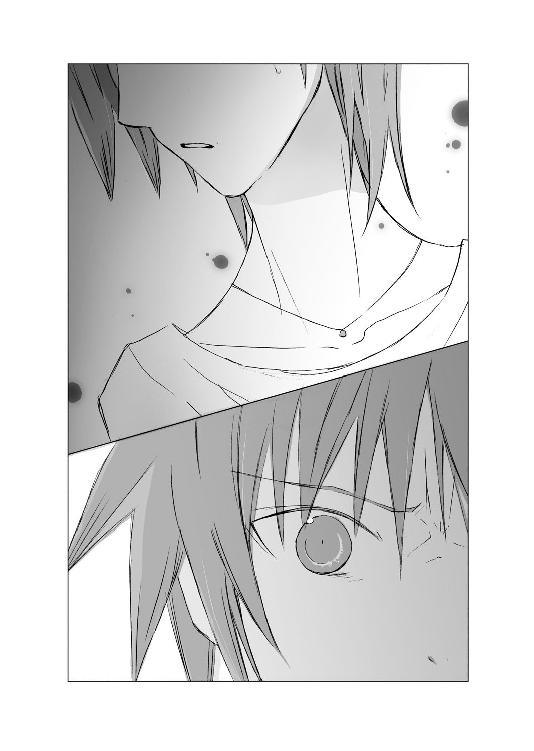
体中が燃え立つように熱くなって、目の裏まで真っ赤に染まったような気がして、内側から煮えたぎったものが込み上げてきて、是光はこぶしを握って立ち上がった。
ガタン！ と、後ろで椅子が倒れる。
葵と荻奈、母親が身をすくめ、ヒカルがぎゅっと眉根を寄せる。
「俺も......っ、知らねーよっ！」
吐き出された声は、手負いの獣の咆哮のようだった。
掠れ、割れ、裏返る、瀕死の叫び声。精一杯の矜恃。
九年前、自分を捨てて家を出ていった女性の顔に、恐怖が浮かぶのを見て、是光は心臓を抉られるような気持ちで、店を飛び出した。
葵とヒカルが、後ろでなにか叫んだようだが、聞こえない。
住宅地の曲がりくねった道を、方向も定めず、ただひたすら走る。
（俺だって、てめぇのことなんて、知るもんか！）
あんなやつ、母親じゃない！ あんなやつ、知らない！ 見たこともない、他人だ！
胸の中で叫び、吠え、それでも耳の奥に響く声が消えない。
――ごめんね、ごめんね、みっちゃん。
泣き続ける母親。
こぼれ落ちる涙。
――ごめんね。
（謝るな！ 謝ったって、なんも変わんねーだろ！ どうにもならねーだろ！）
「是光、危ない！ 前を見て！ 是光！」
横でヒカルが叫んでいる。
その声も、自分の唸り声と荒々しい息と、頭で響き続ける声にかき消される。
誰か、あいつの声を、止めてくれ。
聞きたくないんだ！
見たくないんだ！ ごめんねって謝りながら泣く顔なんて！
やめてくれ！ 泣かないでくれ！ なんで泣くんだ！ なんで謝るんだ！
心の奥に幾度も押し上げては、無理矢理押し戻していた記憶が、波が大きく盛り上がるように、鋭く突き上げ、赤い飛沫を上げて砕けてゆく。
首と胴体が離れた、小さなフェルトの熊。
小晴にしがみついて泣く母親。
断ち切れそうな声。
――小晴ちゃん、わたしはひどい母親なの。
襖の向こうで、体をこわばらせ息を殺して、聞いた言葉。
――あの子のこと、可愛いと思えないのっ！ どうやって愛したらいいのかわからないの！ 愛せないのっ！
砕けてゆく声。
砕けてゆく母親の顔。
砕けてゆく心。
――ごめんなさい、みっちゃん。
泣きながら謝っていたのは、自分の胎内から産まれた小さなものを、どうしても愛せないという罪悪感から。
母親として、子供を愛しく思えないなんて、そんなことあってはいけない。
けど、愛情がわいてこない。
可愛いと思えない。
――あの子もきっと気づいてる。だから、少しも笑わないのよ。わたしを責めているのよ。
母親がなにを言っているのか、よくわからなくて、ただ、可愛いと思えないという言葉と、少しも笑わない、というときの怯えたような声が胸に突き刺さり、耳たぶのあたりが熱くなった。
忘れなきゃ。
お母さんが、おれのこと、可愛いと思えないと言ったことなんか、聞かなかった。
もし――もしおれが、笑えたら、お母さんは、泣かずにすむんだろうか。
ごめんなさいって、謝ったりせず、楽しそうに笑ってくれるんだろうか。
もうすぐお母さんの誕生日だから、お母さんの好きな字を書こう。
そうして、笑って渡そう。おれは、お母さんが好きだって言おう。
外灯の明かりの向こうに、遠ざかってゆく小さな背中。
神様、お母さんが振り向いてくれますように。
おれを見てくれますように。
お願いです、神様。
けど、願いなんて、叶わなかった！
（あいつは、振り返らなかったし、誕生日のプレゼントは渡せなかったし、俺は、今も笑えねーっ！）
九年経っても、なにも変わらない。母親だった女は、怯えたように青ざめ、是光から目をそらし、知り合いなのかと尋ねる言葉に、か細い声で答えた。
――......いいえ。
赤ん坊のおなかに手のひらをあて、優しく微笑む空。
――母親って、ああいうもんなのかな。
――子供が生まれる前から、あんなに大事にしてんのかな。
俺も、あんな風に愛されていたときがあったのか？
わずかな望みが、高校生になった今でも捨てきれていなかった。
ほんの少しでもいい。母親に、あなたの誕生を楽しみにしていたときがあったのだと、あなたを愛していたときがあったのだと、言ってほしかった。
けど、再会してみてわかった。
（俺は、愛されてなかった！）
過去も、今も、あの泣き虫の母親の中に、是光に対する愛情はかけらもなく、あったのは、罪悪感と怯えだけだったのだと――。
――ごめんね。ごめんね。みっちゃん。
――あなたを愛せなくて、ごめんね。
母親は、特別情の薄い人でも、子供を虐待するような人でもなく、ごく普通の、おとなしくて、か弱い女性だった。だからこそ、我が子を愛せないという事実に苦しんで苦しんで、自分を責めるように頰をこわばらせて睨みつけてくる子供の顔つきにも、耐えかねて、あの夜、家を出ていったのだ。
蟬が乾いた茶色の脱け殻を残して、消え去るように。
どうやって家に帰り着くことができたのか、わからない。
ただいまとも言わずに部屋にこもり、頭から布団をかぶってしまった是光を、紫織子が心配して、
「ごはんだよ、是光お兄ちゃん」
と呼びにきたが、是光は布団から顔を出さず、「頭が痛ぇから、いらねぇ」と答えるのが、精一杯だった。
紫織子は、ならあたしが看病すると言い張り、是光の枕元からしばらく離れようとしなかったが、
「しーこ、ほっときな。そいつは頑丈だから、二、三日もすりゃ、治ってるさ」
と小晴に言われて、名残惜しそうに部屋から出ていった。
布団の中で、目をぎゅっと閉じているので、ヒカルの姿も見えない。
一度、
「是光」
と、心配そうに、そっと呼びかける声が聞こえたが、
「っっ、ヘタレさせろ......っ」
嗄れた声で唸ると、
「わかった......いいよ」
優しい声が返ってきて、そのあとは話しかけてこなかった。
朝になっても、肉を抉られるような痛みは続いていて、敷き布団は汗と涙で、えらくしめっぽかった。
普段の起床時間よりだいぶ遅い時間に、割れそうに痛む頭を起こすと、ヒカルが枕元に正座していて、やわらかな表情で、
「おはよう」
とだけ言った。
是光は、
「......」
口の中で、ぼそりとつぶやいて、部屋を出た。自分でもなんと言ったのか、聞こえなかった。
廊下に半紙が一枚置いてあり、若草色のサインペンで、
『是光お兄ちゃんへ
学校へ行ってきます。
帰ったら、お兄ちゃんが好きなおかずを、たくさんつくるよ。
しーこ』
と書いてあった。
それを見て、喉がぐっと鳴って、また胸が苦しくなった。
居間へゆくと、正風がむっとした顔で新聞を読んでおり、是光を横目でぎろりと見て、
「頭が痛いくらいで寝込むなんて、軟弱だ。しーこに心配をかけるな」
と言い、新聞を読み続けた。
小晴も、
「食わねーと思って、もう朝食は片付けちまったよ。腹が減ってたら、残ってるもん、自分で適当に食いな」
と、普段と変わらない粗雑な口調で言ったが、台所へ行ってみると、すぐに食べられるおにぎりや、漬け物が置いてあった。
遅刻しそうだったので、それをアルミホイルでくるみ、家を出る。
玄関にこるりがいて、瑠璃色の目でちらりと是光を見上げ、白い尻尾をしなやかに一振りしてみせる。クールなこるりにしてみれば、大サービスなのだろう。
学校へ向かう間も、ヒカルは是光の隣で口を閉じていた。是光と目が合うと、あたたかな笑みを浮かべるが、話しかけてはこない。きっと是光のほうから声をかけるまで、そうするつもりなのだろう。
家族や友人の気遣いに、胸がひりひりする。
泣きたいような、情けないような。けど、まだ浮上できずにいる。
（空のこと、探さなきゃいけねーのに）
おなかにヒカルの子供を宿したまま失踪した空は、今、どうしているのか。
空のことを考えようとすると、その上に母親の姿が重なって、『ごめんね』と謝る声や『いいえ』と細い声で答えたときの、怯えた表情や、そらした目を思い出して、焼けただれるような痛みがぶり返す。
（くそっ、畜生......っ）
ずっと心の一番奥底に押し込めていた記憶がよみがえり、母親に愛されていなかったことは、わかったはずなのに。
なにをいまだに、拘っているのか。あの泣き顔が、あの弱々しい声が、忘れられないのか。
（あんなやつ、母親じゃねー。俺には最初から母親なんていなかったんだ。もう、それでいいじゃねーか）
何度そう思おうとしても、声や顔が浮かんできて、授業の途中に教室に入り、注目を浴びて席に着いたあとも、ずっとこぶしを握りしめ、歯を食いしばり、うつむいていた。
（いつまで、この痛みが続くんだ。こうしている間に、空になんかあったら）
焦れば焦るほど、耳の中で響く声が大きくなってゆく。
――ごめんなさい。お姉ちゃんを許して。
――ごめんね、みっちゃん。
そのとき、隣で明るい声がした。
「赤城、これ、作ってきたんだけど、味見してみて」
いつのまにか、休み時間になっていたらしい。
顔を上げると、帆夏が可愛らしい赤紫の缶を差し出して、晴れやかに笑っていた。
いつも唇を尖らせて、携帯を睨んでいることが多い帆夏が、ここまで明るい顔で、是光に話しかけてくるのは珍しい。
声もはずむようで、
「カルシウム入りの豆乳クッキーなの。おなかの赤ちゃんにいいと思って。まだ試作品だけど、まず赤城が食べて感想聞かせて」
缶の中には、ハートの形のクッキーがつまっている。
「腹、いっぱいだし、いい」
顔をそむけると、
「もー、一枚くらい入るでしょ」
と、さらにぐっと缶を突きつけてくる。
「いいって」
昨日までは、是光を気遣うような視線を向けてくるだけで、黙って携帯をいじっていたのに、何故か今日は引かない。
「カルシウムって、イライラの解消にもいいんだから。赤城、こめかみひきつりまくってるし、顔怖いし、ストレスたまりまくりって感じ。だから、これ食べたら、すっきりするから」
帆夏が、親切でクッキーを勧めてくれているのは、わかる。
空のおなかの子のために、わざわざ作ってきてくれたことも。
けど、胸を刺す苛立ちがやまず、これ以上帆夏に不機嫌な顔を見せたくなくて、
「いらねぇって！」
クッキーの入った缶を押し戻したとたん、手が缶を叩き上げてしまい、帆夏の手から缶が落ちた。
茶色のハートが、床に散らばる。
缶が打ちつけられる音に、教室の視線が是光たちに集まる。みちるが目を丸くし、他のクラスメイトたちも、非難のこもる目で是光を見つめた。
「ひでぇな、ヤンキー」
「式部さんが作ってきたクッキーを、床に落とすなんて」
「最低」
ひそひそささやかれる声と、端が欠けたり真ん中から割れたりと、無惨な状態になったハートたち。なにより、茫然とした顔でそれを見おろす帆夏の姿に、是光は頭がさっと冷え、次の瞬間、体が熱くなった。
どうすればいい？ 式部に、なんて言えば。
「ご......」
謝ろうとした瞬間、うつむいて泣く母親の姿が、頭の中いっぱいに広がり、足元がぐらついた。
――ごめんね、みっちゃん。
「――っっっ」
（謝ったって、どうにもならねーっ！ 謝るな！ 謝るなよっ！）
クラスメイトたちの視線が、体を貫くように感じられ、どうせ最初から嫌われ者だったんだ。もうどうでもいいと、ヤケになりかけたとき。
帆夏が、ぼそりとつぶやいた。
「......せっかく、赤城に元気出してもらおうと思って、作ってきたのに」
その言葉に胸が鋭くしめつけられたとき。帆夏の右足が、空を切って跳ね上がった。
「女の子に、そういう態度ってないでしょう！ 赤城のバカぁぁぁっ！」
顎に、帆夏の蹴りが叩き込まれる。
首がもげるかと思うほどの衝撃に、頭の奥が白くかすむ。
体が大きくのけぞり、後ろに倒れ込んだときに、机や椅子を二、三個なぎ倒したらしく、背中に続けざまに痛みが走り、がしゃん！ ばしん！ と派手な音が響き渡り、是光は床に尻餅をついた。
「式部さん、こえー」
「ここまでするか」
「おっかねーよ、式部さん」
先ほどまで、是光を非難していたクラスメイトたちは蒼白になり、今度は帆夏へ怯える眼差しを向けた。
帆夏は、振り上げた足をおろして、床を踏みしめ、眉をつり上げて是光を睨んでいたが、その目がちょっと泣きそうに見えた。けど、すぐに顔をそむけて、掃除用具が置いてあるロッカーに、箒とちりとりをとりにいった。
◇ ◇ ◇
「式部さんは、わざと蹴ったんだよ。きみを悪者にしないために。自分の評判を下げてね」
昼休み。
屋上で手すりにもたれて、視線を遠くへ向けている是光に、同じように手すりにもたれたヒカルが言った。
ヒカルの細い手は、手すりにめりこんでいる。やわらかな薄茶色の髪が、光を浴びて金色に透きとおっていて、それが秋の気配を感じさせる涼しい風に、そよそよ揺れている。
「......っ」
是光は唇を嚙んだ。
帆夏に蹴られた首から顎にかけて、足跡が痣になって、くっきり残っている。今も熱を帯び、じくじく痛む。
（思いきり蹴りやがって......）
――式部さん、こえー。
クラスメイトたちに遠巻きにされても、強気に眉をつり上げて、落ちたクッキーを箒で掃き集めて、ゴミ箱へ捨てた帆夏。
そのあとも自分の席について、むっつりした顔で携帯をいじっていた。
――おっかねーよ、式部さん。
ささやく声が聞こえていないわけはないのに、ただ唇を結んで、携帯の画面だけを見ていた。
（どっちがバカだ。俺なんかのために、てめぇが悪者になりやがって）
是光の顎を蹴り上げたあと、一瞬だけ見せた弱気な瞳を思い出して、胸がズキリとしたとき。
後ろで声がした。
「聞きましたよ～。式部さんに蹴られたんですって～」
近江ひいなが、携帯電話のカメラを是光に向けて、少年のようにいたずらげな眼差しで立っていた。
◇ ◇ ◇
（赤城のこと、また蹴っちゃった......）
人気のない裏庭で、帆夏は花壇のヘリに腰かけて、一人でお弁当を食べていた。
教室にいると、興味本位な目で見られて、あれこれ勝手なことを言われて、それは別に平気だったのだけど、隣のぽっかり空いた席を見ていると、是光を思い出して泣いてしまいそうだったから。
みちるにも、
「用があるから」
と言って、教室を出た。
みちるも、帆夏が是光にあんなことをして、戸惑っているようだった。帆夏と視線をあわせず、「う、うん、わかったよ」と離れていった。
（クッキー、無駄になっちゃったな）
昨日の放課後、是光と葵が校門の外で待ち合わせてどこかへ行くのを、胸が潰れそうな気持ちで見送った。
（あたしはもう、赤城のヘリオトロープじゃなくなっちゃったのかな）
家に帰ってからも、回転椅子の上に膝を抱えて座り、うじうじ悩んでいるのが嫌で、クッキーを焼きはじめたのだった。
（赤城が、あたしじゃない女の子を好きなのは、前からだもの。あたしは、あたしにできることをしよう）
最近、産まれてくる子供のことで悩んでいるみたいだったから、これを食べて少しは元気になってくれたらいい。
けど翌日、授業の最中に登校してきた是光は、これまでにないほど暗く、ぴりぴりした空気をまとっていた。
頰が硬く引きつっていて、苦しそうな目をしていて、歯を食いしばっていて、あんまり怖い顔をしていたから、教師が遅刻したことを咎められなかったほどだ。
（昨日、なにかあったの？）
どうしても放っておけなくて、無理矢理笑顔を作って、クッキーを口実に話しかけたのだ。
（なのに、あたしがクッキーを落っことしたりしたから、赤城が悪いみたいになっちゃって......。全然赤城の役に立ってない）
甘いはずの卵焼きが、苦く感じる。
「ヘリオトロープ、失格だよ......」
暗い声でつぶやいたとき。
「あ、あのっ」
声をかけてきた相手を見て、帆夏は卵焼きを喉につまらせそうになった。
（葵の上！）
長い黒髪に、清楚な白いリボンを結んだ可憐な上級生が、両手を膝の上でもじもじと組み合わせ、頰を赤らめている。
「ご、ご一緒しても、よいですか」
「えっ、あ、どうぞ」
ひっくり返った声で言い、お尻をずらしてスペースを作ると、葵は蚊の鳴くような声で、「すみません......」と言って、そこに座った。
「葵の上、お昼ごはんは？」
手になにも持っていないのを見て、尋ねると、
「あ、教室に忘れてきてしまいました」
と、恥ずかしそうに言った。
「とりにいってきてください」
「いえ。いいんです」
「でも、おなかすいちゃいますから」
「大丈夫ですから、お気になさらないでください」
「それじゃあの、せめてジュースでも。そこに自販機ありますから。あたしがひとっ走り行って、買ってきて」
「いいえ、それなら、わたしが」
そんなぎくしゃくしたやりとりがあった五分後、二人ともそれぞれ缶入りの飲みものを手にして、同じ場所に座っていた。
帆夏の手には、甘ったるい蜂蜜入りのミルク・オ・レが。葵の手には、苦い無糖コーヒーが。苦手なそれを、なめるようにちびちび飲みながら、葵の話を聞く。
「赤城くん、昨日すごく様子がヘンだったんです」
是光と二人で、ある人に会うために、その人が働いている喫茶店へ行ったこと。
そこに、四十くらいの小柄な女性が現れたこと。
ごく普通の主婦といった感じのその女性を見て、是光がひどく動揺していたこと。相手の女性も同じくらい驚いていたこと。
けれど、彼女が是光のことを『知らない』と言ったとたん、是光が『俺も知らねーよ！』と叫んで、店から走って出て行ってしまったこと。
「わたし、赤城くんの携帯にお電話もしたし、メールもしたのですけれど、お返事がなくて。こんなことはじめてで、心配で......。そうしたら、式部さんが赤城くんのこと、蹴り倒したとうかがって......」
それで帆夏を捜していたらしい。
「四十歳くらいの女の人って......！ それ、赤城のお母さんと同年齢くらいだよね。もしかして、その人、赤城のお母さんだったんじゃ」
是光の母親は、是光が小学一年生のとき、是光の担任教師と駆け落ちしたのだと、夏休みに是光の家へ行ったとき、厳めしい顔のおじいさんが話していた。
（赤城がそんなに動揺するなんて、それくらいしか思いつかないよ）
葵にその話をすると、さっと顔をこわばらせた。それから哀しそうな目になり、
「......そんなに小さいときに、お母様が、おうちを出ていかれたなんて......」
と、ささやいた。
「もし、昨日会ったあのかたが、赤城くんのお母様だとしたら、赤城くんが、可哀相です」
そう言って、両手で無糖コーヒーの缶をぎゅっと握って、うつむいてしまった。
――知らないって、おっしゃったんです。赤城くんのこと。
日陰に吹く冷たい風が、淋しく庭の木の葉を揺らす。
帆夏もまた、胸がしめつけられて、黙ってしまった。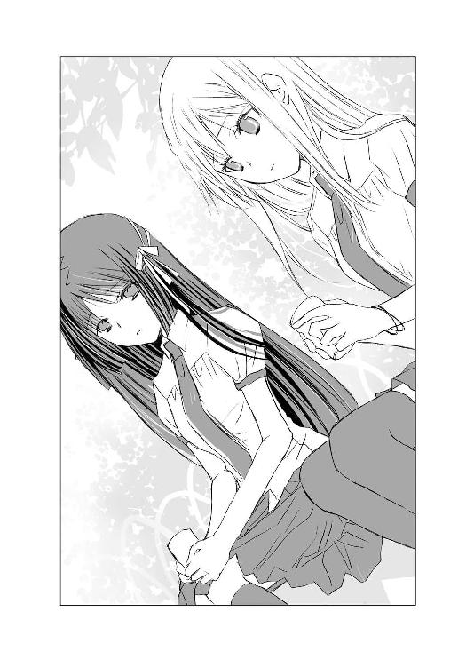
こういうとき、好きな相手になにをしてあげられるのか、恋愛の達人と呼ばれていても、わからなかった。
◇ ◇ ◇
是光の顎の痣を、ぱちりと撮影し、ひいなは腰をかがめてにっこりした。
豊かな胸が揺れ、二つまでボタンをはずしたブラウスの合わせ目から、深い谷間がのぞく。
「ああ、ホント痛そうですね～。これはしばらく痕が残りますよ。ヤンキーキングにあらたな伝説が加わりますね。けど、式部さんはきっとわざと」
「......わかってる」
ぼそりとつぶやくと、ひいなはちょっと目を見張り、すぐに、
「そうですか」
と、明るく微笑んだ。
それから、そのまま普通の口調で、
「あの女子大生のかた、行方不明のようですね」
いきなり空の話をふられて、ドキッとする是光に、いつもの早口ではなく、ゆっくりと続ける。
「おなかの中の子は、ヒカルの君の子、ですね」
「......」
是光は、むっつりした顔で黙っていた。
ヒカルが隣で、少しだけ警戒するような表情で、ひいなを見つめている。
「もしかしたら、彼女は帝門の子として育てたくなかったのかもしれませんね。そのほうが、子供にとって幸せだと思ったのかも......。もし失踪の理由が、そんな風に子供への愛情からだったなら、自分はいいと思います」
ひいなの口調はずいぶん真面目で、是光へ向けられる瞳は聡明だった。この前から時おりひいなは、こんな表情を見せ、是光を戸惑わせる。
「世の中には、わざわざ遠くまでいって、公衆トイレで子供を産み捨てるような母親もいますから」
驚いて、息をのむ。
ヒカルも目を見張っている。
「仕方ないです」
ひいなが落ち着いた声で言い、少し淋しげに微笑む。
「すべての母親が、子供を愛しているわけじゃありませんから」
自分の母親のことを思い出し、胸の奥が軋んだ。
――可愛いとは、思えないの。
「その赤ん坊、生命力が強かったんでしょうねー。わんわん泣いたせいで、人が集まってきて、母親もすぐ見つかっちゃったんですけど、子供なんかいらないって言われて、孤児院に引き取られたんですよー。小さい町だったから、あれがトイレで産み捨てられた子だって有名人で、あだ名はずっと公衆便所でした。あのままあそこにいたら、本当に公衆便所になってたかも......」
まさか、その赤ん坊って......。
（近江のことなのか......？）
是光も、ヒカルも、言葉を挟むことができず、ひいなの声にじっと耳を凝らしている。
真摯な表情で語っていたひいなの頰が、そのとき、とろけた。
頰だけでなく、目も、口元も、幸せそうにゆるんでゆく。
「けど、お兄さんが、会いにきてくれたんです。とっても立派な人。自分にそんな家族がいたなんて、夢みたいで。この人のためなら、なんでもできるって思いました。家族だって名乗りあえなくてもいいから、近くにいたいって」
晴れやかな明るい声。
どれだけ兄が好きか、その声で、その表情でわかる。
「そんな家族がうちにもいるって思うだけで、もう息が止まりそうなほど幸福なんよ」
語尾が変わり、西のほうの方言になったことに、ひいなは気づいているのだろうか。
ゆっくりとした、やわらかな、聡明な語り口調。
これが、本来のひいなの話しかたなのだろうか。
幾度も驚きながら聴き入る是光に向かって、ひいながとろけきった顔で言い放つ。
「愛されることと、愛することと、どっちかひとつしか選べないんなら、うちは、迷わず愛するほうを選ぶわ。そっちのほうが、うんと幸せやもの！」
その言葉と満ち足りた笑顔は、是光の胸を強く打った。
降り注ぐ日射しが、ひいなの少年めいた童顔を、きらきらと彩る。
その顔を、是光も、そしてヒカルも――とてもまぶしそうに、羨ましそうに、見ていた。
◇ ◇ ◇
今の話、内緒ですよ――と、ひいなは、去り際いたずらげな顔で言った。
赤城氏だから、話したんですよ。
自分、赤城氏のこと、お気に入りですから。
今なら、この言葉、信じてもらえます？
ああ、返事はいいです。ただ自分が、赤城氏に期待してるってことを、覚えておいてください。
少年のような瞳で、そう微笑んで。
授業が終わったあと、ヒカルと二人で土手道を歩いた。
どちらも黙っている。
「......」
「......」
きっとヒカルも、ひいなが西の方の言葉でゆったりと語った言葉を、思い返しているのだろう。
昨日と今日は、是光にとって最低の日だった。
母親に再会して、思い出したくなかった真実を突きつけられて。何故、自分の願いはいつも聞き届けられないのだろうと、息ができないほど悩み苦しんでいた。
そのせいで、周囲の好意を素直に受け取ることができなくて、家族にも心配をかけたし、帆夏も傷つけてしまった。
昼休みのあとも、帆夏は自分の席で、唇を勝ち気に尖らせ眉をつり上げて、一人で携帯をいじっていた。
なにかに負けまいとするように、画面をじっと睨みつけて、是光のほうを見ようとしなかった。
是光は帆夏に謝りたかったが、まだなんと言っていいのか、わからなかった。
（明日は......式部に、ちゃんと謝ろう）
この世で自分一人だけが、不幸だなんてことはないのだ。
きっと、みんなそれぞれの痛みや苦しみを抱えて、進んでいる。
「ねぇ、是光。笑う練習をしてみよう」
ヒカルが唐突に言った。
まるで、これからゲームセンターへ行こうよ、というような明るい顔つきで。
「ぼくは泣く練習をするから」
ね、と是光に目くばせし、河原を駆けおりてゆく。
「是光もおいでよ！」
是光から離れられる、ぎりぎりいっぱいまで走って振り返り、あざやかな陽射しの中、両手を広げて呼びかける。
（笑う練習か......）
それも、いいかもしれない。
できないことを、一生懸命にやってみるのも。
たとえバカみたいでも。
「よし、やってやるか」
是光も、草の上をすべるように駆け下りる。
ヒカルが笑顔で迎える。
「おまえ、にこにこしてんじゃねーよ。気合い入れて、しっかり泣いてみせろよ」
「是光こそ」
「おう、笑ってやるぜ」
「じゃあ、ぼくは泣こう」
「はははは」
是光がこわばった顔で、笑い声らしきものを口にすれば、ヒカルも、
「うっうっ」
と顔を必死にゆがめて、悲痛な声を絞り出す。
是光の眉は鋭角的につり上がっていたし、目は血走っていたし、口元もこわばっていて、うまく持ち上げることはできなかった。
ヒカルも同様で、何度目をぱちぱちしばたかせても、息を止めて喉とこめかみに力を入れても、涙は一滴も落ちない。
それでも、
「わはは、ははははは」
「うぅぅ、うっうっ」
と、笑う練習を――泣く練習を――続ける。
「はははは、うわははは、ヒカル、おまえ、梅干し食ったみたいな酸っぱい顔してるぜ」
「ぅうぅ、是光こそ、ぐすっ、口をそんなに大きく開けて、目をカッと見開いたら、閻魔大王みたいだよ」
「あははは、目元をこう、にこっとゆるめるってのは、難しいなー」
「ぐす、ひっく、なんか、ひっく、しゃっくりが出てきちゃったよ。泣くのって、難しいね」
「わははははっ！ 毎日、口の端を上げる訓練をしてりゃー、こわばりもとれて、やわらかくなるかもな」
「ひっく、ぅうぅ、目に唐辛子をふりかけたら、涙が出るかなー。けど、ぼく、キャンプでタマネギ刻んだときも、泣けなかったんだっけ、ぐすっ」
「あははっ、あははははは、なんか、ほっぺが痙攣してきたぜ。わはは、口からよだれも垂れてきやがった」
「ぐすっ、ずずずっ、ぼくも、洟をすすりすぎて、鼻水が出そう。女の子に笑われちゃうよ」
「くくくく、鼻水皇子、いいじゃねーか、くくくっ」
「ずずっ、そしたらきみのことも、よだれヤンキーって呼んじゃうよ」
世界が白く透きとおってゆく、夕暮れ前の――不思議な時間。
秋のはじまりを感じさせる、少し冷たい風に吹かれながら、ざわめく草の上にしゃがみ込んで、顔をつきあわせて、鼻の頭に皺を寄せたり、頰を引っ張り上げたり、口を尖らせてみたり、百面相を続ける。
はたから見たら、いかれてるとしか思えない。
（けど、いいじゃねぇか）
こんな風に、友達とバカやるのも、いいじゃねぇか。
笑えない是光と、泣けないヒカル。
そんな二人が出会って、友情を結んで、一緒に笑おうとして、一緒に泣こうとして、うまくいかなくて、愚痴ったり励まし合ったりしながら。
一緒に、前へ進んでゆく。
自分はもう永遠に〝変われない〟と言っていたヒカルが、変わろうとしている。一生笑えないと思っていた是光も、頰を引っ張ったり、目玉をぎょろりと突き出したりして、笑おうとしている。
青臭い草の香りを嗅ぎながら、金色に染まってゆく空気に抱きしめられながら、是光たちは練習を続けた。
しまいには、二人して草むらに大の字にひっくりかえり、空を見上げた。
雲の端が、ぼんやりと光っている。淡い紅の布を一枚ふわりとかぶせたような薄紅色の空が、美しい。
「はは......頰と顎が痛ぇ。笑うって、やっぱ滅茶苦茶難しいぜ」
「ぐすっ......泣くのも、すっっっごく難しいよ」
「けど、笑ってみてぇな」
「ぼくも、泣いてみたいよ」
いつか、心から笑えるといい。
大事な人に、笑いかけられたらいい。
そしてヒカルも、涙を流すことができればいい。
暮れてゆく空に、是光は願った。
（きっと、叶わねー願いじゃねぇ）
いつか、絶対に叶うはずだ。
「綺麗だね......夕日を浴びて、河原がピンク色に染まっているよ」
ヒカルがうっとりと目を細める。
是光も心地よい気持ちで、草の敷布に身をあずけた。
「ああ、そうだな」
「まるで......河原全体が紅葉したみたいで」
突然、ヒカルが身を起こした。
「どうした？」
是光もつられて起きあがると、興奮している顔で、叫んだ。
「是光、空の居場所がわかるかも！ 朝ちゃんに電話して」
「なんだって！ よし」
ズボンのポケットから携帯電話を引き出し、もどかしく朝衣の番号を呼び出し、是光もまた叫んだ。
「朝ちゃん、出番だぞ！」昔から、物事を後ろ向きに考える癖があった。
いつも、一番悪い想像をする。
テストで百点がとれると期待して、八十点しかとれなかったらがっかりするけれど、六十点しかとれないとあきらめていて、八十点だったら嬉しいから。
クラスに気になる男の子がいて、その子とよく目が合ったとしても、もしかしたら自分は好かれているのではないかなどと、思ってはいけない。
それはただの偶然で、向こうは自分のことなど気にも留めていないと考えるほうが、その子が学年で一番美人で華やかな女の子とつきあっているとわかったときに、惨めな思いをせずにすむ。
いつも悪いほうへ、悪いほうへ考える。
そうすれば、実際に悪いことが起きたとき、心配したよりはマシだったと思える。
そうやって人生に期待しないことで、空は自分を守ってきた。
約束は叶わないから、しない。
夢はさめるものだから見ない。
けど、そんな自分は、蟬の脱け殻のように空っぽな人間で、名前の『空』は、本当は空っぽのカラなのだと思っていた。かさかさした茶色の、脆くて空っぽな器。常識的すぎて、つまらない。それが自分だ。
――蟬ケ谷さんも、秋祭りの坂上先輩のライブ、誘ってみる？ 女の子がたくさんいるほうが、盛り上がるでしょう。
――えー、やめておこう。あの人真面目だから、そういうの、浮ついた集まりって軽蔑してそう。
――おじいさんが牧師で、お休みの日に教会でボランティアしてるんだってー。あたしたちとお祭りに行くより、神様にお祈りしてたほうが、楽しいんじゃない。
――あー、わかる。蟬ケ谷さんって、神様とケッコンしてるって感じ。
空が、学校が終わるとまっすぐ家に帰るのは、亡くなった母親の代わりに年の離れた弟の面倒を見なければならなかったからだが、いつからか、蟬ケ谷さんは、おカタい人――というレッテルを貼られて、中学生活も半ばを過ぎる頃には、誰も空を遊びに行こうと誘わなくなった。
父が再婚したのは、空が高校一年生のときだ。
相手の女性にも連れ子がいて、空よりひとつ下の女の子だった。
やせっぽちで、かさかさした空と正反対の、丸顔のぽっちゃりした女の子で、唇も肌も健康的でつやつやしていた。性格も人なつこく陽気で前向きで、
『宝くじで三億円当たったらなにに使おう』
『高校生になったら、マジ制服が可愛いお店でバイトするんだー。それで、職場恋愛するんだー』
『隣の席のイケメンの内藤くんが、消しゴム貸してくれたの。あたしのこと、好きなのかなー。マジやばくない？』
と、浮かれて話すのだった。
お姉ちゃん、お姉ちゃん、と慕ってくれて、
『お姉ちゃんだって、髪型いじってお化粧したら、美人になるのに、もったいない。なんで自分で髪切ってるの。色白いから、明るい色も似合うのに。そんな雨の日の空の色みたいな、カーディガン着て。あー、せっかく女子に生まれたのに、そのことを楽しまないなんて、マジ、もったいない』
と、おおげさな身振りで嘆いたり、
『ねぇねぇ、古典の富沢センセーって、お姉ちゃんに気があるよねー』
と、ささやいたのも、妹だった。
空が高校二年生、妹は高校一年生で、
『お姉ちゃんのこと、あんな真面目で芯のしっかりした古風な女子高生が、現代の日本にいたんだなぁなんて、感動して言ってたし。お姉ちゃんが、教会でボランティアしてるって話したら、ますますツボに入ったみたいで、さすがだなー蟬ケ谷はって溜息ついてたよ。それで、あたしが、教師が生徒に手を出したら教育委員会に訴えられるよってからかったら、真っ赤になって、そんなんじゃないって、おたおたしちゃってさ。ねぇ、富沢センセーって、可愛いよね。顔もカッコいいほうだし、歳だってまだ二十四歳だし、結構女子人気高いんだよ』
と、楽しそうに言った。
『富沢センセー、産休した森川センセーの代わりに、お姉ちゃんの部活の顧問になったんだって。うわー、お姉ちゃん目当てなの、バレバレー』
空たちが通う高校は、生徒は必ずどこかの部に所属しなければならない決まりがある。
空は、週に一度しか活動のない読書部に所属していた。
なので顧問といっても特に密接な接触があるわけではなかったし、妹の言葉自体も信じられなかった。
『富沢センセー、今日二日酔いだって。お酒弱いのに、悪友に飲まされちゃったんだってさ。保健室で薬もらってたよ。お姉ちゃんが白衣の天使になって看病してあげたら、マジ喜んじゃうよ』
目をきらきらさせて、そんな風に耳打ちされるたびに、
『バカなことを言わないで』
と、そっけなくあしらった。
教師と生徒でだなんて不道徳だし、富沢先生がわたしを好きというのも、妹の勝手な思い込みだ。女子に人気がある、あんな大人の男の人が、空のようにかさついた地味な高校生を、好きになるわけがない。
妹は、なにか誤解しているのだ。
いや、高校生にもなって、まったく男っ気のない、初恋すらしたことのない姉をからかっているのかもしれない。
その頃にはもう、空は将来は神職に就き、神様の花嫁になるのだと当然のように周りから思われており、空も、女性としての魅力も、なにか突出した才能もない自分にできることは、それくらいしかないと、あきらめの心境でいた。
ヒカルにはじめて出会ったのは、妹が富沢先生と不適切な行為をしていたことが学校にバレて大スキャンダルになり、空の父親と妹の母親がそのことが原因で、離婚した直後だった。
同じ頃父の転勤が決まり、空と弟は、祖父が牧師を務める教会で暮らすことになった。
季節は夏の盛りで、蒸し暑く寝苦しい夜だった。
胸にわだかまることがあり、なかなか寝付くことができず、ようやく疲れて睡魔が訪れたものの、すぐにまた目がさめてしまう。
がりがりの体が汗ばんでいて、窓を開けても、入ってくるのはもわっとした熱い空気ばかりで。眠れないならいっそ聖書でも読んで過ごそうと思ったら、手元になかった。
昼間、礼拝堂でお祈りをしたとき、置き忘れてきてしまったらしいと気づき、取りに行くことにした。
すとんとしたワンピース状の寝間着の上に、妹が雨の日の空の色みたいだと言った、くすんだグレイのカーディガンを羽織る。
建物の外も、蒸し風呂のように暑く、奔放に生い茂る夏の草木の香りがした。
淡い月の光に照らされた中庭は、昼間よりもどこか淫靡な印象で、そこかしこに、なにかよくないものがひそんでいるようで、妖しく光る目で、じっと見つめられているような気がした。
かさかさと鳴る芝を踏みながら、礼拝堂に辿り着く。すべての迷えるものに、門を開くという教えから、礼拝堂のドアに鍵はかかっていない。古めかしい重い扉を開けると、ぎーっと、軋んだ音がした。
祭壇の前に置いてあった聖書を手に取り、部屋に戻ろうとしたとき、いくつも並べられた長椅子の間で、カタン......とひそかな音がした。
「誰かいるの？」
異形のものなら、怖くはない。神様が守ってくれる。
けど、血の通った人間の強盗やホームレスだったら。
汗ばんでいた体から、熱がすっと引くような気持ちで問いかけると、長椅子の間から、ほっそりした姿が立ち上がった。
（天使......？）
窓から射し込む透明な月の光が、華奢な白い体と乱れたやわらかそうな髪を、淡い銀色に輝かせ、その清らかで美しい容貌を、暗い礼拝堂の中に浮かび上がらせていた。
哀願するように空を見つめ返す大きな瞳も、光を吸い込んで澄んでおり、花びらのような唇は、かすかに震えていた。
「勝手に入って、ごめんなさい」
少年とも少女ともつかない、不思議な響きのあるふくよかに澄んだ声が、静まり返った礼拝堂の中を流れてゆく。
その声を、空は、天からの声に耳をすますような敬虔な心地で聞いていた。
「どこにも行くところがなくて......」
天使じゃない。
人間の男の子だ。
ううん、やっぱり天使？ だって、こんなに綺麗な子、見たことがない！
けど、人間の男の子だとしたら、家出？ だとしたら、見過ごしにするわけにはいかない。
「おじいさん――牧師様を、呼んでくるわ」
そう言って、背中を向けたとき。
「お願い、いかないでっ！」
男の子が空に駆け寄ってきて、華奢な腕を空の瘦せた体に回し、背中越しにぎゅっと抱きついた。
甘い花の香りが一緒に空を包み込み、空を混乱させた。
「お願い、ここにいて。ぼく、家に帰れなくて......。もう、あの人のそばにはいられなくて......どうしていいのか、わからないんだ」
空にすがりつく華奢な手は震え、空の首筋に必死に押しつけられた小さな顔は、ひどく冷たかった。
事情はわからないけれど、この子は、とても傷ついているんだわ。
同じように傷を負っていた空の胸に込み上げたのは、彼を守ってあげたい、助けてあげたいという、強い思いだった。
多分、夏の夜のねっとりした暑さと、少年の、人とは思えないほど澄みきった美しさに、冷静な判断を奪われてしまったのだろう。
「あなたは、今......苦しいの？」
少年に向かって、自分でも驚くほど静かに問いかけた。
「苦しい、よ。心臓を、槍でずっと突かれているみたいだ」
「それに、哀しんでいる？」
「哀しくて、哀しくて、このまま消えてしまいたいよ」
少年の腕は、細く、儚く、雪のように白く、本当に月光の中に溶けてしまいそうで、空は少年のほうへ体を向け、自分から少年を抱き寄せたのだった。
少年も、母親を見つけた迷い子のように、夢中で空にしがみついてきた。
好きで好きでたまらない人に、愛してもらえないのだと、少年は哀しそうな声で訴えた。
子供の頃からずっと大好きで、その人さえいれば、なにもいらなかったのだと。
その人が、世界のすべてだったのだと。
けれど、もう一緒にいたらいけないのだと。
こんな風に抱きしめることも、抱きしめてもらうこともできないのだと。
空は少年を、ただただ抱きしめた。
少年が求める最愛の女性の代わりに。
少年の求めに応じることのできないその人の代わりに、ひそやかな月明かりの中、空が与えることができるすべてを、少年に与えた。
少年が求めてきたとき、神様が見ている前で、こんなことをしてはいけない、こんなことは間違っている。神様への背徳だ。神様の花嫁としての不貞行為だ、あってはならないことだ、という罪悪感にさいなまれ続けた。
ダメっ、受け入れては、ダメ！
流されてはダメ。
こんなことはダメ。
わたしは、神様の妻なのに。
それにこの子は、わたしを、他の女の人の代わりにしているだけだ。
一番大好きなその人に受け入れてもらえなかったから、たまたまこの場に居合わせたわたしに、救いを求めているだけなのに。
いけない、このまま罪を犯したら、きっとこの先、悪いことが起こる。
わたしは、神様と向き合うことができなくなる。神様の妻でいられなくなる。
心は拒否しているのに、少年を抱きしめる腕も、少年の冷たい足に絡みつく足も、少年のやわらかな頰にあてられた唇も、少年のすべてを赦し、受け入れていた。
――空は、帚木みたいだ......。
耳元でささやかれた、熱っぽく掠れた声を、痺れるような甘い痛みとともに聞いていた。
けど――。
少年が空の瘦せた膝に頭を載せて、眠りに落ちたあと。
きらきら光る月の粒子に包まれた、その細くなめらかな裸体や小さな顔にはめこまれた、長いまつげやまぶたや、通った鼻筋や、花びらのような唇が、あまりに無垢で美しいことに、戦慄した。
自分では、とてもつりあわない！
もうじき月の代わりに、まばゆい朝の光が射し込めば、かさついた貧相な姿を、この美しい天使の前に、さらすことになる。
それはあまりに畏れ多く、羞恥に、全身が燃えるように熱くなった。
わたしは、蟬の脱け殻みたいな空っぽのカラなのに、天使にふさわしい女じゃないのに――。
少年のまぶたが持ち上がり、その目に自分の姿が映ることに恐怖すら覚えて、染みひとつない真っ白な体の上に、くすんだ雨空色のカーディガンをかけて、礼拝堂から逃げ去った。
そのあと、少年が何度訪ねてきても、会わなかった。
学校が終わる時刻になると、少年は教会へやってきて、庭で空の弟と遊びながら空を待っていた。
空の姿を捜すように、ときおり礼拝堂のほうを見る。そのたび空の胸は高鳴った。
けど、会えなかった。
建物のかげに身をひそめたまま、そこからたった一歩が踏み出せなかった。
こんなつまらない、かさついた、空っぽの蟬の脱け殻みたいな自分では、あの天使をがっかりさせてしまうだけだから。
蟬の鳴き声が聞こえなくなり、風が冷たくなり、木々が赤く色づきはじめる頃には、少年が教会を訪れることもなくなった。
木の下に落ちた茶色い蟬の脱け殻を見おろしながら、これでよかったのだと思った。
もう、自分たちが会うことはないだろう。
あの夜のことは忘れて、貞淑な神の妻に戻ろう。それが自分に合った生きかたなのだから。
けれど、再会は、数年後の冬に訪れた。
空は大学生になっていた。
祖父は亡くなり、空ももう教会には住んでいなかったけれど、ボランティアは続けていて、雪が激しく降っていたその夜も、たまたま礼拝堂にいた。
そうしたら、ドアが開いて、渦巻く冷たい雪の礫とともに、あの天使が――ヒカルが入ってきた。
教会の建物のかげや窓から、こっそり盗み見ていたヒカルは、木漏れ日の中、明るく輝いていたのに、目の前に立ちつくすヒカルは今にも死んでしまいそうで、手足も体も冷たく凍えきっていて、空は抱きしめずにいられなかった。
一度目は、逃げた。
けど、二度目は――逃げられないかもしれない。
ヒカルを愛してしまうかもしれない。
それは、心臓が震えるほどの恐怖だった。
窓に降りつもる雪明かりに照らされた、ヒカルの顔や手足は、雪よりもさらに白く、痛々しいまでに美しく清らかで、中学生のヒカルから見たら、大学生の自分なんて、おばさんだろうし、容色が特に優れているわけでも、豊かな才能があるわけでもない、こんなつまらない自分では、やっぱりつりあいがとれず、一緒にいても惨めになるだけだと確信できたから。
あのときと同じように、今はヒカルは、空の上に別の女を重ねて、空を求めているけれど、夜が明ければ、もっと美しい花々のもとへ戻ってゆくだろう。
よりあざやかな、幻を追いかけて。
そうして、脱け殻の空は飛び立つこともできず、地面に落ちたまま、彼の背中を惨めに見送るのだ。
それよりも、自分が先に背中を向けたほうがよくはないか――。
「もう、そんな葛藤は、しなくてもいいんだわ」
夕暮れには、まだ少し早い時刻。
箒のように丸い束になったライムグリーンの茂みが、放牧中の羊の群れのように一面に生える丘に立ちながら、ヒカルとのこれまでのことを思い返していた空は、つぶやいた。
おなかにそっと両手をあてる。
そうすると手のひらとおなかが、じんわりとあたたかくなり、安らかな気持ちになる。
「ヒカルは亡くなったんですもの。もう、わたしに背中を向けない。わたしにがっかりしたり、わたしに飽きたりしない」
空のおなかの中には、今、空だけのヒカルが――決して空に背を向けないヒカルが、空から去ることのないヒカルがいる。
「早く、生まれてきて」
優しく語りかけるように、ささやく。
やわらかな細い枝が群れ集まってできたライムグリーンの丸い茂みは、箒木というのだと、ヒカルが教えてくれた。
――空は帚木みたいだ。
出会った夏の夜。
滴る汗が混じりあう中、耳元で聞こえた熱っぽく掠れた声。
実物の帚木を見たら、花というより、ただのもさもさした緑の茂みにしか見えず、がっかりした。
再会したとき、ヒカルが空を抱きしめる腕に、ぎゅっと力を込めながら、
――空が帚木のままで安心した。
なんて言うから、
「帚木を見たけど、ふさふさした大きなマリモみたいで、全然綺麗な花じゃなかったわ」
と少しだけ恨みがましくつぶやいたら、
「それは、帚木じゃなくて、きっと箒木だよ」
と答えた。
「箒木も、しなやかな細い茎が、ふさふさした丸い茂みを形づくる様子が箒みたいで、素敵な花だけど」
「そうかしら、花びらもついていないなんて、花じゃないみたい」
すると、ヒカルは夢中で身を乗り出してきて、
「そんなことないよ。箒木はとっても綺麗だし、紅葉したらもっと素敵で、珊瑚の群れみたいだよ――伝説の帚木もこんなだったんじゃないかって思えるくらい。今度一緒に見に行こう！」
と、子供みたいに、きらきらした無邪気な顔で言っていた。
緑の箒木は、あらためて眺めても、やっぱり地味であまり綺麗じゃない。花とは呼べない花だ。
ヒカルは空を、伝説の帚木のようだと褒めてくれたけど、きっと実際の自分は、この箒木なのだ。
地味で、つまらない花......。
（それでも、秋まではここにいよう）
ヒカルと約束したから。
おなかに手をあてたまま、空は満ち足りて微笑む。
「あなたが生まれてきたら、毎日愛しているって言うわ」
ふっと、またヒカルの声が、聞こえた。
――帚木は、近づくと消えてしまうんだよ。
遠くからだと、箒を立てたように見えるけれど、近づくとそこにはなにもない。辿り着けない。
本当に欲しいものは、近づきすぎると見えなくなってしまう。手にふれることなく、消えてしまう――。
赤い血が滴り落ちるイメージが浮かび、視界が一瞬、赤く染まったように感じられて、ふいに不安に襲われた。
おなかを、ぎゅっとかき抱く。
大丈夫、この幸せは消えないっ。
箒木の丘の後ろにそびえる時計台から、きらきら星のメロディが流れてくる。
この曲の原題は、『お母さんに申しましょう』というのだったわね。
恋をした娘が、母親に生き生きと頰を紅潮させ、言うのだ。
――ああ、お母さん、聞いて！
もし、お母さんが生きていたら、わたしは打ち明け話をしたのかしら。
命をわけあたえてくれたその人にだけは、苦しい胸の内を打ち明けたのかしら。
生まれてくるこの子も、いつか恋をしたとき、『お母さん、聞いて』と無邪気に打ち明けてくれるのだろうか。
風がまた少し冷たくなった。
小さな光がまたたきあうような、軽やかで愛らしいメロディを、そっと口ずさんだとき。
ざわざわと揺れるライムグリーンの箒木の群れの中を、赤い髪の少年が歩いてくるのが見えた。
肩を少し丸めて、前屈みになって。
頰を固くこわばらせ、強い光を放つ目で空を見据えながら、ゆっくりと近づいてくる。
あの少年は、ヒカルの友達の――......。
「赤城......くん？」
震える空の前で、是光の足が止まる。低い声でつぶやいた。
泣き黒子が印象的な目を、茫然と見開く空の前で、是光はひっそりと歩みを止めた。
「どうして、わたしの居場所が......わかったの？」
空が戸惑っている口調で尋ねる。
冷たい風が、ライムグリーンのか細い枝を揺らす。その風に、やわらかな髪をそよがせながら、ヒカルが静かな眼差しで答えた。
「電話で言ってたでしょう。早く来すぎたって。せめて秋まではいなくちゃって......。なんで秋までなのかなって思った。子供が産まれるのは冬なのに」
是光も、空を険しい顔で見据えたまま、口を開く。
「言ってたろう。秋まではここにいるって」
「それで思い出したんだ。一緒に、紅葉した箒木を見に行こうって誘ったこと。きみは約束はできないと答えた。けど、きみは、あのときのことを覚えていてくれたんだね」
「ヒカルは空のことを、伝説の帚木みたいだって言ってた。けど、空が帚木と同じ名前の箒木を見て、こんなの花じゃないってがっかりしてたんで、紅葉した綺麗な箒木を見に行こうって言ったんだってな」
空の肩がかすかに揺れ、淋しげな白い顔に驚きと切なさがにじんでゆく。ヒカルと約束したときのことを、思い出しているのだろうか。
そんな空を見つめるヒカルの眼差しも、哀しみに揺れる。
「もしあのとき約束をして、そしてもし、ぼくが生きていたら――きっとぼくたちは、紅葉した箒木を見に来ていた」
「空は、『約束はできない』――って、答えたんだよな。けど、もし空が、そのときヒカルと約束をしていたら、それでヒカルが生きてたら――ヒカルは絶対に約束をはたすやつだから、二人で紅葉した箒木を見に行ったはずだ」
空の下がり気味の眉がますます下がり、泣き黒子のある目元もゆがみ、哀しそうな苦しそうな表情になる。
「それに気づいたとき、きみは箒木を見に行ったのだと確信したんだ」
ヒカルの瞳に浮かぶ哀しみも、切なさも、増大する。
それでも、はっきりとした口調で告げた。
「後ろからきらきら星のメロディが聞こえていたから、箒木が群生していて、きらきら星が流れる場所を、朝ちゃんに探してもらったんだ」
是光も伝える。
ヒカルが、空との約束にならなかった約束を覚えていたことを。その記憶が、空のもとへヒカルと自分を導いたことを。
「携帯で、空が話している間、きらきら星が流れていたよな。それで、斎賀が、箒木がいっぱい生えてて、きらきら星が流れている場所を、調べてくれたんだ。そういうの得意だから、あいつ」
朝衣の名前を出したとたん、空の目に怯えが走り、肩をびくんと震わせ、おなかの中の子供を守ろうとするように、両手でぎゅっと抱きしめた。
その仕草に、胸がズキッとする。
ヒカルも瞳を曇らせる。
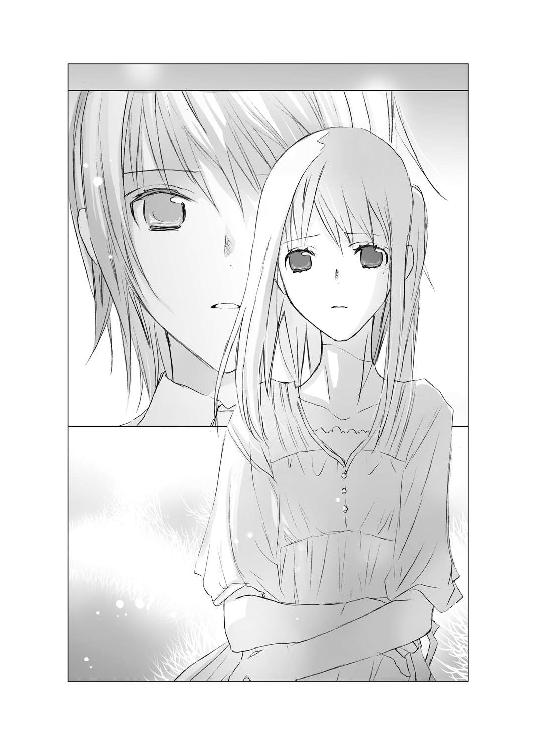
箒木の細く頼りない枝が、淋しい秋風に、儚く揺れる。
「きみは、臆病な人だったんだね」
「空、あんたは、強そうに見えてたけど、そうじゃなかったんだな」
世界が、夕暮れ前の黄昏の中、白く――白く――透きとおってゆく。まるであやふやな幻の中にいるように。すべてが透明になり、その中に真実さえ消えてゆきそうに。
おなかを抱きしめたまま、うつむく空に、ヒカルが切ない眼差しと厳しい口調で語りかける。
「約束はむなしいと、きみは言った。約束は叶わないものだからと......。けど約束をしないのは、むなしいからではなく、約束が叶わないかもしれないことが、怖かったから。夢からさめることを恐れて、夢を見ることさえできない――きみは、そんな弱い人だった」
「空は、本当は弱くて、臆病だったんだな」
泣き黒子のある目元が震え、空が顔をゆがめる。引き結んだ唇も、かすかに震えている。違うと言いたかったのかもしれない。けど、それは、言葉にならなかった。
ヒカルが、哀しそうな顔で続ける。
「朝ちゃんがアパートに訪ねてきたとき、妹さんに申し訳ないから子供は産めないと、泣いていたね。ぼくらはきみの妹さんに会ったよ。とても幸せそうだった。旦那さんと結ばれたのも、身代わりになったのも、全部妹さんの意志だった。きみが妹さんを差し出したんじゃない。妹さんが、自分から欲しいものに近づいたんだ」
「俺は、あんたの妹に――荻奈に会ったぜ」
「！」
空の目にまた衝撃が浮かぶ。
伏せていた顔を上げ、叱られるのを待つ子供のように、青ざめ怯えきった表情で是光を見る。
「妹は、旦那とも旦那の家族ともうまくいってて、子供も産まれて、すっげー幸せそうだった。妹は、旦那のことがもとから好きだったから、自分から旦那にアピールしたんだって、明るく話してた。旦那との仲が学校にバレて退学になって、親も離婚しちまったけど、マジ後悔してねーって」
空がまた目をそらす。
「やめて」
聞きたくないというように、首を横に振る。
「やめて、お願い。荻奈のことは言わないで」
「きみが、妹さんに罪悪感を覚える理由は、まったくない」
「空が、妹に謝る必要なんて、まったくねーんだ！」
空の瘦せた体が、びくっと跳ね、そのあと身を小さくすくめ、目を固く閉じ、うつむく。目元の泣き黒子が涙の粒のように見える。透明な雫ではなく、黒ずんだ、痛い涙。
「何故、きみはあんなに苦しんでいたのか。妹さんから送られてきた葉書を半分切りとりながら、残りの半分を捨てられずにとっておいたのか――」
ヒカルがこわばった顔で、断言する。
「きみは、罪悪感に逃げたんだ」
「空は、妹を、言い訳に使ってたんだ」
空は今にもくずおれそうだった。体をすくめ、両手でおなかを抱きしめ、不当な痛みに耐えるように。
けどヒカルは、空への追及をやめなかった。
「きみは、明るく奔放な妹さんがうらやましかったんじゃないのかい、空。もしかしたらきみも先生のことを好きだったんじゃないか？ きみが踏み出せずにいる間に妹さんが先生と結ばれてしまった。だから妹さんはきみの中で、道を踏み外したために不幸になった女にならなければならなかった。
なぜならきみは、踏み出せないから。
いつも先回りして悪いほうへ考えてしまい、張り巡らした予防線から一歩も足を出すことができない――。
幸せを望むことができない。
ぼくとのときもそうだった。約束を破られるかもしれないことが怖くて、約束できなかった。ぼくが約束しようとするたび、きみは拒んだ。だから実際には、ぼくらはどこかへ出かけることもなかったし、カップを選ぶこともなかったっ」
残酷ですらあるヒカルの言葉を、是光は軋み続ける胸の痛みをこらえながら、必死に伝えた。
目玉を突き出し、眉をつり上げ、頰を熱くしながら、それが空の心に届くように、叫び続ける。
「空も、本当は先生に、ちょっとは惚れてたんじゃねーのか？ けど空は真面目だから、先生と恋愛なんかできなくて、迷っているうちに、妹がちゃっかり先生とデキちまったんで、それを認めたくなくて、妹を不幸な女にしときたかったんじゃねーのか。
だって、空は、妹みたいに、欲しいもんに突っ走ってくことなんて、できねーから！
約束が嫌いなのだって、約束して、裏切られるのが怖かったからじゃねーのか！
だから、ヒカルとも約束しなかった！ ヒカルとの旅行も、ヒカルとカップを選んだことも、本当はなかったんだ！」
箒木がざわめく。
自分で自分をかき抱き、絶望に顔をこわばらせる空の頰が、全身が、緊張に引きつってゆく。
「けど！ 空！ きみは本当は、ぼくとの約束を望んでいてくれたんじゃないかって、ようやく気づいたよ。だからこそ、ぼくの死後、やりなおしたんだ！ ぼくと旅行にいったことにして、ぼくとカップを買ったことにして、ぼくと愛に満ちたやりとりがあったことにして子供もいたことにした！」
ああ、そうだったんだな、空。
おまえは、本当は、ヒカルと箒木を見に行きたかったんだな。
一緒にカップを選びたかったんだな。
空が必死に抱きしめ、守ろうとしている幻を――その在処を――是光は胸がしめつけられるような痛みとともに見つめた。
――この子が励ましてくれるわ。
――愛しているのか。
――もちろん。
おなかにそっと手のひらをあて、満ち足りた、幸せな表情で微笑んでいた空。
それは、是光が憧れた理想の母親そのもので。
「ヒカルと一緒にカップを選んだってのも......ヒカルと旅行したってのも、全部、空の願望だったんだな......。空は、本当はヒカルと約束をしたかったんだな......」
あんなに大事にしていた、おなかの中の子も......。
「空、きみのおなかに、ぼくの子供はいない」
「空は、妊娠なんかしてねぇ」
空が箒木の茂みの間に、がくりと膝をつく。
張りつめた糸が切れたように、肩を落とし――うなだれ――それでも、両手はおなかを抱きしめたまま、離れない。
優しく、切なく、ヒカルが問いかける。
「ねぇ、空、きみも、もうそのことに気づいているでしょう？」
「空も、わかっているんだろう」
唇を強く結び、沈黙を守り続ける空。
泣き黒子がゆがみ、下がりきった細い肩が、弱々しく震えているのに、是光は胸が潰れそうになった。
ヒカルの瞳にも、悲哀とやるせなさがにじんでいる。
「もしかしたら現実と空想が入り交じって、きみは自分でも、子供がいると思いこんでいたのかもしれない。少なくとも、朝ちゃんが訪ねてきたあのときまでは......。何故、是光と朝ちゃんが外で話している間、きみは手作りの芳香剤をばらまいたのか？ 何故、カップで手を切ったのか？ 何故、うずくまったまま立てなかったのか？
芳香剤をばらまいたのは、何かの匂いを誤魔化すためで、手を切ったのは、何かの痕跡を誤魔化すためで、うずくまったまま立てなかったのは、立ってしまえば、きみの体に起こった変化に、気づかれてしまうから――」
ヒカルが辛そうに、眉根を寄せる。
「畳に落ちていた血は、手から流れた血だけではなく、月のものだったんじゃないか？
それを見て、きみはその瞬間、おなかの中に子供がいないことを知ったんだ。
それでパニックを起こした。
子供がいないことを、是光や朝ちゃんに知られないように、畳にこぼれた赤い血が目立たないように、自分でカップを割って――その破片で手を傷つけた。それだけでは足りず、芳香剤をばらまいたけれど、それさえも気になって、雑誌や、赤ちゃんのおもちゃを、片っ端から床に投げ出していった。そのうち是光が戻ってくる足音が聞こえて、慌てて床にしゃがみこんだ。是光が、手当をするために立たせようとしても、かたくなに拒んだのは、ズボンの後ろが汚れていて、立てなかったんだね。そうして、失踪した――」
朝衣の訪問。
ヒカルが言うように、おそらくそれがきっかけだったのだ。
子供を欲しいと思うあまり、体が妊娠中と同じ症状を示すことが、女性にはあると、是光も知識として知っている。
きっと、空もそうだったのだろう。
それが、朝衣に現実を突きつけられ、止まっていた月のものが流れ落ちた瞬間、空は気づいたのだ。
おなかの中は、空っぽであることに。
ヒカルの子供など、どこにも存在しないことに。
そのときの空の気持ちを思うと、やりきれなかった。どんな気持ちで、空っぽのおなかを抱きしめ、うずくまり、うつむいていたのか。
それでも歯を嚙みしめ、空に伝える。
「カップを割って手を切ったのは、畳にこぼれた別の血を隠すためだった。緑茶とグレープフルーツの芳香剤をばらまいたのも、しゃがみ込んだまま立てなかったのも、みんな同じ理由だ。空は、もう全部わかっていて、けど認めたくなくて、逃げたんだ！」
夜へと向かう、白く透きとおった冷たい空気の中、空はあのときと同じようにおなかをかき抱いたまま、哀しみを吐き出すような、ひび割れた声で言った。
「だって、わたしには、なにも残っていなかったんだもの......っ！」
絶望がみなぎる瞳から、透明な雫がこぼれ落ちる。
ライムグリーンの箒木が、冷たい風にざわめく。空が細い髪を乱し、瘦せた体を折り曲げ、絞り出すような声で語る。
「ヒカルくんが死んだって聞いて、愕然としたわ。あんなに美しく輝いていた子が、死ぬなんて。はじめて会ったとき、天使かと思った......。一緒にいるだけで、こちらがいたたまれなくなるほど綺麗で、純真で......わたしなんかとは、生きて呼吸をしている次元が違う、みんなの注目を浴びて、愛され、きらめいている、特別な子なんだって......。ヒカルくんの学校の近くで、ヒカルくんを何度か見かけたけど、いつも女の子に囲まれていたわ。どの子も綺麗で可愛くて、若くてみずみずしくて――きっといいおうちのお嬢様なんだろうって思ったわ。ヒカルくんには、そういう女の子たちのほうが似合っているって......。わたしがもしヒカルくんと同じ歳で、あんな風に綺麗で無邪気な女の子だったら、ヒカルくんの気持ちを、信じられたかもしれない。けど、わたしはそういう女の子じゃない！」
空の叫びが、白くかすむ世界の中に散ってゆく。箒木のふっくらした丸い茂みが、風に煽られ一瞬細く長くなり、ひきつれたように傾く。空と一緒に悲鳴を上げているようだった。
「わたしはヒカルくんよりオバさんで、外見もヒカルくんと全然釣り合っていなくて、聖書を鞄に入れているようなおカタい女で――本当は神様を愛しているわけじゃないのに、みんなから神様と結婚しているって言われても、否定もできない女で――ヒカルくんがわたしに、ほんの一時期だけ関心を持って、弟に手紙を預けたりして、わたしを追いかけたのは、わたしがヒカルくんから逃げたから――ヒカルくんと約束をしなかったから――ただそれだけだった！ 子供が目の前を逃げてゆく蟬を、好奇心から無邪気に追いかけただけ。わたしが逃げなければ、ヒカルくんは、わたしを決して追いかけたりしなかったわっ」
空の言葉に、ヒカルが苦しそうな眼差しになる。
空は、ずっとヒカルに対して引け目を持っていたのだと、是光もわかった。
きらきらした王子様のような少年に求愛されて――それは、女の子にとって夢のような出来事だろう。
けど、空は、夢を見ることのできない女だった。
だから、ヒカルの求愛を恐れたのだ。
あんな美しい少年が、自分のような年上のつまらない女を、好きになるわけがない。本気のはずがない。きっとすぐにあきてしまう、惨めに捨てられる。
一緒にいても、つりあわない。自分と相手の差を感じて、胸が潰れそうになるだけ。
だから、約束なんてしない。バカな夢も見ない。
そう――空は、ヒカルを恐れた。
ヒカルが空へ向けた心を――恋情を、恐れたのではない。
空が追いかける価値などないつまらない女だと、ヒカルに知られてしまうことを、薄い衣を一枚残して逃げ出さずにいられないほどに、恐れたのだ。
空っぽのおなかを、空が強く抱きしめ、青白い唇を震わせる。
「けど、ヒカルくんが亡くなったってわかったとき、礼拝堂で会ったときに、ヒカルくんがいつも傷ついていたことを思い出して......わたしが、ヒカルくんを慰めてあげられたんじゃないかって......後悔して......ううん、それはきっと綺麗ごとね。わたしは卑怯だから、どうせ手に入らないと、自分からあきらめたものが、本当に手の届かないものになってしまったとき、どうして逃げたりしたんだろうって、胸が裂けそうになるの。
妹のときもそうだった......っ。
どうして、わたしが先生と一緒に、買い物に行かなかったんだろうって。先生が誘ったのは、妹じゃなくてわたしだったのにって。妹は、わたしの身代わりだったのにって。
だ、だから、妹が先生と結婚して、子供も生まれて幸せになったことを、祝福できなかった。妹は、わたしの身代わりで先生に汚されて、みんなのさらし者になって学校も退学になって、不幸になった可哀相な子なんだって、わたしが妹をそんな風にしたんだって、思い込みたかったのよ。わたしは――醜いわ」
揺れる箒木の間に、髪を乱してうずくまり、自分自身を切りつけるように叫ぶ空を、息苦しい思いで見つめながら、是光は、空の妹の荻奈のことを、思い出す。
欲しいものは欲しいと、はっきり口にする。そのための努力も計略も惜しまない、明るく逞しい女性。
教師との恋愛がバレて退学になった荻奈は、浅はかかもしれない。
けど、『悔いなしって感じ！』と笑顔で言い切る姿は、強く明るい。
荻奈のような女だったら、たとえ相手がアラブの大富豪でも、ヨーロッパの王子様でも、臆したりしないだろう。
たとえそれが一夜かぎりの夢でも、その夢に全力で身を任せ、味わい、歓び、そのことを決して後悔せず、最高の夢を見たのだと、のちのちまで笑って語るだろう。
空には、できない。
相手に惹かれれば惹かれるほど、先回りして、破滅し絶望するだけの暗い未来を想像してしまう。
その未来につかまる前に、薄い衣だけを相手の手に残して、逃げ出してしまう。
そうして、逃げることによって、囚われ続けるのだ。
あのとき、受け入れていたらと。
あのとき、踏み出していたらと。
「そうよ、ヒカルくんとのことも、わたしは頭が真っ白になって、心が切り裂かれそうなほど後悔していた。だから、あなたの言うとおり、ヒカルくんと一緒にカップを選んだのも、ヒカルくんと旅行をしたことも、みんな――わたしがヒカルくんを受け入れていたら、そんなこともあったかもしれないっていう、願望だったのよ。子供も――ヒカルくんの子供がいてくれたら――わたしがヒカルくんの子供を産むことができたら――って毎日考えていたら、生理もこなくなって、お肉の匂いが苦手になって、何度も吐いてしまって。悪阻みたいで――。その頃からわたしは、本当にヒカルくんの子供ができたんだって、信じてしまっていた。
この子は、わたしのおなかが育てている、わたしの血を半分わけた子だから、わたしに幻滅したり、わたしを捨てたりもしないって。わたしだけのヒカルくんなんだって。
この子が産まれたら、うんと大事にして、可愛がって、ヒカルくんに言えなかったことを言おうって。あなたが大好きよ、大好きよ、愛しているわ、大好きよって――」
空の愛の言葉を、ヒカルはどんな思いで聞いているのだろう。
是光の隣に立ちつくすヒカルの顔は、苦しそうにゆがんでいて、空を見おろす瞳は深い哀しみに染められている。箒木を揺らす風が、ヒカルの髪も淋しげに揺らしている。
空が声をつまらせ、すすり泣く。
「け、けど、ヒカルくんの従姉の斎賀さんに、こんな狭いアパートで、ヒカルくんの子供を産ませるわけにいかないって――子供が産まれたら、ＤＮＡ検査も受けてもらうって言われて――あなたみたいなかさついた、つまらない女が、ヒカルくんの子供を産めるわけがないって目で見られて――おなかの奥が、ねじ切れそうに痛くなって。お尻と太ももにぬるっとしたものが、あふれ出て、流れていって――。
わたしのおなかは、わたしの名前と同じで空っぽだって――わたしは、蟬の脱け殻なんだって、わかっちゃった。ヒカルくんが恋をして、追いかけていたのは、力強く鳴く幻の蟬で、わたしは地面に落ちた蟬の脱け殻のほう！ わたしにはなにもない！ なにもないわ！」
空っぽのおなかをかき抱き、深くうなだれ、肩を震わせる。
何故、是光が蟬の脱け殻の話をしたとき、空の目が曇ったのか。
集めた脱け殻が、風に飛ばされて床に落ち、誤って踏みつけて粉々になってしまったと聞いて、淋しそうだったのか。
――そう......哀しいわね。
目の下の泣き黒子が、涙の粒のように見えたことも思い出し、是光は胸がしめつけられた。
――わたしは空っぽのカラ、蟬の脱け殻だから。
何故、電話口で、あんな風に苦しそうにつぶやいたのかも......。ようやく理解できたような気がした。
自分を、打ち捨てられた蟬の脱け殻だと信じる空にとって、〝ヒカルの子〟は、希望であり、拠り所だったのだ。
それが失われてしまった。
（空の未来には、今、絶望しかねーんだ。目の前にあった景色が一度に消えちまって、かさかさした空っぽの世界が、どこまでも広がってるようなもんなんだ。そんなの、どうすりゃいいんだ）
口の中に、嫌な味の唾がたまってゆく。空の涙を、空の嘆きを、止めたいのに、方法が見つからない。ごめんなさいと謝り続ける母親に、なにもできなかったように。
（俺は、どうしたらいいんだ！）
空が洟をすすり、疲れ果てた様子で、ざわめく箒木を見渡す。夢は消え失せ、そこにあるのはただ素っ気ない現実だけなのだと、ヒカルが熱っぽく帚木と呼んだ空は幻だったのだと宣告されたように、顔をゆがめた。
「――っく、わたしは伝説の帚木なんかじゃない。花ですらない箒木なのよっ」
「そんなことはない！ 箒木も、帚木に負けないくらい美しい花だよ！」
風のざわめきを断ち切るように叫んだのは、ヒカルだった。
激しく強い想いのこもったその声が、是光の耳を――心を――貫き、是光も叫んでいた。
「そんなことはねー！ 箒木は、とびきり上等の花だ！」
「噓を言わないで......っ」
うなだれ、しゃくり上げる空の頰に、髪が降りかかる。
「花びらもない、あざやかな色もまとっていない、ただのぼさぼさの草の塊にしか見えないこの茂みの、どこが〝花〟だというの」
空の表情はわからないが、細い髪の間に見え隠れする黒子は涙で濡れていて、訴える声は苦しそうに掠れ、是光の言葉を信じていないことがわかった。
「きみは、まだ紅葉して、色づいた箒木を見ていない」
「空はまだ、紅葉した箒木を見てねーだろっ」
「ヒカルくんも、そう言っていたわ。けど、ここへ来てみて、毎日箒木を見ていて、わかった。箒木はどれだけ見ても、花びらのない茂みのままで、秋になって赤く染まった箒木を見ても、がっかりするだけだって」
ヒカルが、ありったけの想いをこめた一途な目で空を見おろし、さらに激しい口調で言う。
「またきみは予防線を張るの！ 空！ 紅葉した箒木を、地味でつまらない花だって――花ですらないって、決めつけるの？ ならば、今！ きみに、箒木がどんなに素晴らしい花か、見せてあげるよ！ 伝説の帚木に劣らない花だって！」
「しょぼくれた想像で、訪れてもいねー未来に絶望すんのは、もうおしまいにしろ！ とびきりの箒木を、今すぐ見せてやる！ 伝説の帚木にも負けねー最高の箒木をな！」
「さぁ、立って！ 空」
「来い！ 空！」
空の右腕をつかみ、是光は引き上げた。
空の腕が、空っぽのおなかから離れ、膝がまっすぐに伸びる。
「赤城くん......！」
涙で濡れた顔で怯えたように是光を見上げ、手を振りはらおうともがき、足を踏ん張るが、
「逃がさねーぜ！」
是光は目をカッと見開いて、叫んだ。
その声と表情に、空が衝撃を受けたように肩を跳ね上げ、声をつまらせる。
是光は空の腕を、絶対放さない覚悟で強く握りしめ、ヒカルが進むほうへ歩き出した。
ヒカルは、強く一途な目をしたまま、いつもより男らしい厳しい表情で、宙を泳ぐように、箒木の丘をどんどん上がってゆく。風がヒカルのやわらかな髪を、後ろになびかせる。
そのあとを、是光も早足で追いかける。
是光に腕をつかまれた空が、後ろで息を切らしている。
丘の天辺に辿り着いて、振り向いたとき、ちょうど沈みかけた夕日が、まばゆい光を放って、是光と空の目を射た。
ヒカルの声が、晴れやかに響き渡る。
「ほら、見てごらん、空」
是光が――空が――、まぶしさに閉じていた目を、開ける。
連なる山々の向こうに沈んでゆく、大きな夕日。
その輝きを浴びて、丘の斜面をおおいつくす箒木の群れが、幻想的な淡い紅色に染まっている。
まるで、季節が駆け足で進み、秋の盛りが訪れたように――。
ふさふさしたやわらかな丸い茂みが、きらきらと金色の光をにじませながら、紅く色づき、淡く輝いている。
それは、一面金色と薄紅色に染まった、天上の楽園を見るように――！
雄壮で、壮麗で、可憐で、夢幻で――。
淡く紅く色づいた花々が、吹き抜ける風にたなびく。
是光の隣で、空が目を大きく見張り、息をのむ。
きらめく光を浴びながら、箒木と同じ薄紅に染まったヒカルが、ふくよかな甘い声で告げる。
「箒木は、同じ名前を持つ伝説の帚木と同じで、近づきすぎると本当の美しさが見えなくなってしまう。だから離れて見渡すんだ。ねぇ、綺麗な〝花〟でしょう？ 素敵な〝花〟でしょう？ 秋の深まりとともに、爽やかな緑の花々は、恋する女の子の頰のようなほのかなピンク色に変わり、日を重ねるごとに、あざやかな情熱の赤へ染まってゆくんだよ。特に清々しい緑とやわらかな薄紅色が入り交じった秋のはじめの箒木は、溜息が出るほど愛らしくて――それでいて品があるんだ。
箒木の花は、花びらをつけない、丸いつぶつぶの――地味な花に見えるかもしれない。けど、箒木自体が、〝花〟なんだよ。
それに、空が地味だって言ってた緑の箒木だってね、あんなに清々しくて、心をすっきりと掃き清めてくれる、豊かで美しい〝花〟はないよ。庭にあの丸くてふさふさした箒木がひとつあるだけで、とても安心できる。本当に、素敵な花だ」
ヒカルの口調ににじむ、空への愛情。空への想い。
どれだけ空が好きだったか。
それを是光は、力を込めて、想いを込めて、空に伝える。
「なぁ、声も出ねーくらい綺麗だろう。箒木は近くから見ると、ちんまりした茂みに見えるけど、遠くから見たら、こんな上等な〝花〟だっただろう。色づく前の緑の箒木だって、ヒカルは見てるだけで、涼しくて優しい気持ちになれるって、とろけそうな顔で言ってた。胸ん中がもやもやしてても、あのふさふさした箒木が、綺麗に掃き清めてくれるんだって！」
身じろぎもせず、淡い紅に染まった箒木の群れを見おろす空の瞳が、しだいにうるんでゆく。
「空、ぼくはきみに恋するあまり、幻の蟬を追いかけて、きみの本当の姿を見落としていたかもしれない。きみは、帚木ではなく箒木だったのかもしれない。けどきみのすべてを見た今でも言える。帚木の空も、箒木の空も、同じくらい大好きだ！」
迷いのない、まっすぐな瞳で――晴れやかな瞳で――ヒカルが告白する。
是光も、力一杯叫ぶ。
「伝説の帚木じゃなくたって、空はイイ女だ！ この色づいた箒木みたいに、上等な花だ！」
空の手は、もはやおなかにふれることなく、自然に両脇に下がっていた。
唇が震えているのは、きっと感情があふれ出そうになっているためだろう。
ヒカルが空の肩を抱き、勇気づけるように甘く優しくささやく。
「空、きみは、ぼくを夢中にさせた、素敵な花なんだよ。素敵な人なんだよ。そんな素敵なきみの願いが、叶わないなんてことはない」
ヒカルの声は、空の耳には届かない。なのに、夕日に染まる丘の上で、空はその声が聞こえたかのように、まつげを震わせ、ぐっと息を飲み込み、是光のほうへ顔を向けた。
「願って、空」
「望みを言え、空」
「もう暗い未来を想像して、逃げたりしないで。きみの望みを口にして」
「おまえの望みが叶うことを、俺が教えてやる！」
「わたしは......」
眉を下げ唇を震わせた空が、涙で光る目で、是光を見上げる。
「ヒカルくんに......さよならを言いたい」
◇ ◇ ◇
翌日。
夕暮れが迫る大学のキャンパスの、正門前広場で、白いシャツの上に明るい空色のカーディガンを羽織った空は、約束がはたされるのを待っていた。
スカートは、裾が風に広がるほどたっぷりしていて、透ける素材の布が一枚、上に重なり、さらさらと揺れている。
門のこちらで、是光は緊張して時間を確認した。
もうすぐ、約束の時刻だ。
ヒカルが、信頼のこもる澄んだ眼差しで、ささやく。
「空の願いを、ぼくの代わりに叶えてあげてね」
「任せろ」
低い声で答え、足を踏み出した。
広場を行き交う学生たちが足を止め、ざわめく声を聞いて、空もまた、そちらへ視線を向けた。
高校の制服を着た、目つきの鋭い、ぼさぼさの赤い髪の少年が、背中を少し丸めて口をむっつりと曲げて、空のほうへ歩いてくる。
赤い髪も、ブレザーの制服も、大学のキャンパスではとても目立っていて、みんな何事かと驚いている目で、少年を見ている。
風に揺れる赤い髪が、夕日を浴びた箒木に似ていると思って、おだやかな嬉しい気持ちになりながら、空も少年のほうへ歩き出した。
学生たちが、自然と左右に分かれ、空と少年の間に、一本の道ができる。
その道を、少年と空はまっすぐに進み、お互いの距離を縮めてゆく。
少年が、不機嫌そうに口を曲げているのは、きっと慣れないキャンパスで注目を浴びて、緊張しているからだろう。一生懸命な様子に、空の口元に微笑みが浮かぶ。
その少年が――ヒカルの友達が、空を引き寄せ抱きしめる。
まるで、ドラマの一シーンのように。
少年らしい細く固い腕で、苦しいほどに強く、空の細い体を、ぎゅーっと抱く。
衆人環視のざわめきの中、空もつま先立ちで、少年の首に両腕を回し、ありったけの強さで抱きしめ返す。
押し寄せる驚きの視線。
けど、空はひるまない。今、この場所で、一番輝いているヒロインは、間違いなく自分だ。
今、自分は、大好きだった人と、最高のお別れをしているのだ。
そう、最高で幸せな、お別れを。
「さようなら、ヒカルくん」
万感の想いでささやきながら、相手の唇すれすれに自分の唇をそっと押しあてると、ヒカルの友達は、ちょっぴりうろたえたみたいに体を硬直させ、頰を赤らめた。
けど、空を突き放したりはせず、それどころか、もっと強く――息が止まりそうに強く、抱きしめてくれた。
優しい、ヒカルの代理人。
彼が、ヒカルとの約束をはたしてくれた。
空は、もう脱け殻ではなかった。
空のソラは、空っぽの『カラ』ではない。
青空の『ソラ』――どこまでも広がる大空の『ソラ』。
強欲になろう。夢を見よう。奪われることや叶わないことがあっても、立ち止まらず逃げ出さず、その先へ進んでゆこう。
痛みや別れを恐れず、うまくいかなかったそのときは、きちんと傷つき、お別れをしよう。
なくした希望は、新しい希望で埋めよう。
きらきらした明るいもので、胸をいっぱいにしよう。
綺麗な色の服を着て、かかとの細い靴をはき、髪をおろして、街へ出かけるのだ。
空が手をはなすと、ヒカルの友達も腕をほどいた。
そのまま言葉を交わさず、逆のほうへ歩き出す。
「さようなら、空。二度もぼくを救ってくれてありがとう」
黄昏の甘い金色の靄の中を、スカートの裾と細い髪をさらさらと揺らし、澄んだ気持ちで進んでゆく空の耳元で、ヒカルがささやいたような気がした。
◇ ◇ ◇
外灯の明かりが、点りはじめた帰り道。
是光は、自宅近くの道で、意外な相手の姿を見つけて、足を止めた。
「葵」
葵はもじもじしながら、気遣うような眼差しで是光を見上げた。
「すみません。赤城くんのことが、気になって」
空の妹に会いに行ったとき、いきなり是光が叫んで、店を飛び出していってしまったことを、心配してくれているのだろうとわかって、胸がきゅっとする。
一度メールを送ったが、まだ直接謝ってはいなかった。
「この前は、悪かったな。一人で先に帰っちまって」
「いえ。それは、もういいんです」
自分が置いてゆかれたことよりも、そんな行動をとった是光のことを、思いやっているようだった。是光がまたいきなり走り出すのではないかと案じるように、眉を少し寄せ、じっと見つめている。
あんまり葵が目をそらさず、一生懸命に見上げてくるので、是光は弱ったような、切ないような気持ちになってしまった。
（式部だけじゃなく、葵にも......心配かけてたんだな）
以前の是光は、なにをするにも一人だった。
なにか行動するときに、周りの気持ちを考える必要なんてなかったし、こんな風に誰かから心配されることもなかった。
（けど今は......）
ヒカルに出会ってから、いろんな相手と関わるようになって、自分の言動が誰かを傷つけたり、不安にさせたりすることも、わかった。
だから、なにかを口にしたり行動したりするときは、自分のことだけを考えていてはいけないのだ。周りのことも、考えなければ。
思うだけで、今は全然実行できていない。だけど、少しずつ、そんな強くて優しい男になれたらいい。
ヒカルが、是光と葵を、静かで優しい眼差しで見守っている。
「来てくれて、ありがとな......。けどもう、大丈夫だから」
是光も葵をまっすぐに見つめ返しながら、真面目な口調で言った。多分、今の自分は、今朝の自分より、少し大人になっている。
「ヒカルの子供のことも、空のことも......全部、終わらせてきた」
葵が、ぴくっと肩を震わす。
「......あとで、話すから」
是光の言葉に、はい、と小さくうなずく。
「葵、車は」
「一人で、来たんです」
「危ねーじゃねーか」
「そうしたかったんです」
葵もまた、三日前に会った葵よりも、少し大人になったみたいな顔で答える。そのことに戸惑いながら、
「もう暗いし、送ってく」
頰を少し熱くして言ったとき。
「！」
家の門の前に、小柄な女性がひっそりと立っているのが見えた。
（母さん――）
かたわらに小学一年生くらいの小さな男の子がいて、その子の手を握りしめながら、頼りない細い肩をかすかに震わせ、今にも泣き出しそうな罪悪感でいっぱいの目で、是光を見つめている。
葵も、その女性が、空の妹の店で会ったのと同じ女性だと、気づいたのだろう。是光の隣で、緊張したように身をすくめる。
是光は顔を固くこわばらせ、眉の間にぐっと力を入れ、食い入るように母親を見つめ返していた。
（なんで......来たんだ。俺のこと、知らねーって言ったくせに。また、そんな泣きそうな顔して。また、ごめんって、謝るのか？）
喉が苦しくなって、体がズキズキして、頭が沸騰したように熱くなる。
腹が立って悔しくて、両手が震えるほどなのに、憎しみの代わりに込み上げたのは、子供の頃に感じていた、母親を求める切なさだった。
この人は、俺のことを、愛していない。
可愛いと思えない。どう愛していいのか、わからない。小晴にそう泣きついて、幼い息子に、涙をこぼしながら懺悔して、懺悔して、懺悔して――やつれはてボロボロになって、母親としての責任に耐えきれず、是光を置いて家を出て行った。
どうしようもなく弱くて、最低の母親だ。本当に、ひどい母親で、ダメな母親で......。
（けど、俺は、そんな母さんが好きだった）
笑ってほしかったし、振り向いてほしかった。
お母さんが大好きだから、もう泣かないでと言ってあげたかった。おれがお母さんを守るから、泣かないでと。
母親に去られたあと、ずっと、母親から愛してもらえなかったことに、こだわっていた。自分が、こんな目つきの悪い、可愛げのないガキで、頰が引きつって笑うことすらできなくて、だから、お母さんも、あんなに努力して苦しんで、泣いても泣いても愛せなかったのだろうと。
自分は、蟬の脱け殻のようにかさついた、つまらない女だから、ヒカルくんみたいな人に愛されるはずがないと絶望していた空のように、是光もずっと思い悩み、悶え、のたうち、あきらめていた。
だけど、本当に必要だったのは、愛されることではなく、愛することだったのではないか。
ひいなに言われた言葉を、震える胸の内で反芻する。
――愛されることと、愛することと、どっちかひとつしか選べないんなら、うちは、迷わず愛するほうを選ぶわ。
――そっちのほうが、うんと幸せやもの！
とろけきった笑顔で、断言したひいな。
兄が大好きで、家族と名乗りあえなくても、そんな立派な人が確かに自分と血の繫がった家族なのだというだけで――ただ近くにいられるだけで、息が止まりそうなほど幸福なのだと。
（好きだった。大好きだった）
憎しみも、怒りも、なにもない。
ひりつく喉に、熱いかたまりと一緒に繰り返し込み上げてくるのは、その想いだけ。
きっと大切なものほど、近づきすぎると見えなくなる。
愛してほしい、優しくしてほしいと、願ってしまう。それが得られないことに絶望し、もっと見えなくなってしまう。空っぽの闇に、一人きりで迷い込んでしまう。
離れてみて、ようやくわかった。
ようやく、見えた。
（そうだ、俺はただ母さんに、笑ってほしかったんだ）
別々に暮らしている間も、また泣いているんじゃないか、また自分を責めて苦しんでいるんじゃないかと心配でたまらなくて――泣いている姿ばかり思い浮かんで、心臓が裂けそうで。
母親に手を引かれている男の子は、斜めがけした鞄に、青いフェルトで作った熊のマスコットをぶらさげている。
「おかあさん、おなかすいたから帰ろう」
と母親に向かって、無邪気に笑いかける。
あれが、再婚相手との間に生まれたという、是光の弟だろうか。
（ああ、そいつは、ちゃんと笑えるんだな）
母親を信じきった子供らしい素直な笑顔に、胸がいっぱいになった。
よかった。母さんは、そいつの前で、ちゃんと笑っているんだな。
そいつを、愛せているんだな。
幸せなんだな。
だから、是光の弟も、そんな風に母親の手をしっかり握りしめて、口を大きく開けて、笑えるのだろう。
そのことが、嬉しくて。
込み上げる涙で、喉や目が熱くなるほど嬉しくて。
母さん、あんたも、そんな泣きそうな顔をしなくても、もういいんだ。
俺に罪悪感をおぼえて、苦しまなくても、もういいんだ。
この先二度と会えなくても――俺のこと一生愛せなくても、俺は愛しているから、母さん、あんたは、ただ幸せでいてくれれば、笑っていてくれれば――。
幸せでいてくれ。
笑っていてくれ。
もう恨みも絶望もない。それだけが願いだ。それだけを、心から願う。
喉がつまって、言葉にならない。
だから、口の端に力を入れて、頰を必死に持ち上げた。
隣で葵が息をのむ気配がした。泣きそうな顔で是光を見ていた母親は、驚きに目を見張ったあと、もっと泣きそうな顔になった。
大好きだ、母さん、大好きだ。
俺は、ちゃんと笑えているか？
ちゃんと、伝えられているか？
無理矢理持ち上げた頰の筋肉が、ひきつれて痛い。力を入れすぎた目から、涙がこぼれ落ちてくる。
けど、笑う。
大事な人のために。
今、笑えなくてどうする。
（俺は、大丈夫だ。母さんがいなくても、俺はちゃんと笑って過ごしてる。友達もできた）
鼻水をすすりながら、笑い続ける。
冷たくこわばった手を、華奢な指がそっと握った。
葵だった。
あたたかな指を――やわらかな指を、是光も握り返していた。
母親が、眉根をぎゅっと寄せ、目の縁に涙をいっぱいためて唇を動かし、けれど言葉にならず、深く、深く、頭を下げる。
「お母さん、どうしたの？ あのお兄ちゃん、なんで笑いながら泣いているの？ お母さんも、泣いているの？」
不思議そうに尋ねる男の子の頭を、安心させるように撫で、母親がその子の手を引いて、是光に背中を向ける。
外灯の明かりが、細い背中を照らし出す。
遠ざかってゆく二つの背中。
それを、葵に手を握られ、笑いながら、泣きながら、見送る。
もう振り返ってほしいとは、祈らない。
代わりに願う。
母親と、その隣にいるその男の子が、一生幸せで、笑っていられるようにと。
外灯の明かりの向こうへ、細い背中と小さな背中が、消えてゆく。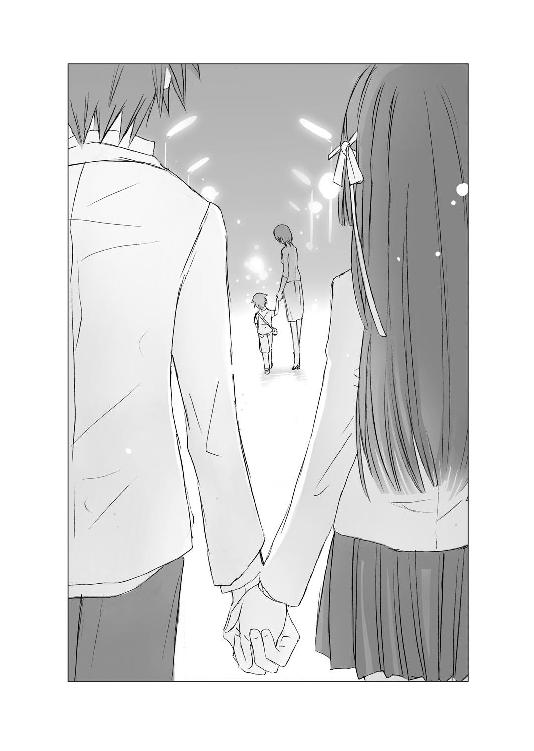
繫がった葵の手が、やわらかくて、あたたかくて、頰をこぼれてゆく涙もあたたかくて。
震える手で握り返したら、向こうも指にぎゅっと力を込めてきて。
胸も一緒に震えてしまって――。
気がつけば、そんな是光たちを、ヒカルが切なさのにじむ綺麗な微笑みを浮かべて、見つめていた。
◇ ◇ ◇
是光、きみは『星の時間』を知っている？
ミヒャエル＝エンデは、『モモ』という物語の中で、こう言っているよ。
『あらゆる物体も生物も、はるか天空のかなたの星々にいたるまで、まったく一回きりしか起こりえないようなやり方で、たがいに働き合うような瞬間』――奇跡みたいな、運命みたいな、特別な瞬間のことだ。
ぼくにとって空は、そういう人だった。
ぼくが一番苦しくてたまらないとき、いつも奇跡みたいにぼくの前に現れ、抱きしめてくれた人。
憧れの人。手に入らない人。
遠い人。
あの絶望と痛みの中、ぼくを浄めてくれたのは、空だった。
あのとき、抱きしめ救ってくれたのは、空だった。
空はずっとぼくの〝憧れ〟だった。
そんな風に神聖視するあまり、空が弱い部分もある繊細な女性だということに、ぼくは気づけなかった。そのせいで空を苦しめてしまったし、きみにもずいぶんキツイ思いをさせてしまったね。
大切なものほど、人は正しく見つめることができなくなってしまうのかもしれない。
けれど、空がそんな弱くて臆病な人だとわかっても、やっぱり愛しい人だった。
ううん、弱い部分を見て、ますます愛しく思う気持ちが高まったかもしれない。
人は美しさや強さだけではなく、きっと弱さにも惹かれ合う。
人はもともと弱くて、誰かの手が必要だから。
ねぇ、是光。
きみは、あのとき葵さんの手を握り返したね。
葵さんはきみの手を、握りしめたね。
あのとき、きみたちの心の中で、星が重なったんじゃないか。
星と星が響きあい共鳴する、美しく澄んだ音を聞いて、心の内側が震えたんじゃないか。
その気持ちは一瞬のものだったかもしれないけれど、その一瞬は特別な一瞬で、なかなか忘れられるものじゃない。
あのとき、きみたちは、お互いを支え合っているように見えた......。
是光。
ぼくらは、この先どう変わってゆくんだろう。
ぼくはいつまで、この地球にとどまり続けるんだろう。きっと、それはもう長い時間じゃない。
星が位置を変えるように、どんなものにも変化は訪れるのだと、今なら確信を持って言える。
大切な人のために、きみは笑うことができた。
お母さんへの想いがいっぱいつまった、勇敢で優しい笑みだった。あたたかで、強い笑みだった。
練習のかいがあったね。
本当に、胸がいっぱいになるような笑顔だった。ぼくも実体があったら、きっときみに抱きついて、よくやったねって、褒め称えていたよ。
きみのお母さんは、この先、何年も、何十年も、きみのあの笑顔を思い出して、救われるだろう。
きみは、きっとこれからも変化し、成長を続けてゆく。
十年後、きみの隣には誰がいるんだろう。
たとえきみの隣に誰がいても。
葵さんの隣に誰がいても。
後日。
空に子供はいないことを伝えると、朝衣は目を尖らせて、「なんて人騒がせなのっ！ わたしは、彼女が誰にも知られず落ち着いて過ごせる地方の家と、出産のための病院のリストまで作っていたのに」――と怒り狂っていた。
たっぷり皮肉と愚痴を頂戴して、まぁまぁと下手に出ながら、
「朝ちゃんには迷惑かけたな。けど、あんなに早く、空の居場所を突き止めてくれると思わなかったから、すげー助かった」
と言ったら、ぴたりと口を閉じ、急にぎこちなくそっぽを向いて、
「あたりまえよ。最初から、わたしに頼ればよかったのよ。きみのミスよ、赤城くん」
冷ややかな口調でそう言ったあと、また顔を是光のほうへ勢いよく向けて、鋭い目で睨み、
「いい？ これからはヒカルのことでトラブルがあったら、わたしに真っ先に報告するのよ」
と念を押し、
「......きみ個人のことも、相談に乗らないわけではないけど」
と、小声で言って、歩いていってしまった。
「なんつーか、朝ちゃん、丸くなったな」
ぼそりとつぶやく是光に、ヒカルが苦笑しながら、
「きみ限定でね」
と、よくわからないことを言った。
月夜子も、ヒカルの子供はいないと知って、がっかりしていて、
「赤城くん、慰めて」
と迫られ、こちらもなだめるのに一苦労で、空のおなかの子供を是光の子だと思い込んでいた頭条は仏頂面で、
「貴様自身にやましいところがあるから、女の噓に騙されるんだ。たとえ子供ができただの、認知しろだの、堕胎するから慰謝料を寄越せだのと泣きつかれても、そうした軽々しい行為が一切無ければ、胸を張って拒否できるはずだ。貴様も今後は反省して身を慎め」
と、自分の体験なのか、休み時間いっぱい長々と説教していった。
ひいなは、相変わらず明るい顔で現れ、
「パパになりそこねましたね～、赤城氏。残念です。子供が産まれたら、赤城氏の育児日記を連載しようと企んでいたのに。あ、なんなら自分と作っちゃいますか？ そしたら、十月十日後には、パパさんですよ」
と早口でまくしたてたが、是光が、
「近江、この前、ありがとな。それでその、おまえの兄貴って俺の知ってるやつか？」
と、真面目な顔で切り出したら、少年めいたいたずらげな笑みを浮かべ、
「もったいないから、秘密です」
と、かわして、去っていった。
帆夏にも、クッキーを落としてばらまいたことを謝った。
「別に......気にしてないよ」
と、帆夏はどこか淋しそうに微笑んだ。
子供がいたことは間違いだったという報告もしたが、
「そっか、よかったね。これで赤城もぐっすり眠れるんじゃない」
と、口調は明るかったが、是光からふっと目をそらして、やっぱり淋しそうな顔をした。それは本当に、わずかな変化だったので、是光は自分の勘違いかもしれないと思ったが、
「なぁ、式部」
「なに」
「......なんでもねぇ」
何故か、尋ねる言葉が口から出なかった。
そういえばヒカルも、この前ヘンなことを言っていて......あれから黙って考え込んでいることが、多くなって......。
葵が是光の手を握ってくれたのは、是光が母親と会って泣いていたせいで、星時間がどうとか、ヒカルがシリアスに思い煩うようなことはないはずなのに......。
あのときの葵の手の感触が、今も是光の手のひらに残っているのも、きっとあんな特殊な状況だったからなのだろう。
「おい、俺は友達の婚約者だった女に惚れたりしねーから、いつまでも辛気くさい顔すんな」
学校からの帰り道。
また、ぼんやり考え込んでいるヒカルに、しかめっ面で告げると、
「え、ぼく、辛気くさい顔してた？」
と、とぼけた答えが返ってくる。
「けど、是光。そんな風に断定するもんじゃないよ。男女の間には、なにが起こるかわからないんだから。ぼくが愛してはいけない人を、たとえ破滅しても愛さずにいられなかったようにね」
遠い目になり、淡く微笑む。
（そうだ、こいつと義理母のことが、片付いてなかったっけ）
ヒカルが川に落ちたときの状況も曖昧で、ヒカル自身まだなにか隠し事をしているような雰囲気で――。
（本当に、川の近くを歩いていて足をすべらせたのか？ それだけなのか？）
そのとき、是光の自宅のほうから、騒々しい声が聞こえた。
「うわぁ！」
「もう逃がさないからね！ 最近、うちの周りをうろついているストーカーって、あんたでしょ！」
慌てて駆けつけると、門の前で、紫織子が落ち葉用の箒を振り上げて、道路に尻餅をついている男の子を、ばしばし叩いていた。
少年は、紫織子の攻撃から必死に逃れながら、
「ち、違うっ」
と訴えている。
「おまえ、うちをのぞいていた！ そんで、俺から逃げやがった！」
「是光お兄ちゃん！ やっぱり、こいつがストーカーなのね！ あんた、うちの学校？ 何年何組？ 出席番号は？ 校長先生に言いつけてやる！」
紫織子がツインテールを振り乱して、再度、箒を振り上げたとき――。
「よしな、しーこ」
ドスのきいた声が、響いた。
門から、ジャージに短いエプロンの小晴が現れる。
小晴が是光そっくりの悪党面で、じろりと見おろすと、少年は是光に声をかけられたときのように、びくんっとし、カァァァッと赤くなった。
「はなしてやんな」
「でもっ」
「いいから」
小晴に厳しく言われ、紫織子がしぶしぶ少年からはなれる。とたんに少年は足にバネがついているように、ぴょんと立ち上がり、駆け出した。
「あぁ！ 待ちなさいよー！」
「しーこ、追わなくていい」
「なんでぇ」
頰をふくらませて抗議しかけた紫織子だが、小晴が、
「......いいんだよ」
静かな低い声で言うと、そのどこか淡々とした静かな響きに、なにか感じるものがあったのか、唇をちょっと尖らせて、振り上げた箒をおろした。
是光も小晴の言葉に、驚いていた。
（小晴の知ってるやつなのか）
そういや、別れた旦那に引き取られた小晴の息子は、紫織子と同じ歳で――今、九歳のはずで――。
「あの子、空の弟じゃなかったみたいだね」
ヒカルがしんみりとつぶやく。
「小晴、今のガキ、もしかして小晴の......」
そうだ。
むっつりと曲がった口元が、誰かに似ている気がしたのだ。自分が毎朝鏡で見ている口にそっくりだ。それはつまり、小晴にも似ているということで――。
紫織子も、是光と同じことを思ったのだろう。小晴のほうを振り仰ぐ。
小晴は、そっけなく、
「さぁ、知らない子だね」
と、つぶやいた。
けれど、その口調と裏腹に、一瞬だけ切なそうな表情になり、その顔を見られまいとするように、是光たちに背中を向けた。
――いいえ。
荻奈に是光のことを問われて、そう答えて、目をそらした母親の姿が、一瞬見せた小晴の切ない眼差しに、重なってゆく。
小晴が何故、親権を放棄したのか、何故赤ん坊の頃に別れたきり、子供に会わずにいるのかを、是光は知らない。
けど、そっけない言葉にも、すっと伏せた目にも、おなかを痛めて産んだ子供に対する抑えがたい情が、こもっていた。
だから――もしかしたら。
あのとき『いいえ』と答えて目をそらした母親の胸の中にも、もしかしたら、是光に対する、なにかしらの情はあったのかもしれない。
近づきすぎると見えないけれど、離れてみてはじめて見えるものがあるように。
九年前、母親が是光に愛情を抱くことができず、捨てたことは事実で、いまさら都合のよい幻想にすぎないかもしれないけれど......。
◇ ◇ ◇
（あたしはもう、赤城に必要ないのかもしれない）
放課後の、人がすっかりいなくなった教室で、帆夏は携帯でブログを更新しながら、暗い気持ちで、数日前の出来事を思い返していた。
是光が、家出した母親と、偶然再会したらしいことを葵から聞いて、心配でたまらなくて、あの日、是光の家の近くまで行ってみたのだ。
そうしたら、是光の家の前に、小さな子供を連れた女の人が立っていて、そこに、是光と葵もいて、是光はその女の人をじっと睨んでいた。
きっとあの人が、赤城のお母さんなんだ。
曲がり角から、息を殺して見つめていると、是光がその人に向かって、笑ってみせた。
いつも頰をこわばらせて、唇をむっつり曲げて、怒っているみたいな顔をしている、あの是光が、帆夏が知るかぎり、はじめて――笑顔を見せた。
それは、胸が切なくなるような一生懸命な笑顔で、俺は大丈夫だと、自分を捨てた母親に伝えようとしているような笑顔で――。
是光の目からは、涙がこぼれているのに、それでも笑っていて。帆夏まで泣きそうになった。そんな是光の手を、葵がそっと握りしめ、是光もその手を握り返すのを、帆夏は胸が裂けそうな気持ちで見ていた。
是光の母親が頭を下げ、立ち去ったあとも、二人は手を繫いだまま離れなかった。
（どうして、あのとき赤城の隣にいたのが、あたしじゃなくて、葵の上だったんだろう）
きっと帆夏が隣にいても、同じことをした。けど、あのときあそこにいたのは、帆夏でなく葵で、それはもう運命的なことのように思えた。
（あたしは、赤城が一生懸命に笑っているとき、支えてあげられなかった）
「ほのちゃん」
名前を呼ばれて振り返ると、みちるが立っていた。
帆夏は涙ぐんだ目を見られないよう慌ててまばたきし、携帯を閉じた。
「委員会終わったんだね、みちる。あたし、おなかすいちゃった。なんか食べて帰ろう。今日は大盛りパフェの気分。キャラメルとカスタードソースがダブルでかかってるやつ」
「ほのちゃん、甘いものそんなに好きじゃないでしょう」
「たまには胸焼けするくらいベタ甘も、いいかなって」
明るく振る舞っていないと泣いてしまいそうで、陽気に答える帆夏を、真顔で見つめていたみちるが、ふいに――にっこりした。
「ほのちゃんは噓つきだね。本当は赤城くんのこと好きでしょう」
◇ ◇ ◇
首筋まで切った髪と、スカートの裾を揺らして、空はキャンパスを清々しい気持ちで歩いていた。
ヒカルに別れを告げるまでの自分はなんて愚かだったのだろうと、今さらながら思う。
（ヒカルくんの赤ちゃんができたと、信じ込んでいたなんて）
子供なんて、絶対にできるわけがなかったのに。
（だって、ヒカルくんに再会した、あの冬の夜。愛する人に拒絶された苦しみに疲れはてて凍えきっていたヒカルくんを、わたしは抱きしめてしまったけれど、ヒカルくんがわたしの腕の中で眠りに落ちたあと、雪明かりに照らされたヒカルくんの顔があんまり綺麗で――神々しくて――わたしは、逃げたのだもの）
祭壇にかぶせてあった布で、ヒカルをくるみ、足音を忍ばせて夢中で礼拝堂をあとにした。
そう、あの夜、ヒカルと空の間には、子供を授かるような行為はなにもなかったのだから。
◇ ◇ ◇
「笑っちゃうよねぇぇぇ、三の宮ぁ」
黒髪のかつらをかぶり、体にまといつくようなひらひらした赤いワンピースを着た一朱は、紅をさした唇をゆるめて、ケージの中のカメレオンに、ねっとりした甘い声で話しかけた。
「あの綺麗なヒカルの〝最愛〟が、あぁぁんな蟬ケ谷空なんて、しょぼい女子大生じゃないことくらい、最初から知ってるよぉぉぉ」
カメレオンが長い舌を、しゅっと伸ばして餌を捕らえる様子を、愛しくて仕方がないように目を細めて眺めながら、嘲りの言葉を吐き散らす。
「あんな、ヒカルと出会ったその日に簡単にヤラせちゃうような、ビッチの非処女がぁぁぁ、ヒカルの〝最愛〟のわけないじゃないのさぁぁ。なのに、ぼくがちょっとつついたら、おたおたしちゃって、噓つきの非処女にも振り回されちゃって、赤城くんは本当に間抜けだよねぇぇ！」
ヒカルの〝最愛〟は、蟬ケ谷空なんかと比べものにならないほど、極上なのに。
「もっとも、中身は空の十倍くらいビッチの、非処女だけどねぇ」
その点だけが気にくわなくて、顔をゆがめる。
ヒカルの〝最愛〟――それは――。
冷たいケージを抱きかかえ、頰をすりよせ、甘い甘い声で、ささやく。
「ねぇ、三の宮ぁ、ぼくはヒカルの子供が欲しいなぁ。どうしたら、ぼくの――わたしのものになるかしら」
◇ ◇ ◇
夏が終わり、オレンジ色の忘れ草は枯れてしまったけれど、わたしはあなたを忘れられなかった。わたしの瞳は、あなたへと吸い寄せられ、わたしの心も体も火のようにほてり、あなたを求めていた。
だからわたしは決めた。
ヒカル。
あなたへの愛も憎しみも、すべて忘却の川に流してしまおうと。そうして、あの日、振り返ったあなたはわたしを見て――。
「えー！ じゃあ、ヒカルの子供が産まれるというのは、間違いだったの？」
月夜子の声に、その後輩の赤城是光は、弱ったようにこめかみをかいたが、はっきりと、
「ああ。空は妊娠してなかった。センパイにも、赤ん坊のこといろいろ考えてもらったのに、悪かった」
と言い切り、ぼさぼさの赤い髪が生えた頭を下げた。
「そんなぁ」
放課後。部活のために、稽古用の、浅葱色に薄紅色の花を散らした振り袖に着替えた月夜子は、畳にぺたんと座り込み、肩を落とした。
「あんまりだわ。わたし、五十個くらい名前を考えていたし、お気に入りのデザイナーに、ベビー服の発注もしていたのに」
亡くなったヒカルは、月夜子にとって、天上に輝く月のような存在だった。月夜子という花に、惜しみない光を注いでくれる、甘く優しい月。永遠の恋人。
そんな彼の血を引く子供が産まれてくると聞いたときは、喜びのあまり、是光の前で泣いてしまったほどだ。
なのに、間違いだったなんて。
月夜子の落胆ぶりに、強面のヒカルの友人は、ますます弱っているようで、ただでさえ怖い顔を思いきりしかめ、鋭い目を左右に泳がせ、唸っている。
この一見凶悪そうな見かけから、狂犬だのヤンキーキングなどと呼ばれて、一般生徒に恐れられている是光だが、根は優しく真面目な少年なので、きっと責任を感じているのだろう。
「赤城くん、慰めて」
座り込んだまま、視線を上げ、ちょっぴり八つ当たり気味に言うと、是光は、
「なっ」
と、のけぞり声をつまらせた。
「そこに正座して」
「へ、正座？」
「センパイの命令よ」
「それを今、言うか」
「今だから言うの。今使わなくて、どうするの」
是光は憮然としていたが、それでも頰を赤らめて素直に正座した。
生真面目に閉じられた膝の上に、月夜子が頭を乗せると、ぎょっとして目をむく。
「な、なにしてんだ！ センパイ！」
「膝枕。ヒカルは、わたしがお稽古で疲れたあと、よくしてくれたわ」
「って、こんな恥ずかしいことしてたのかよ！」
何故か是光が、宙に向かってわめく。
「わたしも、ヒカルが朝まで女の子と遊んでいて、寝不足でふらふらのときとかしてあげたし」
「っっ、おまえってやつは」
また宙を睨む。
「赤城くんの膝、固くて、ごつごつしてるわね。ヒカルはやわらかで、ふわんりしてたのに」
「仕方ねーだろ！ 気にくわなきゃ、おろせよ」
「嫌よ」
わざとすねてみせる。
「まだ慰めてもらってないもの。わたし、ショックで力が入らなくて、起きあがれないわ」
「どうすりゃいいんだっ」
「髪を撫でて、それからわたしのこと、世界一綺麗で可愛くて魅力的だって言って」
「おい！」
「言ってくれなきゃ、ずっとこのままよ。式部さんたちが来ちゃうわよ。ちゃんと髪も撫でてね」
「～～～～っ」
ヒカルのほっそりした指とは違う。節くれ立った固い指が、月夜子の紅い髪に、ぎこちなくふれる。
それから手のひら全体で、やわやわと撫でてゆく。
（手は、大きくてごつごつしていて強そうなのに......さわりかたは優しいのね......赤城くんらしい）
間近にある是光の体からは、汗と、ほのかに墨の匂いがした。
ヒカルの甘い匂いとは違う。少しクセがあるけれど、古風で安心できる匂い――男の子の匂いだ。
「せ、センパイは――せ、せか、せかいいち、き、きれ――くそっ、きっ、きっ――き......」
苦戦しているようで、何度も声をつまらせ、唸る。
その様子がおかしくて可愛くて、一生懸命に笑いを嚙み殺した。
一方で、ふくよかな甘い声で、息をするみたいに自然に、『月夜子は、花園で一番綺麗な、紅の枝垂れ桜だよ』とささやいたヒカルのことを思い出して、胸がたまらなくしめつけられた。
誰よりも光り輝いていた、浮気で一途な花園の主......。
「ねぇ......わたし、本当に、本当に――ヒカルの子供が産まれてくるのを、楽しみにしていたのよ」
ころんと寝返りをうって、是光に背中を向けて、体を丸めてつぶやく。
髪を撫でる是光の手が止まる。
それから、それまでより、もっと優しくいたわるように撫ではじめる。
「ヒカルの血を引く子が成長してゆくのを、近くで見守ることができるんだって......嬉しかった」
「......」
「お宮参りには、可愛い産着を贈ろうと思っていたのよ。桃の節句や端午の節句のお祝いもして、七五三の着物はどんなかしらって想像して、わくわくして、女の子だったら一緒にお買い物にゆけるし、男の子だったら、女の子のエスコートの仕方を教えてあげようって、結婚式にはわたしが余興で舞ってあげて......」
「......センパイ、そんときいくつだ。息切れせずに踊れんのか？ つか、いくらなんでも先走りすぎてねーか」
真面目に突っ込みを入れてくる。
「そこは、センパイは永遠の舞姫だ、くらいのお世辞を言うものよ」
「いや、うちのじいさんも、わしは生涯現役とか言いながら、冬になると関節痛とか辛そうだし」
（ひょっとして、きみの中で、わたしとおじいさんは同列なの？ 赤城くん）
溜息をついたあと、
（このまま引き下がるわけには、いかないわね）
月夜子はまた寝返りを打ち、是光のほうへ顔を向けると、誘うような上目遣いで見上げ、唇をゆっくりほころばせた。
「赤城くん」
「なんだ」
「赤城くんって、キス以外は、未経験？」
「！」
丸く見開かれた目が、月夜子を見おろしている。やがて、息も絶え絶えに、
「そ、それ、なんか関係あんのか......っ、今」
「わたし、赤城くんが望むなら、赤城くんの初めての相手になっても、よいのだけど」
「っ！」
是光が真っ赤な顔で、硬直する。
「どう？ わたしじゃ不満？ 式部さんには内緒にしておいてあげるわ。もちろん、葵さんにも朝衣さんにも」
ここぞとばかりに、細めた目で、じっと見つめる。先を巻いた紅い髪と、あざやかな水色のたっぷりの袖が、是光の膝に、畳の上に――空に舞い上がる紅桜の花びらのように広がっている。
次の瞬間、是光が眉をつり上げ、カッと目を見開き叫んだ。
「そういうこと、冗談でも口にすんなっ。センパイは、み、魅力的だからっ、冗談ってわかっててもドキッとすんだよ！ 俺も自制きかなくて、その気になっちまうかもしれねーだろう！」
（それは、立派な殺し文句よ、赤城くん）
頰がカァァァァッと熱くなる。
（まいったわ）
年下の未熟で可愛い後輩を、ちょっとからかって遊んでみたつもりが、逆にこっちが、赤面させられている。
（ヒカル、あなたの親友は、あなどれないわ）
わくわくするような甘い気持ちで、くすりと笑みをもらすと、是光の口の端が、またぐっと下がる。
その生真面目な表情がおかしくて、固い膝に頰を押しつけて、声に出して、くすくす笑う。
「って――俺は真面目に」
「うふふ、わかったわ。今度きみに迫るときは、冗談じゃなくて本気のときにするわ。きみに襲われる覚悟でね」
「っっ、だから、そーゆーエロいこと言うなぁ」
ヒカルの子供を見守ることはできなかったけれど、ヒカルが引き合わせてくれた、この男の子を見守ろう。
赤城くん、きみは、この先、誰と恋をするのかしら。
きみのひたむきで不器用な強さと優しさに、心を引き寄せられてしまった女の子たちの中から、誰を選ぶのかしら。
不意打ち上手な後輩に叱られたとおり、これからは言動に気をつけよう。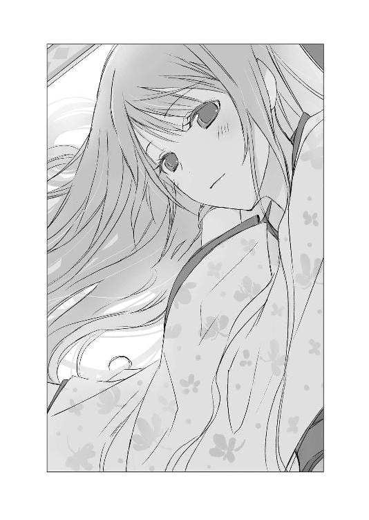
こんにちは、野村美月です。
『ヒカルが地球にいたころ......⑦』は〝空蟬〟です。「（赤ちゃん）できちゃった......」は、〝明石〟のイメージなので、企画段階でタイトルは〝明石〟でゆこうか迷ったのですが、やっぱりこれは〝空蟬〟だなーと。原典で人妻の空蟬が、薄衣だけ残して逃げ去るくだりは、非常になまめかしく美しーのですよ。
空蟬も朝顔と同様に、源氏を拒んだ女性ですが、高貴な身分で美人で才女というスペックの高さゆえに、誇りを持って拒んだ朝顔の姫とは違って、身分も美しさも源氏とはつりあわないと葛藤しながら拒む空蟬の心理がリアルで、今読んでも切なく胸に迫ってくるのが、素晴らしいです。空蟬は、紫の上や朧月夜のような華やかな美女ではありませんが、じわじわくる魅力がある女性だと思います。
そんなわけで、「できちゃった......」のタイトルは〝空蟬〟になりました。内容のほうは、〝明石〟がちょっとブレンドされている感じです。竹岡さんの空のキャラデザも、清楚な中に可愛らしさがあって、イメージにぴったりです！
作中、空が緑茶を愛飲していたり、グレープフルーツの芳香剤をたいたりしていますが、妊娠中のカフェインの摂取やアロマの扱いは、妊婦さんの状態によっては、より慎重な扱いが必要と思われますので、ご注意くださいませ！
一時期、職場で出産ラッシュだったのですが、みなさん、おなかの中の赤ちゃんのために、様々なこだわりを実践してらっしゃいました。部内に、出産後の赤ちゃんの写真を張り出すコーナーがあって、どの子もふくふくしていて愛らしく、職場の癒やしになっておりました。
話は変わって――前回〝朝顔〟からシリーズ後半戦です、とお伝えしました。すると、十二巻で完結なのですねと、おっしゃるかたが割といらっしゃって......まぎらわしくてごめんなさい。後半戦は〝朝顔〟を含めてです。なので計○○巻、残り○巻の予定です。そのままずばり書いてしまうと、色々差し障りがあるので、ぼかします。発売日も、本当は正しい日付を書きたいのですけれど、公式発表前だとなかなかそういうわけにもゆかず、曖昧な表現になってしまって申し訳ないです。原稿自体は○○巻まで仕上がっているので、ファミ通文庫さんのＨＰなどチェックしながらお待ちください。
是光の恋愛方面も、次の巻からどんどん修羅場ってゆきます。それに関連して、読者様からのお便りで、もうひとつ、シリーズ開始からずっと気になっていたことがあるのですが、『〝文学少女〟』の琴吹さんと帆夏は、そんなに似ていますか？ 容姿の描写が同傾向でツンデレ風味なので、そう感じるのでしょうか？ 私の中では、性格も行動パターンも真逆の女の子のつもりでいたので、悩みました。どちらかというと、琴吹さんのお友達の夕歌や森ちゃん寄りの女の子ですよね、帆夏は。
帆夏の恋が、琴吹さんと同じ運命になるのではと心配なさっている方が、たくさんいらっしゃいますが、『〝文学少女〟』と『ヒカル』は全く別の物語です。
この先、是光が誰を選ぶのかは、ぜひ読んで見届けていただければと思います。
誰が誰と結ばれても、また結ばれなくても、どうかあたたかく見守ってください。
次回、八巻は〝花散里〟――みちるのお話ですが、是光も他の女の子たちも、大いに悩んで、立ち止まったり行動したり、決断したりしています。発売は、夏休みの終わり頃の予定ですので、その頃にまたお会いできることを願っています。
それではまた！
二〇一三年三月一五日 野村美月
参考文献
『春山行夫の博物誌Ⅰ 花ことば――花の象徴とフォークロア２』春山行夫著、株式会社平凡社、一九八六年一二月一〇日／『三省堂選書１５５ 古典の中の植物誌』井口樹生著、株式会社三省堂、一九九〇年二月二五日／『新古今和歌集』峯村文人校注・訳、株式会社小学館、昭和四九年三月二〇日／『モモ』ミヒャエル・エンデ著、大島かおり訳、株式会社岩波書店、一九七六年九月二四日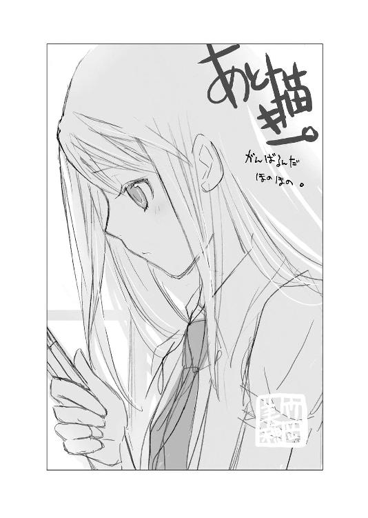
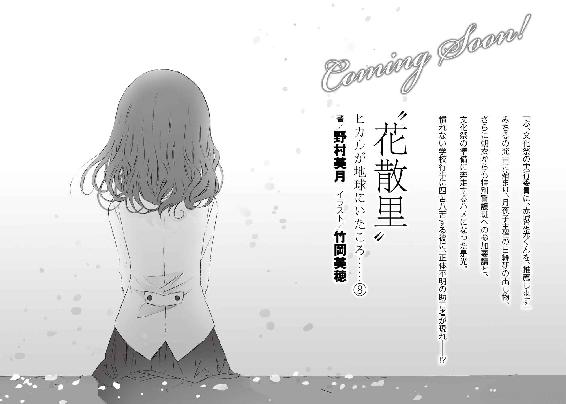
著者
Mizuki Nomura
知る人ぞ知る合唱王国福島出身。
幼い頃より「物語」を作るのが好きで、作家を目指す。
『赤城山卓球部に歌声は響く』で第３回えんため大賞小説部門最優秀賞を受賞。
趣味、朝寝、昼寝、夜寝、寝ること全般。
主著に『卓球場シリーズ』『BAD! Daddy』『うさ恋。』『〝文学少女〟』などがある。
イラスト
Miho Takeoka
７月１日生まれ。東京都出身、埼玉県在住の絵描き屋さん。
お茶とウサギと古い博物図鑑、透明水彩と月光荘のスケッチブックをこよなく愛する。
絵を描くか、何か創っていれば大いに幸せ。
http://www.nezicaplant.com/
電子版 ファミ通文庫
〝空蟬〟
ヒカルが地球にいたころ......(7)
著者／野村美月
イラスト／竹岡美穂
発行者 浜村弘一
発行所 株式会社 エンターブレイン
http://www.enterbrain.co.jp/
デザイン 高橋秀宜（Tport DESIGN）
(c)2013 Mizuki Nomura
PUBLISHED BY ENTERBRAIN, INC.
本電子書籍はファミ通文庫『〝空蟬〟ヒカルが地球にいたころ......(7)』
（2013年5月10日発行 初刷）を元にして制作しております。